목차
- CH4 개요: 실험 추적, 모델 레지스트리, 피처 스토어
- 들어가며: 소득 구간 이진 분류기 구축
- 실행 위치와 MLflow·MinIO 아키텍처
- 4장 저장소 구조 분석과 책 코드 연결
- 버킷별 역할과 데이터 흐름
- MLflow와 Feast의 데이터·메타데이터 흐름
- 4.1 실험 추적을 위한 MLflow 소개
- 실험 추적이 필요한 이유: 재현성의 재료
- MLflow 네 구성요소의 역할 구분
- 4.1.1 데이터 탐색: 미국 성인 소득 데이터
- 리스팅 4.1: 판다스로 데이터 훑어보기
- 리스팅 4.2: 범주형 변수 플롯 만들기
- 그림 4.2와 fill vs stack: 근무 형태별 소득 비율 읽기
- 4.1.2 MLflow 추적: 추적 서버와 실험 만들기
- run·experiment·artifact·parameter·metric의 데이터 모델
- 리스팅 4.3: EDA 플롯의 아티팩트 저장
- MLflow UI와 MinIO에서 결과 확인하기
- 리스팅 4.4: 원핫 인코딩과 학습·평가 분할
- 원핫 인코딩 애니메이션
- MinIO 버킷과 세 가지 모델, AUC
- 리스팅 4.5 시작: 데이터셋 3종을 MinIO 에 저장하고 MLflow 에 기록하기
- 결정 트리 학습과 MLflow 기록 (리스팅 4.5)
- 리스팅 4.5의 다섯 단계와 트리 기반 모델
- concat 인덱스 버그 학습 박스와 reference 경로 정정
- MLflow 화면이 보여 주는 것: 데이터셋 지문, 지표, 모델 폴더
- 실행 후 확인: MinIO 저장 위치
- 랜덤 포레스트와 자동 로깅 소개
- 리스팅 4.6 XGBoost 자동 로깅과 0/1 ROC 세 점
- 자동 로깅과 피처 중요도: 그림 4.6
- XGBoost objective별 run 분리
- 4.1.3 MLflow 모델 레지스트리: 최고 모델 선정 및 저장
- 모델 flavor와 서빙 계약
- MLflow 클라이언트를 통한 프로그래밍 방식 등록과 모델 버전·별칭(Alias) 관리
- 레지스트리 버전과 별칭: 배치 시작 시 선택 고정
- MLflow 협업 아키텍처와 피처 스토어의 필요성
- Kubernetes(K8s) 환경의 MLflow 배포 아키텍처와 영속성 설계
- 4.2 피처 스토어로서의 Feast: 왜 피처 스토어가 필요한가?
- 학습-서빙 skew: 같은 이름의 피처가 다른 값이 되는 세 갈래 길
- 시점 기준 조인(Point-in-Time Join)과 미래 데이터 누수 차단
- 시점 정확성과 데이터 누수: 사건이 일어난 시각과 알게 된 시각
- Feast의 이중 스토어와 Materialization
- 오프라인과 온라인 저장소를 둘로 나누는 이유
- 엔티티와 FileSource 정의: 리스팅 4.8·4.9
- 4.2.1 피처 등록: FeatureView, TTL의 진실, 그리고 feast apply
- Feast 핵심 객체와 apply의 의미: 값이 아니라 정의를 등록한다
- TTL, materialization, Redis 만료는 서로 다른 정책
- 4.2.1 피처 등록: 엔티티·소스·피처 뷰·설정 파일 정의 (Listing 4.8 ~ 4.11)
- 4.2.2 피처 조회: 오프라인 시점 기준 조회 (Listing 4.12)
- 4.2.2 피처 조회: 구체화(Materialize)와 Redis 온라인 스토어
- 4.2.2 피처 조회: 온라인 실시간 피처 조회 (Listing 4.13)
- 피처 서버의 HTTP 요청·응답 계약
- Feast UI와 피처 메타데이터 탐색
- Feast의 개념 복습과 오케스트레이션의 필요성
- Kubernetes(K8s) 환경에서의 Feast 프로덕션 아키텍처와 설계 원칙
- CH4 한눈에 보기 (종합 아키텍처) 및 다음 장(CH5) 안내
- 도구 비교: 피처 스토어와 실험 추적
- 4장의 목표는 소득이 50k 이하인지 초과인지 분류하는 이진 분류기를 통해 실험 추적, 모델 레지스트리, 피처 스토어의 역할과 연결을 이해하는 것입니다.
- MLflow는 experiment와 run에 설정·지표·파일을 연결합니다. Tracking·Projects·Models·Registry는 기록, 코드 실행 패키징, 모델 사용 규약, 등록 버전 관리라는 서로 다른 역할이며 독립적으로 사용할 수 있습니다.
- 재현성에는 데이터 스냅샷, 코드·환경, 전처리와 평가 조건의 기록·보존이 필요합니다. 모델의 flavor와 signature는 로딩·입출력 계약을 설명합니다. 별칭은 변경 가능하므로 배치 시작 때 선택한 숫자 모델 버전을 기록하며, stage는 2.9.0부터 deprecated이고 향후 제거 예정입니다.
- Feast는 Entity·DataSource·FeatureView·FeatureService 등의 정의를 공유하고 과거 이력용 오프라인 스토어와 저지연 조회용 온라인 스토어를 연결합니다. 정의 등록인 apply, 값 적재인 materialization, 피처 조회는 별개의 역할입니다.
- 시점 정확성과 시간 정책을 구분해야 합니다. 사건 시각과 도착·수정 시각은 다를 수 있으며, FeatureView TTL의 과거 조회 시간창은 Redis 키 만료와 다릅니다. 빠른 조회가 최신 데이터를 뜻하지는 않으며, 공통 피처 정의만으로 계산 규칙·갱신 지연의 불일치나 데이터 누수가 모두 해결되지는 않습니다.
- 협업과 도구 선택에서는 메타데이터·산출물의 보존, 인증·권한, 갱신·복구의 운영 책임을 함께 봅니다. 모델 등록·별칭 변경은 실제 배포와 구분합니다. 배치 파이프라인, 실시간 서빙, 드리프트 감시는 이후 장으로 이어집니다.
- 손으로 따라 해 보는 실습은 핸즈온 문서에서 다룹니다
CH4 개요: 실험 추적, 모델 레지스트리, 피처 스토어
CH4: Designing reliable ML systems (신뢰할 수 있는 ML 시스템 설계)
4장 : MLflow 실험 추적기를 활용한 머신러닝 실험 추적, MLflow 레지스트리에 훈련된 모델 저장 및 활용, Feast 피처 스토어에 모델 피처 등록.
이 한 문장이 4장 전체의 목차입니다. 세 덩어리로 나누어 읽으면 쉽습니다.
| 덩어리 | 하는 일 | 쓰는 도구 | 일상 비유 |
|---|---|---|---|
| ① 실험 추적 | 학습할 때마다 설정과 결과를 빠짐없이 기록 | MLflow 추적 서버 | 요리 연구가의 레시피 노트 |
| ② 모델 레지스트리 | 마음에 드는 모델에 이름과 버전을 붙여 보관·꺼내 쓰기 | MLflow 모델 레지스트리 | 앱스토어의 버전 목록 |
| ③ 피처 스토어 | 모델에 넣는 입력(피처)을 한 번 정의해 두고 학습·예측이 같이 쓰기 | Feast | 공용 레시피 카드와 재료 창고 |
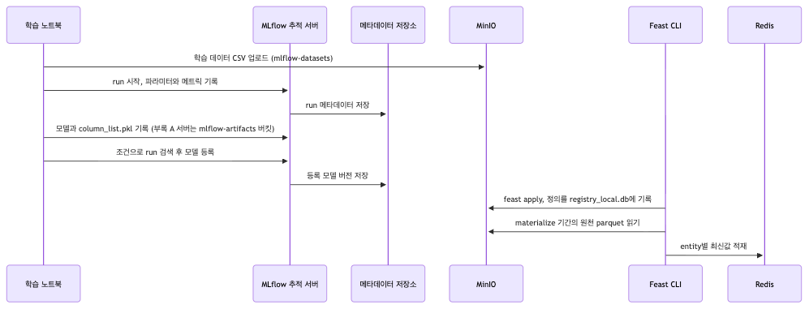
본문에서 이 그림에는 다음 블로그 링크가 캡션으로 달려 있습니다: https://johklo.github.io/docs/tech/machine-learning-platform-engineering/04-experiments-features-pipelines/
이미지 해설 — 4장 전체를 한 장으로 요약한 지도. 위에서 아래로 시간 순서대로 읽습니다. 세로 막대 6개가 등장인물이고, 가로 화살표가 "누가 누구에게 무엇을 보내는가"입니다.
| 등장인물 | 맡은 일 |
|---|---|
| 학습 노트북 | 코드를 실행하는 주체 (JupyterLab) |
| MLflow 추적 서버 | run, 파라미터, 지표, 모델 기록을 받는 서버 |
| 메타데이터 저장소 | run 정보와 등록 모델 버전을 담는 DB (이 책의 구성에서는 SQLite) |
| MinIO | 파일 창고. CSV, 모델, 그래프, Feast 정의 파일이 모인다 |
| Feast CLI | feast apply, feast materialize 명령을 실행하는 도구 |
| Redis | 엔티티별 최신 피처 값을 담는 빠른 저장소 |
- MLflow 쪽 흐름(위쪽 5개 화살표): ① 학습 데이터 CSV를 MinIO의
mlflow-datasets버킷에 업로드 → ② run을 시작하고 파라미터·메트릭 기록 → ③ run 메타데이터를 저장소에 저장 → ④ 모델과column_list.pkl기록(그림 주석: 부록 A 서버는mlflow-artifacts버킷) → ⑤ 조건으로 run을 검색해 모델 등록, 등록된 모델 버전을 저장소에 저장. - Feast 쪽 흐름(아래쪽 3개 화살표): ①
feast apply가 정의를 레지스트리 파일(registry_local.db)에 기록(MinIO) → ②materialize가 지정 기간의 원천 Parquet을 읽음 → ③ 엔티티별 최신 값을 Redis에 적재.
flowchart LR NB["학습 노트북"] -->|"CSV 업로드"| MINIO["MinIO 파일 창고"] NB -->|"run 파라미터 지표 모델"| MLF["MLflow 추적 서버"] MLF -->|"메타데이터"| DB["SQLite"] MLF -->|"모델 그래프 파일"| MINIO FEAST["Feast CLI"] -->|"apply 정의 등록"| MINIO MINIO -->|"materialize 원천 Parquet 읽기"| FEAST FEAST -->|"최신 값 적재"| REDIS["Redis"]
⚠ 바로잡기: 위 그림은 4장의 개념 흐름을 요약한 설명도입니다. MinIO 포트나 서버 위치 같은 값은 구성 환경마다 다르며 그림의 흐름 자체와는 별개입니다. 또한 Feast 레지스트리 파일registry_local.db는 확장자가.db이지만 SQLite 데이터베이스가 아니라 Feast 가 정의를 직렬화(protobuf)해 저장한 파일로 알려져 있으며, 위 그림의 MLflow 메타데이터 저장소(SQLite)와는 별개의 장부입니다.
이 학습 자료에서는 책 제목·저자·판본 표기를 확정하지 않습니다. 자료마다 표기가 달라 확인되지 않기 때문입니다. 확인된 것은 이 장의 코드 저장소 주소 https://github.com/practical-mlops/chapter-4 입니다.
들어가며: 소득 구간 이진 분류기 구축
들어가며 : 소득 구간을 50k 이하와 50k 초과로 분류하는 간단한 이진 분류기 구축
본문 토글의 제목은 "소득 구간을 50k 이하와 50k 초과로 분류하는 간단한 이진 분류기 binary classifier 구축"입니다. 아래는 이 토글의 본문 7개 문단을 순서대로 옮기고, 각 문단 밑에 풀이를 붙인 것입니다.
1. 임시방편 실험에서 프로덕션 수준으로
머신러닝 엔지니어링의 심화 단계로 접어들면서, 이제 머신러닝 실험을 신뢰성 있게 추적하고 재현하며 배포하는 방법이라는 핵심 과제를 다뤄야 할 시점입니다. 이 장에서는 임시 방편적 실험을 프로덕션 수준의 머신러닝 워크플로로 전환하는 데 필요한 핵심 도구들을 소개합니다. 안정성을 높이면서도 실제 애플리케이션에 충분히 유연하게 대응할 수 있는 실용적인 머신러닝 플랫폼을 구축하겠습니다.
풀이. "프로덕션(production)"은 실제 사용자가 쓰는 운영 환경입니다. 노트북에서 이것저것 돌려 보던 실험을 "나중에 누가 봐도 똑같이 다시 할 수 있고(재현), 어떤 설정으로 만든 모델인지 알 수 있고(추적), 실제 서비스에 올릴 수 있는(배포)" 상태로 만들겠다는 선언입니다.
2. 1.3절의 컴포넌트를 다시 본다
특히, 1.3절에서 소개한 머신러닝 플랫폼의 개별 컴포넌트들을 살펴보겠습니다. 데이터 과학 실험 추적, 모델 피처 저장을 비롯하여 파이프라인 오케스트레이션과 모델 배포를 지원하는 다양한 도구와 애플리케이션을 살펴보겠습니다. 이러한 도구들로 완전히 동작하는 미니 머신러닝 플랫폼을 구성하고, 도구 간 상호작용을 중점적으로 설명하는 것이 목표입니다.
(원문의 "상화작용"은 오타로 보여 "상호작용"으로 고쳤습니다.)
풀이. 목표는 도구 하나하나의 사용법보다 도구들이 서로 어떻게 맞물리는지를 보는 것입니다. "미니 플랫폼"은 실제 회사의 거대한 ML 플랫폼을 작게 줄여 직접 돌려 보는 실습판이라는 뜻입니다. "파이프라인 오케스트레이션"은 여러 작업(데이터 준비 → 학습 → 평가 → 배포)의 순서와 실행을 자동으로 관리하는 것이며, 5장에서 다룹니다.
3. 데이터 이해부터: EDA, 분할, 모델 비교
대부분의 데이터 과학자들이 그러하듯, 데이터를 이해하는 것부터 머신러닝 여정을 시작하겠습니다. 탐색적 데이터 분석(EDA)을 수행하고, 데이터셋을 훈련 세트와 테스트 세트로 분할한 뒤, 여러 모델을 실행하여 최고 성능의 모델을 선택하겠습니다. 데이터 과학 프로젝트의 초기 단계는 대부분 탐색적 성격을 띠므로, 다양한 피처, 모델 하이퍼파라미터, 프레임워크를 실험해 보겠습니다.
풀이. 순서는 EDA → 훈련/테스트 분할 → 여러 모델 학습 → 최고 모델 선택입니다.
| 단계 | 하는 일 | 비유 |
|---|---|---|
| EDA | 데이터를 훑어보며 어떤 열이 있고 분포가 어떤지 확인 | 요리 전에 재료 상태 확인 |
| 훈련/테스트 분할 | 학습용과 평가용을 나눔 (평가용은 학습에 쓰지 않음) | 문제집과 모의고사 분리 |
| 여러 모델 학습 | 결정 트리, 랜덤 포레스트, XGBoost 등을 각각 학습 | 세 가지 풀이 방식 비교 |
| 최고 모델 선택 | 성능 지표로 가장 좋은 모델을 고름 | 시험 점수로 대표 선수 뽑기 |
덧붙이면, 이 실습처럼 "테스트 점수로 최고 모델을 고르는" 방식은 입문용으로 단순화한 것입니다. 운영에서는 후보 선택에는 검증 세트를 쓰고 테스트 세트는 마지막 확인에만 쓰는 경우가 많습니다. 테스트 세트를 여러 번 보고 고르면 테스트 세트에 맞춰 고른 셈이 되어 성능이 실제보다 좋아 보일 수 있기 때문입니다 (배경 설명이며 직접 검증하지는 않았습니다).
4. MLflow로 실험을 추적하고 레지스트리에 등록
실험을 체계적으로 추적하기 위해 MLflow 실험 추적 도구를 사용하겠습니다. MLflow는 모델의 성능이 예상 기준을 충족했을 때 최적의 모델을 선택하는 데 도움을 줍니다. 그런 다음 실험을 재현하거나, 다른 데이터 과학자 및 머신러닝 엔지니어와 협업하거나, 배포 시점에 모델을 불러올 수 있도록 해당 모델과 모든 의존성을 MLflow 모델 레지스트리에 등록합니다.
풀이. MLflow의 역할은 두 갈래입니다.
- 추적(tracking): 학습 한 번(run)마다 설정·결과·파일을 기록 → 나중에 비교하고 재현.
- 레지스트리(registry): 고른 모델을 "이름 + 버전"으로 등록 → 팀원이나 배포 과정이 이름으로 찾아 불러옴.
"의존성(dependency)"은 모델을 돌리는 데 필요한 라이브러리와 그 버전 정보입니다. 모델 파일만 있고 어떤 라이브러리 버전으로 만들었는지 모르면 다른 환경에서 열리지 않을 수 있습니다.
5. 피처 엔지니어링과 Feast
실험 과정에서 모델 성능 향상에 도움이 되는 피처 엔지니어링 feature engineering 을 통해 새로운 피처를 생성할 수 있습니다. 이러한 피처들은 모델 배포 시에도 필요하고 팀원과의 협업에도 도움이 되므로, 마찬가지로 등록해 두어야 합니다. 이를 위해 피스트 Feast 라는 피처 스토어를 사용합니다. 피스트는 피처의 저장 인터페이스 역할을 하여, 모델 훈련이나 예측 생성 시 해당 피처에 접근할 수 있는 인터페이스도 제공합니다.
풀이. 새 피처를 만들었다면 그 계산법이 학습 때와 예측 때 똑같이 적용되어야 합니다. 둘이 어긋나면 "연습 때와 실전 때 규칙이 다른" 상황(훈련-서빙 왜곡)이 됩니다. Feast는 피처를 한 곳에 정의해 두고, 학습할 때(과거 값 조회)와 예측할 때(최신 값 조회) 같은 정의를 통해 꺼내 쓰게 해 줍니다.
6. 배포 예고: Kubeflow, BentoML, Evidently
피처와 모델이 각각 준비되면, 모델 배포에 집중하겠습니다. 배치 batch 및 실시간 사용 사례를 위해 모델을 배포하겠습니다. 배치 사용 사례에서는 Kubeflow Pipelines 오케스트레이터를 활용하여 예측을 생성합니다. 실시간 사용 사례에서는 벤토ML BentoML을 배포 관리자로 사용해 모델을 API 엔드포인트로 배포합니다. 또한 데이터 분포 변화로 인해 시간이 지남에 따라 성능이 저하되는 프로덕션 환경에서의 문제도 다루겠습니다. 에비던틀리 Evidently 데이터 드리프트 모니터링 도구를 활용하여 피처 데이터 분포를 지속적으로 추적합니다.
(원문의 "오케스트페이터", "벤토BentoML"은 오타로 보여 바로잡았습니다.)
풀이. 이 문단은 이후 장의 예고입니다. 이번 4장에서 직접 하는 것은 실험 추적과 피처 스토어입니다.
| 용어 | 뜻 | 쉬운 비유 |
|---|---|---|
| 배치 추론 | 데이터를 모아 한꺼번에 예측 (예: 매일 밤 전체 고객 점수 계산) | 월말 일괄 청구서 |
| 실시간 추론 | 요청이 올 때마다 즉시 예측 (API) | 계산대에서 바로 결제 |
| Kubeflow Pipelines | 배치 작업의 순서를 짜서 자동 실행해 주는 오케스트레이터 | 공장의 작업 순서 관리자 |
| BentoML | 모델을 API 서버로 만들어 배포하는 도구 | 모델을 창구 직원으로 세우는 도구 |
| Evidently | 시간에 따라 데이터 분포가 바뀌는 것(드리프트)을 감시 | 입맛이 변한 손님을 알아채는 점장 |
7. 그림 4.1과 이 장의 예제
이 모든 도구는 머신러닝 플랫폼의 중요한 컴포넌트입니다. 이제 1장에서 소개한 머신러닝 플랫폼 다이어그램을 다시 살펴볼 수 있습니다. 이러한 도구들이 제자리에 배치된 머신러닝 플랫폼은 그림 4.1과 같은 모습이 됩니다.
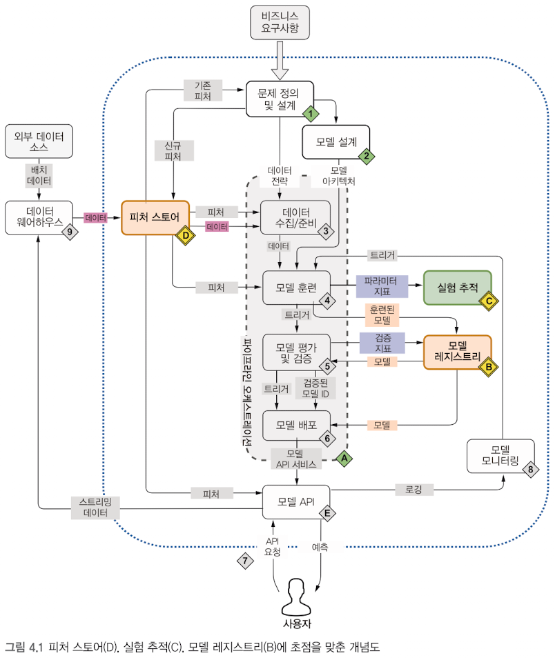
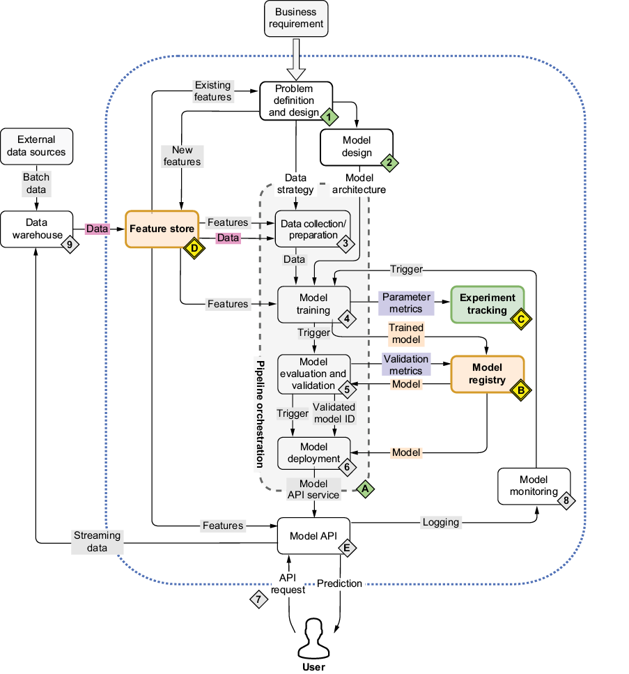
이미지 해설 — 그림 4.1 (두 장은 같은 그림의 한글판과 영문판). 1장에서 본 ML 플랫폼의 큰 지도에서, 이번 장이 맡은 칸 세 개를 색칠한 그림입니다. "내가 지금 지도의 어디를 공부하는가"를 알려 줍니다.
| 기호 | 칸 이름 | 그림에서 하는 일 | 이 장의 도구 |
|---|---|---|---|
| D (주황) | 피처 스토어 | 데이터 웨어하우스에서 온 데이터와 피처를 받아 데이터 준비·모델 훈련·모델 API에 피처를 공급 | Feast |
| C (초록) | 실험 추적 | 모델 훈련 칸에서 보낸 "파라미터, 지표"를 기록 | MLflow 추적 |
| B (주황) | 모델 레지스트리 | 훈련된 모델을 받아 보관하고, 평가·검증 칸과 검증 지표를 주고받으며, 배포 칸에 모델을 내줌 | MLflow 레지스트리 |
- 나머지 칸: 1 문제 정의 및 설계 → 2 모델 설계 → 3 데이터 수집/준비 → 4 모델 훈련 → 5 모델 평가 및 검증 → 6 모델 배포 → E 모델 API → 7 사용자(API 요청과 예측) → 8 모델 모니터링 → 9 데이터 웨어하우스. 점선으로 묶인 3~6은 A 파이프라인 오케스트레이션(5장)입니다.
- 초보자 읽는 법: 왼쪽 위에서 "비즈니스 요구사항"이 들어오고, 오른쪽 아래의 "사용자"가 예측을 받는 것이 전체 여정입니다. 그 사이에서 학습 기록은 C, 완성된 모델은 B, 입력 재료는 D에 맡긴다고 기억하면 됩니다.
flowchart LR D["D 피처 스토어 Feast"] -->|"피처"| T["4 모델 훈련"] T -->|"파라미터 지표"| C["C 실험 추적 MLflow"] T -->|"훈련된 모델"| B["B 모델 레지스트리 MLflow"] B -->|"모델"| DEP["6 모델 배포"] D -->|"피처"| API["E 모델 API"] DEP --> API
이 머신러닝 플랫폼을 활용하여 소득 구간을 50k 이하와 50k 초과로 분류하는 간단한 이진 분류기 binary classifier 를 구축하겠습니다. 앞서 설명한 MLOps 도구를 사용해 이 모델을 구축하고 배포합니다. 예제 자체는 단순하지만, 여기서 얻은 교훈은 더 복잡한 프로젝트에도 충분히 적용할 수 있습니다. 이 장에서는 실험 추적과 피처 스토어에 집중합니다. 이 장의 전체 코드는 https://github.com/practical-mlops/chapter-4 에서 확인할 수 있습니다.
(원문의 "복잡합 프로젝트"는 "복잡한 프로젝트"의 오타로 보여 바로잡았습니다.)
풀이. 예제는 이진 분류, 즉 한 사람의 정보(직업, 학력, 결혼 상태 등)를 보고 소득이 50k(5만 달러) 이하인지 초과인지 둘 중 하나로 맞히는 문제입니다. 데이터는 미국 성인 소득 데이터(Adult 또는 Census Income로 알려진 데이터)를 가공한 CSV로, 이 저장소의 data/income_data.csv는 30,162행·9컬럼이고 정답 열 이름은 Target입니다 (출처: 아래 "실습 계획" 노트). 문제가 쉬워도 목적은 모델 성능이 아니라 MLflow와 Feast를 쓰는 흐름 익히기입니다.
스스로 점검 — 질문과 모범 답변
Q1. MLflow와 Feast는 각각 무엇을 "기억"해 주나요?
모범 답변: MLflow는 학습의 기록(파라미터, 지표, 파일) 과 모델 버전을, Feast는 모델 입력인 피처의 정의와 값을 맡습니다. 한 줄로 "MLflow = 실험·모델 노트, Feast = 피처 창고와 카탈로그"입니다.
Q2. 그림 4.1에서 B, C, D는 각각 어느 도구에 대응하나요?
모범 답변: B 모델 레지스트리와 C 실험 추적은 MLflow, D 피처 스토어는 Feast입니다.
Q3. 소득 분류처럼 단순한 예제로 배워도 되는 이유는?
모범 답변: 본문이 말하듯 예제는 단순해도 "추적·등록·피처 관리" 흐름은 더 복잡한 프로젝트에도 그대로 적용되기 때문입니다. 이 장의 목표가 최고 성능이 아니라 도구 사용 흐름이므로 문제는 쉬울수록 흐름이 잘 보입니다.
Q4. 이 장에서 직접 하지 않고 이후로 미루는 것은?
모범 답변: 배치 예측(Kubeflow Pipelines), 실시간 API 배포(BentoML), 드리프트 모니터링(Evidently)입니다. 4장은 실험 추적과 피처 스토어에 집중합니다.
실행 위치와 MLflow·MinIO 아키텍처
4장의 구조는 노트북 실행, 실험 기록, 파일 저장의 세 역할로 나뉩니다. JupyterLab은 노트북을 다루는 웹 화면이고, 커널은 셀의 파이썬 코드를 실제로 실행하는 프로세스입니다. MLflow 서버는 run·파라미터·지표·모델 등록 정보를 관리하며, MinIO는 S3 호환 저장소로 데이터셋 CSV·모델·그래프를 보관합니다.
localhost는 실행 위치를 가리킵니다
같은 노트북을 브라우저로 열어도 코드가 실행되는 위치는 커널의 위치입니다. localhost는 요청을 보내는 프로세스가 속한 네트워크 공간의 자기 자신을 가리킵니다. 커널이 서버에 있으면 서버 자신이고, PC에 있으면 PC 자신입니다. Pod 내부의 localhost도 해당 Pod의 네트워크 공간을 뜻하므로 다른 서비스의 주소와 구분해야 합니다.
브라우저의 접속 위치와 커널의 실행 위치를 구분하면 같은 문자열 주소가 다른 대상을 가리키는 이유를 이해할 수 있습니다. 서버 커널이 쓰는 저장소 주소와 PC 브라우저가 쓰는 서버 주소는 서로 다른 통신 경로입니다. 서비스에 필요한 것은 실행 주체에서 목적지까지 도달 가능한 주소이며, 포트와 노출 방식은 그 경로의 구현 설정입니다.
mlflow-datasets는 데이터셋 CSV의 보관 영역이고 mlflow-artifacts는 모델·플롯 등 run 파일의 보관 영역입니다. 버킷의 역할을 실험 메타데이터 저장과 분리하면, 노트북·추적 서버·파일 저장소 사이의 책임이 명확해집니다.
4장 저장소 구조 분석과 책 코드 연결
4장 저장소 구조 분석과 책 코드 연결
책 4장("ML 시스템을 처음부터 설계")의 핵심 흐름은 EDA → MLflow 추적 → 모델 3종 학습 → 최고 모델 등록입니다. 책의 리스팅 4.1~4.6 내용이 하나의 통합 노트북에 구조적으로 담겨 있습니다.
1. 저장소 구성 (practical-mlops/chapter-4)
| 파일/폴더 | 내용 |
|---|---|
data/income_data.csv |
Adult 소득 데이터. 30,162행, 9컬럼, 타깃(정답) 열은 Target |
mlflow/data_exploration_and_model_training.ipynb |
4장 실습 대상 노트북 |
requirements.txt |
mlflow==3.0.0, xgboost, sklearn, minio, feast 등 의존성 |
feast/, feast_retrieval/, scripts/ |
Feast 피처 스토어 구성 파일 디렉터리 |
책 본문과 코드의 연결
| 리스팅 | 하는 일 |
|---|---|
| 4.1 | describe, info로 데이터 요약 (EDA) |
| 4.2 | plotnine ggplot으로 범주형 변수와 타깃 분포를 비교 (EDA) |
| 4.3 | 4.2와 같은 루프를 mlflow.start_run 안에 넣고 log_artifacts로 플롯을 서버에 저장 |
| 4.4 | get_dummies(원-핫 인코딩)와 train_test_split을 쓰고, 추론에 쓸 column_list.pkl을 저장 |
| 4.5 | DecisionTree와 RandomForest를 학습하고 log_input, log_metric, log_model로 기록. 데이터셋은 MinIO의 mlflow-datasets 버킷에 올림 |
| 4.6 | XGBoost에 mlflow.xgboost.autolog()를 적용 |
2. 핵심 차이점과 설계 개념
| 항목 | 책의 기본 설명 | 실무·클러스터 환경의 원리 |
|---|---|---|
| 아티팩트 저장 위치 | mlflow ui는 아티팩트를 로컬 ./mlruns에 기본 저장 |
mlflow server --default-artifact-root s3://...로 플롯과 모델을 MinIO/S3 같은 원격 객체 스토어에 중앙 집중 저장 |
minio 패키지 |
- | PyPI의 minio는 서버가 아니라 파이썬 코드가 저장소와 통신하기 위한 클라이언트 SDK |
⚠ 덧붙임 (MLflow ui와 server): 책은 "`mlflow ui`는 아티팩트를 로컬 `./mlruns`에 저장한다"고 합니다. 기본값이 로컬 `./mlruns`라는 뜻으로는 맞습니다. 다만 `mlflow ui`는 `mlflow server`의 별칭(alias)에 가까운 명령으로 알려져 있어, 서버 옵션으로 `--default-artifact-root`를 주면 `ui`도 같은 방식으로 원격 저장소를 쓸 수 있습니다. 또 서버 옵션을 바꿔도 이미 만들어진 실험의 artifact URI는 바뀌지 않는다고 알려져 있으니, 저장 위치를 바꾸려면 새 실험에서 확인해야 합니다.
스스로 점검 — 핵심 개념 질문과 모범 답변
Q1. 책 대신 mlflow server --default-artifact-root s3://...를 쓰는 이득은?
모범 답변: 플롯과 모델 같은 파일이 서버의 로컬 디스크가 아니라 MinIO(S3 호환 저장소)에 쌓여, 여러 사람이 같은 저장소를 보고 서버를 다시 띄워도 파일이 보존됩니다.
Q2. MinIO 서버와 PyPI minio 패키지의 차이는?
모범 답변: 서버는 파일을 보관하는 객체 저장소 서비스 자체이고, 패키지는 파이썬 코드가 그 서버에 요청을 보내는 클라이언트 라이브러리(SDK)입니다.
버킷별 역할과 데이터 흐름
이 장의 저장소는 mlflow-datasets, mlflow-artifacts, feature-data-sets, feature-registry 네 버킷으로 용도를 나눕니다.
버킷별 용도
| 버킷 | 용도 | 내용 | 누가 사용하는가 |
|---|---|---|---|
| mlflow-datasets | MLflow 노트북 | 소득 분류 데이터를 전처리한 특성·학습·테스트 CSV | 노트북의 save_df_to_minio() 가 minio SDK 로 직접 업로드 |
| mlflow-artifacts | MLflow 서버 | run별 아티팩트(모델 파일, 그래프 등) | 노트북의 mlflow.log_* 가 S3 엔드포인트로 업로드 |
| feature-data-sets | Feast 오프라인 스토어 | demographic, relationship, occupational 특성 parquet 3개 | 사용자가 업로드하고 feast apply·materialize 가 읽음 |
| feature-registry | Feast 레지스트리 | registry_local.db(엔티티와 특성 뷰 메타데이터), 선택적으로 feature_store.yaml |
feast apply 가 쓰고 이후 Feast 명령이 읽음 |
데이터 흐름
노트북 ──CSV──────────────► mlflow-datasets
노트북 ──log_model/artifact─► mlflow-artifacts (메타데이터는 MLflow 서버 SQLite)
feature_data/*.parquet ──업로드──► feature-data-sets ──materialize──► Redis(온라인 스토어)
feast apply ──메타데이터───────────► feature-registry
위 그림을 mermaid 로 다시 그리면 다음과 같습니다.
flowchart LR NB["노트북"] -->|"CSV"| B1["mlflow-datasets"] NB -->|"log_model log_artifact"| B2["mlflow-artifacts"] ML["MLflow 서버"] -.->|"메타데이터"| DB["SQLite"] PQ["feature_data parquet"] -->|"업로드"| B3["feature-data-sets"] B3 -->|"materialize"| RD["Redis 온라인 스토어"] AP["feast apply"] -->|"메타데이터"| B4["feature-registry"]
⚠ 바로잡기: 책 본문의 버킷 이름feature_data_sets(밑줄)는 오기이며 실제 코드·실습은feature-data-sets(하이픈)입니다.
feature_store.yaml에 Redis 암호를 평문으로 저장하면 버킷 접근 권한이 자격 증명 접근 권한으로 이어집니다. 연결 설정과 비밀 값을 분리하는 것이 보안 설계의 핵심입니다.
⚠ 바로잡기: 이 구성의 registry_local.db는 파일 이름과 달리 SQLite 데이터베이스가 아니라 Feast 메타데이터를 직렬화한 protobuf 레지스트리 파일입니다.
MLflow와 Feast의 데이터·메타데이터 흐름
MLflow는 실험·run·모델 버전의 메타데이터를 관리하고, Feast는 피처 정의와 조회를 관리합니다. 각 구성요소가 어떤 정보를 전달하는지 구분하면 데이터 흐름을 이해할 수 있습니다.
MLflow의 기록과 파일 저장
- 클라이언트의
set_tracking_uri는 추적 서버를 지정하고,set_experiment("income-classifier")는 실험을 선택하거나 만듭니다. start_run으로 생성한 run의 식별자와 상태는 서버의 SQLite에 기록됩니다.- 이 장의
--no-serve-artifacts구성에서는 노트북이 MinIO에 직접 CSV(save_df_to_minio)와 아티팩트(log_artifacts,log_model)를 올립니다.log_param,log_metric,log_input의 메타데이터는 MLflow 서버에 전달됩니다. search_runs는roc_auc_score_test등의 지표로 run을 찾고,register_model은 선택한 모델을 레지스트리의 버전으로 등록합니다.
Feast의 정의·적재·조회
- parquet 3개는
feature-data-sets버킷에 저장되는 오프라인 피처 데이터입니다. apply는 엔티티·피처 정의를 읽어 레지스트리(registry_local.db)를feature-registry버킷에 기록합니다. 메타데이터 등록과 피처 값 적재는 별개입니다.- materialization은 지정한 시간 범위의 오프라인 데이터(MinIO parquet)를 읽어 Redis에 사용자별 최신값을 적재합니다.
- 학습·배치는
get_historical_features로 과거 시점 기준 피처를 조회합니다. 실시간 요청은get_online_features또는 HTTP 피처 서비스로 Redis의 값을 조회합니다.
sequenceDiagram participant U as "노트북 또는 CLI" participant ML as "MLflow 서버" participant S3 as "MinIO" participant FS as "Feast CLI" participant RD as "Redis" U->>ML: "set_experiment 와 start_run" U->>ML: "지표 파라미터 데이터셋 이력 기록" U->>S3: "CSV 모델 플롯 직접 업로드" U->>ML: "search_runs 후 register_model" U->>S3: "parquet 3개 업로드" U->>FS: "feast apply" FS->>S3: "registry_local.db 기록" U->>FS: "feast materialize" FS->>S3: "parquet 읽기" FS->>RD: "사용자별 최신값 적재" U->>RD: "get_online_features 로 조회"
구성요소의 책임
- Q. MLflow 서버가 죽어도 MinIO 에 이미 올라간 파일은 사라지나요? — A. 아니요. 파일은 별도 저장소(MinIO)에 있고, 서버는 메타데이터 목록만 관리합니다. 단, 서버가 꺼져 있으면 UI 에서 목록을 볼 수 없습니다.
- Q.
materialize를 안 하고get_online_features를 부르면? — A. Redis 에 값이 없어 값이 비어(None) 돌아옵니다. - Q. 모델 등록과 피처 조회는 같은 일인가요? — A. 아닙니다. 모델 등록은 “모델 파일의 버전 관리”, Feast 는 “입력 피처 값의 정의와 조회”입니다. 이 장의 노트북 학습은 아직 Feast 를 사용하지 않습니다.
⚠ 바로잡기: 이 구성의 registry_local.db는 protobuf 파일 레지스트리입니다. 파일 확장자가 저장 형식을 뜻하지는 않습니다. 온라인 조회에 값이 없는 것은 materialization이나 Push API 등으로 아직 적재되지 않았거나 해당 엔티티의 값이 없을 때입니다.
4.1 실험 추적을 위한 MLflow 소개
4.1 실험 추적을 위한 MLflow: 왜 파라미터를 기록해야 할까
모델을 만들 때는 바뀔 수 있는 값이 많습니다. 어떤 훈련/테스트 데이터를 썼는지, 모델 가중치가 어떤지, 정확도 같은 성능 지표가 얼마인지가 모두 추적 대상 파라미터입니다. 이것을 기록해 두어야 하는 이유는 세 가지입니다.
| 이유 | 영어 | 풀이 | 예시 |
|---|---|---|---|
| 재현성 | Reproducibility | 동료가 내 작업을 받아 같은 결과를 다시 얻을 수 있어야 합니다. 파라미터를 꼼꼼히 기록하면 실험을 재현하는 데 도움이 됩니다. | 레시피에 "오븐 200도, 20분"이 적혀 있어야 누가 해도 같은 빵이 나옵니다. |
| 모델 선택 | Model selection | 보통 한 문제에 모델을 여러 개 만듭니다. 구조와 성능 지표가 서로 다르므로, 기록이 있어야 가장 좋은 모델을 고를 수 있습니다. | 결정 트리 0.82, 랜덤 포레스트 0.86 처럼 나란히 놓고 비교합니다. |
| 성능 추적 | Performance tracking | 선택한 모델은 새 훈련 데이터로 다시 학습해야 할 수 있습니다. 이전 기록이 있어야 재훈련한 모델이 나아졌는지 비교됩니다. | 지난달 점수표가 있어야 이번 달 점수가 올랐는지 압니다. |
기록하는 다른 방법들은 무엇이 불편한가
- 버전 관리(Git)에 파라미터를 커밋하는 방법: 특정 시점을 재현하려면 그 커밋을 열어 코드를 다시 실행하면 됩니다. 하지만 주기적으로 커밋하고, 나중에 찾을 수 있게 태그를 붙이는 일이 번거롭습니다.
- 파라미터를 파일에 저장하는 방법: 주피터 노트북(Jupyter Notebook, 코드와 결과를 셀 단위로 실행하며 보여 주는 대화형 문서)과 파일을 함께 공유하면, 동료가 자기 환경에서 재현할 수 있도록 파일 사용법까지 따로 설명해야 합니다.
- 이 문제들을 풀기 위해 MLflow 를 씁니다. MLflow 는 실험 파라미터를 체계적으로 관리하는 추적 서버(tracking server) 를 제공합니다.
flowchart LR
A["노트북에서 모델 학습"] --> B["MLflow 추적 서버"]
B --> C["메타데이터 DB run ID 이름 시간"]
B --> D["아티팩트 저장소 플롯 모델 데이터셋"]
C --> E["MLflow 웹 UI run 비교와 조회"]
D --> E위 그림은 앞으로 이 절에서 직접 확인하게 될 흐름의 지도입니다. 학습 코드는 노트북에서 돌고, 기록은 추적 서버와 저장소로 모이며, 사람은 웹 UI 로 봅니다.
이 절의 진행 방식
대부분의 데이터 과학자가 쓰는 개발 환경은 주피터 노트북입니다. 데이터 분석과 머신러닝은 반복적이고 탐색적인 작업이라, 유연하고 대화형인 노트북이 잘 맞습니다. 여기서는 소득 데이터에 간단한 탐색적 데이터 분석(EDA) 을 하고, 소득 분류 모델 몇 가지를 만들며, 실험을 재현·추적하는 MLflow 추적 로직을 함께 넣습니다.
머신러닝 엔지니어가 자주 받는 세 가지 질문과 모범 답변
MLflow 는 실험 과정에 체계적인 구조를 부여해서 아래 질문에 답할 수 있게 해 줍니다.
| 질문 | 모범 답변 (이 장에서 어디서 확인되는가) |
|---|---|
| 현재 프로덕션에 배포된 모델 버전은 무엇입니까? | 모델을 모델 레지스트리(Model Registry)에 이름과 버전으로 등록해 두고, 어느 버전이 운영용인지 표시합니다. 이 장 뒤쪽 4.1.3 에서 등록 방법을 다룹니다. (stage 는 구버전 방식이고 alias 가 대안이라는 점은 해당 절에서 설명합니다.) |
| 어떤 파라미터가 최상의 결과를 이끌어냈습니까? | 각 run 에 파라미터와 지표가 함께 기록되므로, 웹 UI 에서 run 들을 나란히 놓고 roc_auc_score_test 같은 지표가 가장 높은 run 의 파라미터를 읽으면 됩니다. 이 절 끝의 그림 4.5 가 그 화면입니다. |
| 6개월 전의 결과를 재현할 수 있습니까? | 그 run 의 run ID 로 파라미터, 학습에 쓴 데이터셋(MinIO 에 저장한 CSV 경로), 저장된 모델 파일을 불러올 수 있으면 가능합니다. 이 절에서 데이터셋 경로를 log_input 으로, 모델을 log_model 로 남기는 이유입니다. 단, 분할을 고정하지 않으면(random_state 없음) 지표가 조금씩 달라지므로 값을 고정해 기록하는 편이 좋습니다. |
실험 추적이 필요한 이유: 재현성의 재료
기록에서 복원까지 필요한 연결
실험의 설정과 점수를 남기는 이유를 이해했다면, 다음 질문은 “이 기록으로 당시 조건을 다시 찾을 수 있는가”입니다. 재현성은 같은 실행을 다시 구성하고 결과의 차이를 설명할 수 있는 성질입니다. 코드 식별자, 데이터, 전처리, 라이브러리와 실행 환경, 설정값과 난수 시드가 서로 연결되어야 기록이 복원의 근거가 됩니다. 일반 소프트웨어도 빌드 환경과 의존성이 필요하며, 머신러닝에서는 학습 데이터와 분할 조건까지 중요한 입력으로 더해집니다.
스냅샷은 특정 시점의 내용을 보존한 사본입니다. digest는 내용에서 계산한 식별용 요약값입니다. 파일 주소는 “어디에 있는가”, digest는 “어떤 내용인가”를 설명하지만, 두 정보만으로 삭제되거나 덮어써진 파일을 되살릴 수는 없습니다. 추적 장부와 원본 보존을 별개의 책임으로 설계하는 이유입니다.
무엇을 기록하고 무엇을 보존할까요
| 대상 | 기록할 단서 | 함께 보존할 내용 |
|---|---|---|
| 데이터 | 원천 위치, 객체 버전 또는 digest, 기준 시각 | 그 식별자에 대응하는 원천 스냅샷 |
| 코드와 전처리 | 코드 버전, 범주 목록과 전처리 버전 | 소스와 학습에 사용한 변환 산출물 |
| 실행 환경 | 라이브러리 버전과 환경 명세 | 모델을 복원할 수 있는 실행 환경 |
| 비교 조건 | 분할 방식, 시드, 평가 지표와 데이터 용도 | 학습·평가 행을 다시 구분할 근거 |
MLflow의 데이터셋 기록은 출처·스키마·digest 같은 정보를 run에 연결하는 데 도움이 됩니다. 이것이 원본 데이터 전체를 자동으로 보관한다는 뜻은 아닙니다. 주소가 같은 파일이라도 내용이 갱신될 수 있으므로, 과거 run에서 참조한 버전과 현재 파일의 관계를 구분해야 합니다. 모델과 전처리기를 따로 보관한다면 서로 어떤 버전 조합으로 사용했는지도 남깁니다.
점수 차이를 설명하는 장부
다음은 가상의 예시입니다. 트리 깊이 4·8·12와 난수 시드 2개를 조합하면 학습은 6번입니다. 깊이 8의 AUC가 0.86이고 깊이 12의 AUC가 0.87이어도, 평가한 행이 서로 다르면 0.01의 차이를 깊이 변경의 효과로 바로 해석하기 어렵습니다. AUC는 분류 점수의 순위 구분 능력을 요약하는 지표입니다. 같은 평가 데이터와 지표 정의를 사용했는지가 비교의 출발점입니다.
기록에는 점수뿐 아니라 데이터의 용도를 연결합니다. 후보 선택에 쓰는 데이터와 최종 평가 데이터의 목적을 구분하면 나중에 같은 숫자가 무엇을 의미했는지 알 수 있습니다. 여러 실행의 작은 차이를 판단할 때에는 동일한 평가 조건과 반복 측정의 변동도 함께 봅니다. 몇 번의 관측값만으로 모든 문제에 적용할 최소 개선폭을 정할 수는 없습니다.
시드를 기록하면 무작위 분할이나 학습 조건을 좁혀 재구성하는 데 도움이 됩니다. 다만 병렬 연산과 하드웨어의 비결정성까지 시드 하나로 통제할 수는 없습니다. 당시 조건을 다시 찾는 수준과 결과가 비트 단위로 같은 수준을 구분하면, 재현에 필요한 자료와 허용할 차이를 현실적으로 정할 수 있습니다.
참고 문서 MLflow Tracking — https://mlflow.org/docs/latest/ml/tracking/ ; scikit-learn Common pitfalls — https://scikit-learn.org/stable/common_pitfalls.html
MLflow 네 구성요소의 역할 구분
같은 모델을 둘러싼 네 가지 계약
MLflow 2.x 문서의 전통적인 분류는 Tracking, Projects, Models, Model Registry입니다. 이 네 이름은 실험을 기록하고, 코드를 실행 가능한 형태로 묶고, 모델의 사용 방식을 설명하고, 등록 버전을 관리하는 역할을 구분합니다. 최신 MLflow 전체의 기능 수가 네 개라는 뜻은 아닙니다.
계약은 다른 사람이 무엇을 입력하고 어떤 결과를 기대할 수 있는지 정한 약속입니다. 네 구성요소를 이해할 때에는 기능 이름보다 “어떤 약속과 산출물을 맡는가”를 보면 좋습니다. 모두 모델 파일을 다루는 것처럼 보여도 실행 조건, 측정 이력, 로딩 규약, 선택한 버전이라는 서로 다른 질문에 답합니다.
| 구성요소 | 담당하는 질문 | 주요 역할 |
|---|---|---|
| Tracking | 이 시도에서 무엇을 했고 어떤 결과가 나왔나요 | run별 설정·지표·산출물 기록과 조회 |
| Projects | 이 코드는 어떤 진입점과 환경으로 실행하나요 | 코드 실행 방식과 의존성 환경의 선언 |
| Models | 이 모델 패키지는 어떻게 읽고 예측하나요 | flavor 등 모델 로딩·추론 규약 |
| Model Registry | 같은 모델 이름에서 어떤 등록 버전을 선택했나요 | 등록 이름·버전·별칭의 관리 |
식별자가 다른 이유
다음은 가상의 예시입니다. 하나의 Projects 정의에 데이터 v3와 깊이 8을 입력한 실행이 Tracking의 run R17로 기록되고, 그 실행에서 모델 패키지 M17을 남겼다고 합니다. 이 모델을 소득 분류기라는 등록 이름의 버전 5로 등록할 수 있습니다. R17은 시도, M17은 모델 산출물, 버전 5는 등록 이름 아래의 채택 기록을 구분하는 식별자입니다. 같은 숫자로 맞출 이유가 없습니다.
같은 실행 정의로 다시 학습하면 새 run과 모델 산출물이 생길 수 있습니다. 그렇다고 그 결과가 곧바로 다음 Registry 버전으로 등록되는 것은 아닙니다. 어떤 모델을 등록할지는 별도 행위입니다. 또한 한 run이 여러 모델을 남길 수도 있으므로 실행 수와 모델 수와 등록 버전 수를 같은 개수로 가정하지 않습니다.
독립적으로 쓰고 필요한 곳에서 연결합니다
Projects를 사용하지 않는 일반 파이썬 프로그램도 Tracking에 기록할 수 있습니다. 모델을 Models 형식으로 저장하면서 Registry 등록을 생략할 수도 있습니다. 네 기능을 앞에서 뒤로 통과해야 하는 필수 공정으로 그리면 이런 독립 사용을 놓치기 쉽습니다. 필요한 역할 사이에 연결을 정의하는 것이 더 정확합니다.
Projects의 실행 선언은 진입점과 환경을 설명하지만 원천 데이터의 과거 사본이나 외부 서비스 상태까지 고정하지는 않습니다. Models의 패키징은 모델 사용 규약이며 모든 프레임워크를 같은 런타임으로 바꾸는 기능은 아닙니다. Registry의 버전 선택도 소비자가 모델을 읽고 트래픽을 전환하는 배포 과정과 구분합니다.
이 구분은 문제의 원인을 찾을 때 유용합니다. 점수 기록은 있지만 모델 파일이 없다면 Tracking 기록과 산출물 보존의 연결을 봅니다. 파일은 있지만 로드되지 않는다면 Models 패키지와 의존성을 봅니다. 모델은 잘 읽히지만 운영에서 다른 버전을 쓴다면 Registry 선택과 소비자의 로딩 정책을 봅니다. 기능을 많이 사용하는 것보다 이 연결의 책임을 명확히 하는 것이 중요합니다.
참고 문서 MLflow 2.9.2 Introduction — https://mlflow.org/docs/2.9.2/introduction/index.html ; MLflow Projects — https://mlflow.org/docs/latest/ml/projects/ ; MLflow Models — https://mlflow.org/docs/latest/ml/model/
4.1.1 데이터 탐색: 미국 성인 소득 데이터
4.1.1 데이터 탐색 (EDA): 미국 성인 소득 데이터
데이터 탐색(Data exploration) 은 모델을 만들기 전에 데이터가 어떻게 생겼는지 훑어보는 단계입니다. 요리 전에 재료 상태를 확인하는 것과 같습니다. 원본 코드는 책 저장소의 노트북에 있습니다.
데이터는 어떻게 생겼나
데이터는 미국 성인 소득(Adult / Census Income) 데이터입니다. 아래 8개 열이 모두 범주형 변수(고정된 값의 집합 중 하나를 갖는 변수, 예: 혈액형)이고, 마지막에 이진 목표 변수 Target(연소득) 이 있습니다. 목표 값은 <=50K(5만 달러 이하) 또는 >50K(5만 달러 초과) 두 가지입니다.
- 고용형태 Workclass, 최종학력 Education, 혼인 상태 Marital-Status, 직업 Occupation
- 가구 내 관계 Relationship, 인종 Race, 성별 Sex, 출신 국가 Native_country
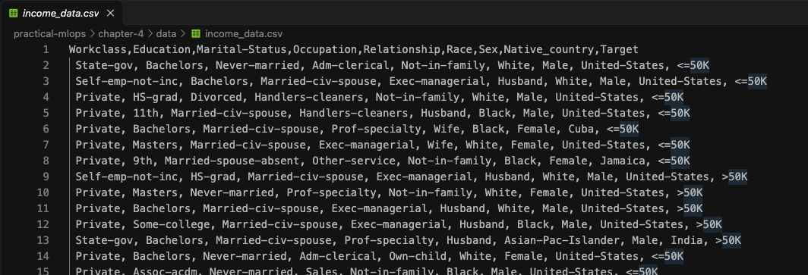
이미지 해설:income_data.csv 를 텍스트로 연 화면입니다. 첫 줄이 헤더(Workclass,Education,…,Target)이고 아래는 쉼표로 나뉜 값입니다. 값 앞에 공백이 붙어 있는 것에 주목하세요(예: State-gov, <=50K). 이 공백이 나중에 Workclass_ State-gov 처럼 공백이 들어간 열 이름을 만드는 원인입니다. 마지막 열이 모델이 맞혀야 할 정답(Target)입니다.
컬럼 설명
| 컬럼 | 의미 | 값 예시(한글) |
|---|---|---|
| Workclass | 고용 형태 | State-gov 주정부, Self-emp-not-inc 개인사업(법인 아님), Private 민간기업 |
| Education | 최종 학력 | Bachelors 학사, HS-grad 고졸, 11th 고등학교 11학년(중퇴) |
| Marital-Status | 혼인 상태 | Never-married 미혼, Married-civ-spouse 기혼(민간인 배우자), Divorced 이혼 |
| Occupation | 직업 | Adm-clerical 사무직, Exec-managerial 경영·관리직, Handlers-cleaners 운반·청소, Prof-specialty 전문직 |
| Relationship | 가구 내 관계 | Not-in-family 가족 아님, Husband 남편, Wife 아내 |
| Race | 인종 | White 백인, Black 흑인 |
| Sex | 성별 | Male 남성, Female 여성 |
| Native_country | 출신 국가 | United-States 미국, Cuba 쿠바 |
| Target | 정답(라벨): 연소득 | <=50K 5만 달러 이하, >50K 5만 달러 초과 |
앞 5개 행의 번역
| 행 | Workclass | Education | 혼인 | Occupation | 관계 | 성별 | 국가 | Target |
|---|---|---|---|---|---|---|---|---|
| 0 | 주정부 | 학사 | 미혼 | 사무직 | 가족 아님 | 남 | 미국 | <=50K |
| 1 | 개인사업 | 학사 | 기혼 | 경영·관리 | 남편 | 남 | 미국 | <=50K |
| 2 | 민간기업 | 고졸 | 이혼 | 운반·청소 | 가족 아님 | 남 | 미국 | <=50K |
| 3 | 민간기업 | 11학년 | 기혼 | 운반·청소 | 남편 | 남 | 미국 | <=50K |
| 4 | 민간기업 | 학사 | 기혼 | 전문직 | 아내 | 여 | 쿠바 | <=50K |
리스팅 4.1: 판다스로 데이터 훑어보기
판다스(Pandas, 표 형태 데이터를 다루는 파이썬 라이브러리)의 head, info, describe 로 기본적인 기술 통계를 봅니다. info 로 약 30,000개(정확히 30,162개)의 행이 있음을, describe 로 열마다 고유한 값의 수와 가장 많이 나온 값(top)과 그 횟수(freq) 를 확인합니다.
df=pd.read_csv('../data/income_data.csv', index_col=False)
print(df.head() ,'\n') # 데이터 프레임의 처음 몇 행을 출력
print(df.info(), '\n') # 데이터 프레임의 요약 정보를 출력
print(df.describe(), '\n') # 데이터 프레임의 기술 통계를 생성
Workclass Education Marital-Status Occupation \
0 State-gov Bachelors Never-married Adm-clerical
1 Self-emp-not-inc Bachelors Married-civ-spouse Exec-managerial
2 Private HS-grad Divorced Handlers-cleaners
3 Private 11th Married-civ-spouse Handlers-cleaners
4 Private Bachelors Married-civ-spouse Prof-specialty
Relationship Race Sex Native_country Target
0 Not-in-family White Male United-States <=50K
1 Husband White Male United-States <=50K
2 Not-in-family White Male United-States <=50K
3 Husband Black Male United-States <=50K
4 Wife Black Female Cuba <=50K
<class 'pandas.core.frame.DataFrame'>
RangeIndex: 30162 entries, 0 to 30161
Data columns (total 9 columns):
# Column Non-Null Count Dtype
--- ------ -------------- -----
0 Workclass 30162 non-null object
1 Education 30162 non-null object
2 Marital-Status 30162 non-null object
3 Occupation 30162 non-null object
4 Relationship 30162 non-null object
5 Race 30162 non-null object
6 Sex 30162 non-null object
7 Native_country 30162 non-null object
8 Target 30162 non-null object
dtypes: object(9)
memory usage: 2.1+ MB
None
Workclass Education Marital-Status Occupation Relationship \
count 30162 30162 30162 30162 30162
unique 7 16 7 14 6
top Private HS-grad Married-civ-spouse Prof-specialty Husband
freq 22286 9840 14065 4038 12463
Race Sex Native_country Target
count 30162 30162 30162 30162 30162
unique 5 2 41 2
top White Male United-States <=50K
freq 25933 20380 27504 22654
출력의
describe오른쪽 블록은 줄 바꿈 때문에 열 정렬이 어긋나 보이지만 값은 그대로입니다.
출력 읽는 법
| 출력 | 의미 |
|---|---|
RangeIndex: 30162 entries |
행이 30,162개 |
Data columns (total 9 columns) |
열 9개 (피처 8개 + Target 1개) |
30162 non-null (전부) |
빈 값(결측)이 하나도 없음 |
Dtype object (전부) |
모두 문자열(범주형)입니다. object 는 판다스가 문자열을 담는 기본 자료형 이름입니다. |
unique 7 / 16 / 7 / 14 / 6 / 5 / 2 / 41 / 2 |
열마다 서로 다른 값의 수 (Workclass 7, Education 16, Marital-Status 7, Occupation 14, Relationship 6, Race 5, Sex 2, Native_country 41, Target 2) |
top / freq |
가장 흔한 값과 횟수. 예: Workclass 는 Private 22,286건, Target 은 <=50K 22,654건 |
클래스 불균형: 정확도만 보면 속는 이유
<=50K 가 22,654건이므로 >50K 는 30,162 − 22,654 = 7,508건이고 비율은 약 24.9% 입니다. 참고로 뒤에서 본문이 target.mean() 으로 확인하는 0.2489 와 같은 값입니다(위 출력에서 계산한 설명입니다).
리스팅 4.2: 범주형 변수 플롯 만들기
이번에는 범주형 변수의 분포를 목표 변수와 비교하는 플롯을 만듭니다. 만든 플롯은 categorical_variable_plots 디렉터리에 저장합니다.
플롯(plot)이란? 데이터를 그림으로 그린 그래프입니다. 숫자 표로는 보이지 않는 패턴을 눈으로 확인할 수 있습니다.
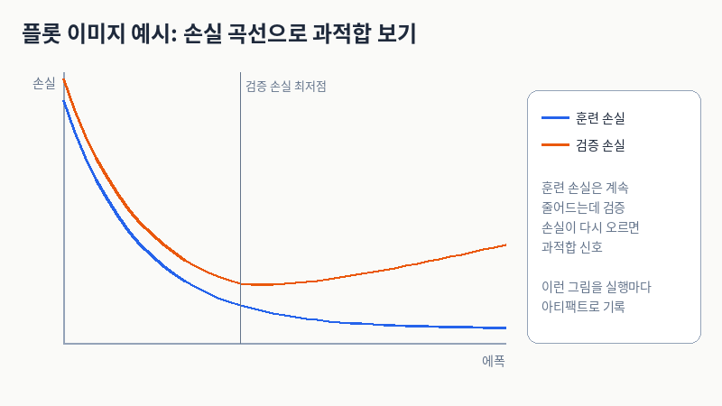
이미지 해설: 이 그림은 이 노트북의 출력이 아니라 "플롯이 왜 필요한가"를 설명하는 일반 예시입니다. 가로축은 학습 횟수(에폭), 세로축은 손실(틀린 정도)입니다. 파란 훈련 손실은 계속 내려가는데, 주황 검증 손실은 어느 지점(세로선, "검증 손실 최저점") 이후 다시 올라갑니다. 훈련 데이터는 더 잘 맞히는데 새 데이터에는 오히려 나빠지는 것이 과적합(overfitting) 신호입니다. 이런 곡선을 숫자로만 보면 알아채기 어렵지만 그림으로 그리면 한눈에 보이고, 오른쪽 안내처럼 실행할 때마다 아티팩트로 기록해 두면 비교할 수 있습니다. 그림의 출처는 캡션이 가리키는 참고 링크(https://ssungz.tistory.com/109)로만 안내합니다.이 코드는 범주형 컬럼 8개를 하나씩 꺼내서 "이 값이 소득 5만 달러 초과 비율과 어떤 관계가 있는가"를 막대그래프로 그려 저장합니다. 이 단계가 EDA(탐색적 데이터 분석) 입니다.
if not os.path.exists("categorical_variable_plots"):
os.makedirs("categorical_variable_plots") # 플롯을 저장할 폴더가 없으면 만듭니다. 폴더가 이미 있으면 건너뜁니다.
# df.iloc[:,:-1]은 마지막 컬럼(Target)을 뺀 나머지 8개 컬럼입니다. 정답은 비교 기준이라 따로 둡니다.
# select_dtypes(include='object')는 문자열(범주형)인 컬럼만 고릅니다. 이 데이터는 모두 문자열이라 8개가 다 선택됩니다.
# .columns로 컬럼 이름 목록을 얻고, i에 Workclass, Education, … 이 차례로 들어갑니다.
for i in df.iloc[:,:-1].select_dtypes(include='object').columns:
print(f'Variable {i} \n ') # (아래줄 포함 설명) 컬럼 이름과 값별 개수를 출력합니다. 예를 들어 Workclass에서 Private이 22,286건이라는 식입니다.
print(df[i].value_counts())
# ggplot(df): 이 데이터프레임으로 그림을 그리겠다고 선언합니다. 이후 +로 층을 쌓습니다.
# geom_bar(aes(x=df[i], fill=df.Target), position='fill')
# x축은 해당 컬럼의 값(예: 학력 종류)입니다.
# fill=df.Target은 막대를 <=50K와 >50K로 색 구분한다는 뜻입니다.
# position='fill'이 핵심입니다. 막대를 건수가 아니라 비율로 만들어서, 모든 막대의 높이가 100%가 되고 색의 비율만 비교합니다.
# 만약, position='fill'을 position='stack'(기본값)으로 바꾸면 비율 대신 건수가 쌓입니다. 비율 비교가 잘 되는지 확인해보자!
# theme_bw()는 흰 배경에 검은 테두리 스타일입니다.
# labs(title=...)는 제목입니다.
# coord_flip()은 x축과 y축을 뒤집어 가로 막대로 만듭니다. Native_country처럼 값이 41개인 컬럼은 이름이 길어서 가로가 읽기 좋습니다.
plot = ggplot(df)+ geom_bar(aes(x=df[i], fill=df.Target), position='fill')+ theme_bw() + labs(title=f'Variable {i} ~ Target')+ coord_flip()
print(plot) # 노트북에 그림을 표시 = 범주형 변수의 분포를 목표 변수와 비교하는 플롯을 생성한다
plot.save(f"categorical_variable_plots/Variable {i}") # 그림을 파일로 저장 = 모든 플롯을 categorical_variable_plots 디렉터리에 저장한다.
가로 막대로 눕히면(
coord_flip) 주석의 "높이 100%"는 "막대 전체 길이가 같아진다"는 뜻으로 읽으면 됩니다.ggplot,geom_bar등은 plotnine 라이브러리(파이썬용 ggplot)의 함수입니다.
코드 한 줄씩 풀기
| 코드 | 하는 일 |
|---|---|
df.iloc[:,:-1] |
모든 행, 마지막 열(Target)을 뺀 열들 |
.select_dtypes(include='object') |
문자열 열만 고름 (여기선 8개 전부) |
df[i].value_counts() |
값별 개수를 센 표 |
aes(x=df[i], fill=df.Target) |
가로축=그 열의 값, 막대 색=Target(<=50K / >50K) |
position='fill' |
건수가 아니라 비율로 막대를 채움 |
coord_flip() |
막대를 가로로 눕힘(값 이름이 길 때 읽기 좋음) |
plot.save(...) |
그림을 파일(PNG)로 저장 |
출력 읽는 법
이 반복문은 변수마다 값별 개수 표를 출력합니다. 예를 들어 Workclass는 Private 22,286건, Self-emp-not-inc 2,499건, Local-gov 2,067건 순으로 나옵니다. 출력 끝에 <ggplot: (640 x 480)>(그림 크기)가 찍히고, 저장할 때 PlotnineWarning: Saving 6.4 x 4.8 in image 라는 경고가 함께 나올 수 있습니다. 이는 "그림을 6.4×4.8 인치로 파일에 저장한다"는 알림일 뿐 오류가 아닙니다.
저장된 그림은 변수 하나에 PNG 하나씩, 모두 8개입니다. 예를 들어 Variable Education 은 학력별로 >50K(청록)의 비율을 비교하는데, Doctorate(박사)와 Prof-school(전문대학원)은 청록이 약 3/4 로 길고, Preschool 은 거의 없으며 초중등 학력은 매우 짧습니다. 이렇게 막대 길이만 비교해도 학력이 높을수록 소득 5만 달러 초과 비율이 높다는 패턴이 한눈에 보입니다.
그림 4.2와 fill vs stack: 근무 형태별 소득 비율 읽기
그림 4.2: 근무 형태별 소득 비율 읽기
본문은 "예를 들어 자영업자는 연 소득이 $50K 를 초과할 가능성이 더 높다"고 설명합니다. 아래 그림이 그 예시(그림 4.2)이고, 한글판과 영문판 두 장이 같은 위치에 실려 있습니다.
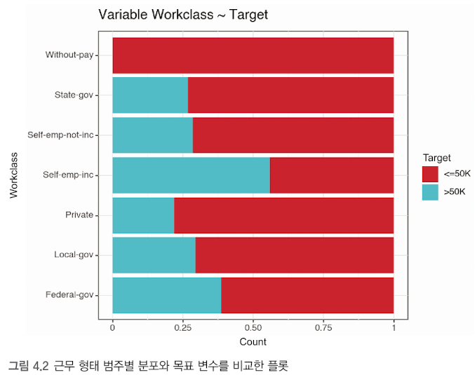
이미지 해설 (한글판): 세로축이 Workclass(고용 형태) 7가지, 가로축이 0~1(비율), 색은 청록=>50K, 빨강=<=50K 입니다. 모든 막대의 전체 길이가 1로 같은 것이 position='fill' 의 효과입니다. 청록이 가장 긴 것은 Self-emp-inc(법인 자영업) 로 대략 절반을 조금 넘고, Federal-gov(연방 공무원) 가 그다음이며, Private(민간기업) 은 약 1/5 로 짧고, Without-pay(무급) 는 청록이 거의 보이지 않습니다. 눈대중 값이므로 정확한 숫자로 인용하지는 마세요.
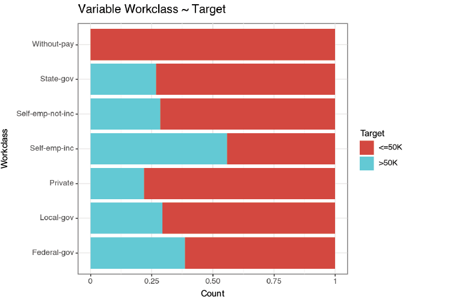
이미지 해설 (영문판): 같은 그림의 영문 원본입니다. 이 파일은 투명 배경 PNG 라서 어두운 화면이나 일부 뷰어에서는 검은 틀 안에 놓인 것처럼 보일 수 있습니다. 이는 파일이 깨진 것이 아니라 렌더링 차이이므로 흰 배경에서 보세요. 내용은 한글판과 같습니다.법인 자영업자(Self-emp-inc)의 고소득 비율이 높다는 것은 이 데이터에서 보이는 경향이지, 직업이 소득을 "결정한다"는 인과 관계는 아닙니다. 또한 Without-pay 는 14건뿐이라 0에 가까운 비율을 그대로 믿기 어렵습니다(아래 설명 참고).
position='fill' 을 position='stack' 으로 바꾸면 비율 비교가 잘 될까?
EDA 에서 position='fill' 을 position='stack'(기본값)으로 바꾸면 비율 대신 건수가 쌓입니다.
결론부터
stack 은 집단 크기가 서로 다를 때 "비율" 비교가 어렵습니다. fill 은 모든 막대를 같은 길이로 맞춰 비율만 보이게 합니다. 두 방식은 서로 다른 질문에 답합니다.
| 방식 | 막대 길이 | 답하는 질문 |
|---|---|---|
fill |
모두 100%로 같음 | "각 집단 안에서 고소득자는 몇 % 인가?" |
stack |
그 집단의 사람 수 | "각 집단에 사람이, 고소득자가 몇 명 있는가?" |
숫자 예시: 10명 집단 A 와 100명 집단 B
아래는 설명용 가상 데이터입니다(실제 Adult 데이터의 통계가 아닙니다).
| 집단 | 전체 | 고소득 | 저소득 | 고소득 비율 |
|---|---|---|---|---|
| A | 10명 | 8명 | 2명 | 8 ÷ 10 = 80% |
| B | 100명 | 50명 | 50명 | 50 ÷ 100 = 50% |
fill로 그리면: A 막대는 80% 가 청록, B 막대는 50% 가 청록. 길이가 같으니 "A 가 B 보다 고소득 비율이 높다"가 바로 보입니다.stack으로 그리면: A 막대는 길이 10 중 청록 8, B 막대는 길이 100 중 청록 50. B 막대가 A 보다 10배 길고 청록 부분도 50 대 8 로 훨씬 깁니다. 눈은 "B 쪽에 고소득이 훨씬 많다"고 느끼지만, 이는 B 에 사람이 많아서이지 B 의 고소득 비율이 높아서가 아닙니다. 실제 비율은 A(80%)가 더 높습니다.
아래 위젯으로 직접 바꿔 보세요.
실제 데이터(Workclass)로 읽기
건수가 Private 22,286 / Self-emp-not-inc 2,499 / Local-gov 2,067 / State-gov 1,279 / Self-emp-inc 1,074 / Federal-gov 943 / Without-pay 14 이므로 stack 으로 그리면 Private 막대가 압도적으로 길고 Without-pay 는 보이지도 않습니다. 그래서 "Self-emp-inc 의 고소득 비율이 가장 높다"는 정보가 사라집니다. 반대로 fill 은 Without-pay 14명의 비율도 다른 집단과 똑같은 길이로 보여 줘서 작은 표본을 과신하게 만들 수 있습니다. 그래서 본문이 value_counts() 로 건수를 함께 출력합니다.
4.1.2 MLflow 추적: 추적 서버와 실험 만들기
MLflow 추적 기능을 쓰면 앞에서 만든 플롯을 추적 서버에 저장할 수 있습니다. 책 본문은 mlflow==2.6.0 을, 책 실습 저장소는 mlflow==3.0.0 을 씁니다. 화면(UI)과 일부 동작이 버전에 따라 다를 수 있으며, 이 문서의 설명은 3.0.0 기준입니다.
추적 서버란
책은 mlflow ui 명령으로 포트 5000 에 로컬 추적 서버를 만든다고 설명하고, 이 명령은 주피터 노트북 밖(터미널) 에서 실행해야 한다고 알려 줍니다. (mlflow ui 는 mlflow server 와 같은 서버를 띄우는 명령의 별칭으로 알려져 있습니다. 공식 문서에서 다시 확인하세요.) 이 책의 구성에서는 기록용 저장소를 별도로 지정해 mlflow server 로 띄운 서버를 사용합니다. 서버를 띄울 때 주는 주요 옵션의 뜻은 다음과 같습니다.
명령어 풀이
| 옵션 | 뜻 |
|---|---|
mlflow server |
추적 서버를 띄웁니다 |
--host 0.0.0.0 |
같은 네트워크의 다른 컴퓨터에서도 접속 가능하도록 모든 네트워크 주소에서 받습니다 |
--port 5000 |
5000 번 포트를 씁니다 |
--backend-store-uri sqlite:///…/mlflow.db |
메타데이터(run ID, 이름, 시간, 지표 등)를 SQLite 파일 DB 에 저장합니다 |
--default-artifact-root s3://mlflow-artifacts/chapter-4 |
새 실험의 아티팩트(파일)를 S3 호환 저장소(MinIO)의 이 위치에 저장합니다 |
실험 이름 정하고 초기화
추적 서버가 떠 있으면 노트북에서 MLflow 를 초기화합니다. 노트북에서 한 번만 하면 됩니다. 추적 서버를 지정하고, 파라미터를 저장할 실험 이름을 정합니다. 실험 이름은 추적하려는 프로젝트 이름이라고 생각하면 됩니다. 여기서는 income-classifier 입니다.
# setting tracking uri and experiment. If experiment name does not exist it will be created
mlflow.set_tracking_uri("http://localhost:5000")
mlflow.set_experiment("income-classifier")
set_tracking_uri 의 주소는 노트북과 MLflow 서버가 같은 컴퓨터에 있을 때 localhost 를 씁니다. localhost 는 "코드를 실행하는 그 컴퓨터 자신"이라는 뜻이므로, 서버가 다른 컴퓨터에 있으면 그 컴퓨터의 주소를 써야 합니다.
같은 이름의 실험이 아직 없으면 set_experiment 가 새 실험을 만듭니다. 이때 실험마다 번호(experiment_id)가 붙는데, 기본 실험 Default 가 0 번이므로 처음 만든 새 실험은 1 번이 됩니다. 실험에는 파일이 저장될 위치(artifact_location)도 함께 정해지며, 이 책의 구성에서는 s3://mlflow-artifacts/chapter-4/1 처럼 서버를 띄울 때 준 --default-artifact-root 아래에 실험 번호 폴더가 생깁니다. 이 시점에는 실험이라는 "폴더"만 생겼고 그 안에 학습 기록(run)은 아직 없습니다.
실험(experiment)과 실행(run)의 차이
| 용어 | 뜻 | 비유 |
|---|---|---|
| 실험 experiment | 프로젝트 이름으로 묶은 폴더 (income-classifier) |
프로젝트 폴더 |
| 실행 run | 머신러닝 실험·훈련 절차의 단일 실행 한 번 | 노트의 한 페이지 |
| 실행 ID run ID | run 마다 붙는 고유 식별자 | 주민번호 같은 식별자 |
각 run 은 지표, 모델 하이퍼파라미터, 아티팩트 같은 핵심 정보를 기록합니다. 모든 run 은 하나의 실험 아래에 기록됩니다.
덧붙이면, 이 장 뒤에서 모델마다 새 run 을 시작하므로
income-classifier실험 하나에 EDA run, 결정 트리 run, 랜덤 포레스트 run, XGBoost run 이 쌓이고 UI 에서 나란히 비교할 수 있습니다.
run·experiment·artifact·parameter·metric의 데이터 모델
한 실행에서 설정과 관측을 구분합니다
실험(experiment)은 관련 실행을 묶고 run은 추적할 시도 한 번을 식별합니다. 여기에 연결되는 parameter는 설정값, metric은 수치 관측값, artifact는 산출물 파일입니다. tag는 검색과 설명을 위한 메모입니다. 이 관계에서 중요한 점은 같은 키가 반복되었을 때 무엇을 의미하는지 구분하는 것입니다.
다음은 가상의 예시입니다. 실험 E1의 run R1은 깊이 4, R2는 깊이 8로 학습합니다. R1의 loss를 step 1·2·3에서 0.8·0.5·0.4로 기록하면 하나의 지표에 세 관측값이 연결됩니다. step은 학습 단계 등을 표시하는 번호입니다. loss가 줄어든 흐름과 서로 다른 run의 최종 loss 비교는 다른 질문이므로, 지표 이름뿐 아니라 시각과 step도 읽어야 합니다.
| 기록 | 반복 기록의 의미 | 설계에서 구분할 것 |
|---|---|---|
| parameter | 같은 run의 동일 키에 다른 값을 쓰는 것은 제한됩니다 | 설정이 다른 시도를 분리합니다 |
| metric | 같은 이름에 여러 시각과 step의 측정값을 남길 수 있습니다 | 단일 요약값과 측정 이력을 구분합니다 |
| tag | 설명과 검색용 메모를 관리합니다 | 메모를 원래 설정의 불변 증거로 대신하지 않습니다 |
| artifact | 파일을 실행과 연결합니다 | 파일의 보관 위치와 내용 보존을 함께 봅니다 |
파라미터는 학습 시작 전에만 기록할 수 있는 값이라는 뜻이 아닙니다. run 진행 중에도 새 키를 기록할 수 있습니다. 제한의 핵심은 이미 기록한 동일 키의 값을 다른 값으로 덮어쓰는 행위입니다. 다른 설정으로 학습한 결과를 새 run에 연결하면 지표가 어떤 조건에서 나왔는지 명확해집니다.
메타데이터의 관계와 파일 경로는 다릅니다
메타데이터는 파일이나 실행을 설명하는 정보입니다. 작은 설정·지표와 큰 모델 파일은 크기와 접근 방식이 달라 저장소를 나누어 관리할 수 있습니다. 가상으로 한 run의 메타데이터가 2KB이고 모델이 80MB라면, 두 종류에 같은 읽기·보관 방식을 적용할 필요는 없습니다. 파일 저장소에는 로컬 파일이나 객체 저장소 등 여러 구성이 가능합니다.
파일을 누가 전송하는지도 구성에 따라 달라집니다. 이 장의 직접 업로드 방식은 아티팩트 프록시를 사용하지 않는 설정의 경로이며, MLflow 서버가 파일 전송을 중계하는 구성도 있습니다. “메타데이터는 서버가 관리한다”와 “모든 파일이 서버를 거친다”는 서로 다른 주장입니다.
실행과 모델의 식별자를 나눕니다
MLflow 3의 logged model은 별도 model_id를 갖는 모델 추적 대상입니다. run_id는 실행을, model_id는 기록한 모델을, Registry의 이름과 version은 등록 모델의 특정 버전을 식별합니다. 모델이 run과 연결되어 있어도 이 식별자들이 같은 역할을 하지는 않습니다. 한 run에서 여러 모델이 생성될 수 있으므로 run 하나를 모델 파일 하나와 일대일로 연결하는 검색 가정은 주의해야 합니다.
모델 외의 그래프나 전처리 파일까지 모두 logged model의 저장 위치로 옮겨지는 것은 아닙니다. 각 산출물의 관계와 실제 저장 경로를 구분합니다. 또한 데이터셋 메타데이터를 기록해도 원본 표 전체가 자동으로 파일 첨부되는 것은 아닙니다. 데이터 용도와 출처를 run에 연결하고 실제 내용은 보존 정책으로 관리해야, 설정·관측·파일의 관계가 유용한 추적 자료가 됩니다.
참고 문서 MLflow Tracking — https://mlflow.org/docs/latest/ml/tracking/
리스팅 4.3: EDA 플롯의 아티팩트 저장
리스팅 4.3은 코드 두 줄로 플롯 저장을 추적합니다. 두 줄은 ① with mlflow.start_run(...) 으로 run 을 시작하는 것, ② mlflow.log_artifacts(...) 로 플롯 폴더를 올리는 것입니다. 앞의 for 루프는 start_run 블록 안에 들어갑니다.
- 리스팅 4.3 은
uuid.uuid4()로 실행 이름을 직접 지정합니다. 이 함수는 run 마다 고유한 이름을 만들어 줍니다. 이름을 주지 않으면 MLflow 가 자체 이름을 만듭니다. - 이름을 따로 붙이는 이유는 EDA 용 run 과 모델 구축용 run 을 구분하기 위해서입니다(
eda-접두사).
아티팩트란
아티팩트(artifact)는 run 이 남기는 파일입니다. 모델 파일, 데이터셋, 플롯 등이 모두 아티팩트가 될 수 있습니다. 리스팅 4.3 에서는 mlflow.log_artifacts 에 플롯이 저장된 디렉터리 이름을 지정해 올립니다. 아티팩트 루트는 s3://mlflow-artifacts/chapter-4 입니다.
MLflow 에 플롯 저장하기
# start_run은 run 하나를 시작합니다. with로 감싸면 블록이 끝날 때 run이 자동으로 종료(FINISHED)됩니다. 블록 안에서 예외가 나면 FAILED로 종료됩니다.
# run_name은 UI의 Run Name 열에 보이는 이름입니다. eda- 뒤에 uuid.uuid4()(무작위 고유 문자열)를 붙여서 실행할 때마다 다른 이름이 됩니다. 책은 EDA run과 모델 학습 run을 구분하려고 eda- 접두사를 썼습니다. 이름을 안 주면 MLflow가 abc-def 같은 이름을 자동 생성합니다.
# run은 앞서 set_experiment("income-classifier")로 지정한 실험 아래에 만들어지고, 이 run 고유의 run ID가 생깁니다.
with mlflow.start_run(run_name=f"eda-{uuid.uuid4()}"): # 고유한 실행 이름을 지정하여 컨텍스트 내에서 MLflow 실행을 관리한다
for i in df.iloc[:,:-1].select_dtypes(include='object').columns:
print(f'Variable {i} \n ')
print(df[i].value_counts())
plot = (
ggplot(df)
+ geom_bar(
aes(x=df[i], fill=df.Target),
position='fill'
)
+ theme_bw()
+ labs(title=f'Variable {i} ~ Target')
+ coord_flip()
)
print(plot)
if not os.path.exists("categorical_variable_plots"):
os.makedirs("categorical_variable_plots")
plot.save(f"categorical_variable_plots/Variable {i}") # Target을 뺀 문자열 컬럼 8개마다 "값별 고소득 비율" 가로 막대 그래프를 만들고 categorical_variable_plots/ 폴더에 저장합니다.
mlflow.log_artifacts( # 이 폴더 안의 모든 파일을 이 run의 아티팩트로 업로드합니다. 아티팩트는 run에 딸린 파일(플롯, 모델, 데이터 등)입니다.
"categorical_variable_plots"
) # mlflow log artiface 를 사용해 플롯 디렉터리를 저장한다.
⚠ 바로잡기: 위 원본은 들여쓰기가 깨져 있어 그대로는 파이썬 문법 오류가 납니다. 주석의mlflow log artiface는log_artifacts의 오타입니다. 아래 정정본은 루프 밖에서 폴더 전체를 한 번 업로드하는 형태입니다. 루프 안에 두면 매 반복마다 폴더를 다시 업로드하며, 중간 예외 전에 생성된 파일도 저장소에 남을 수 있습니다.
정정본 (들여쓰기 정리, 루프 밖에서 한 번 올리는 형태)
with mlflow.start_run(run_name=f"eda-{uuid.uuid4()}"):
if not os.path.exists("categorical_variable_plots"):
os.makedirs("categorical_variable_plots")
for i in df.iloc[:,:-1].select_dtypes(include='object').columns:
print(f'Variable {i} \n ')
print(df[i].value_counts())
plot = (
ggplot(df)
+ geom_bar(aes(x=df[i], fill=df.Target), position='fill')
+ theme_bw()
+ labs(title=f'Variable {i} ~ Target')
+ coord_flip()
)
print(plot)
plot.save(f"categorical_variable_plots/Variable {i}")
mlflow.log_artifacts("categorical_variable_plots") # 폴더 통째로 올린다
메타데이터와 아티팩트의 경로
이 장의 --no-serve-artifacts 구성에서 run ID·이름·시간은 MLflow 서버의 SQLite에 기록되고, 파일은 클라이언트가 MinIO에 직접 업로드합니다. 아티팩트는 s3://mlflow-artifacts/chapter-4 아래 실험과 run에 대응하는 경로에 저장됩니다. 업로드 후에도 로컬 폴더는 남으며, 그 안의 예전 파일도 함께 올라갈 수 있습니다.
sequenceDiagram
participant N as "노트북 커널"
participant S as "MLflow 서버 5000"
participant D as "SQLite DB"
participant M as "MinIO 버킷"
N->>S: "run 생성 요청"
S->>D: "run ID 이름 시간 저장"
N->>M: "log_artifacts 로 PNG 직접 업로드"
Note over N,M: "파일은 서버를 거치지 않고 노트북이 MinIO 에 직접 올린다"기록(메타데이터)은 서버로, 파일은 저장소로 갈라져 가는 것이 이 구성의 핵심입니다. 따라서 클라이언트에는 저장소 접속 자격 증명이 필요합니다. 루프 밖에서 업로드하면 플롯 8개를 만드는 도중 예외가 발생할 때 파일 업로드에 도달하지 못하고 run이 FAILED로 끝납니다. 루프 안에서는 앞 반복에서 업로드한 파일이 남을 수 있으므로, 업로드 위치는 실패 시 보존되는 결과에도 영향을 줍니다.
MLflow UI와 MinIO에서 결과 확인하기
MLflow UI 와 MinIO 에서 결과 확인하기
1) 웹 UI: 실험과 실행(run) 확인
브라우저로 MLflow 웹에 접속하면 사이드바에 실험 2개가 보입니다. 하나는 기본 실험(Default), 하나는 직접 만든 income-classifier 입니다.
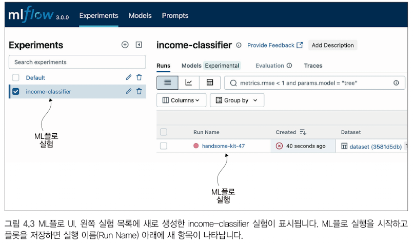
이미지 해설 (책 그림 4.3, 한글판): 왼쪽 Experiments 목록의income-classifier 가 ML플로 실험, 오른쪽 Runs 표의 handsome-kit-47 한 줄이 실행(run) 이라고 화살표로 짚어 줍니다. 실행을 시작하고 플롯을 저장하면 Run Name 아래에 새 항목이 생긴다는 설명입니다. 눈여겨볼 점은 이 책 캡처의 run 상태 아이콘이 빨간 ✕(실패) 로 찍혀 있다는 것입니다. 이 이름 handsome-kit-47 은 run_name 을 주지 않았을 때 MLflow 가 붙이는 자동 이름의 예입니다.
⚠ 책 그림의 상태 안내: 책 캡처의 run 은 실패(✕)로 보이고 이름도 자동 이름입니다. 책 캡처가 어떤 상황에서 찍혔는지는 알 수 없습니다. 이 그림은 "실험과 run 이 UI 에서 어디에 해당하는가"를 보는 용도로만 쓰세요.
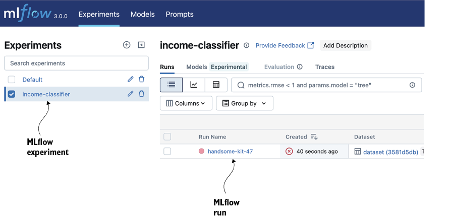
이미지 해설 (영문판): 같은 화면의 영문 원본입니다. 주석이 "MLflow experiment", "MLflow run" 으로 달려 있고, 화살표가 왼쪽의 실험과 오른쪽 표의 run 행을 가리킵니다. 내용은 한글판과 같습니다.2) run 상세 페이지와 Artifacts 탭
실험과 새로 생성된 run 을 선택하면 개별 run 페이지로 이동합니다. 여기에는 실행 설명, 실행에서 생성된 데이터셋, 모델 파라미터, 지표, 아티팩트가 있고, 만든 플롯은 Artifacts 탭에 보입니다(그림 4.4).
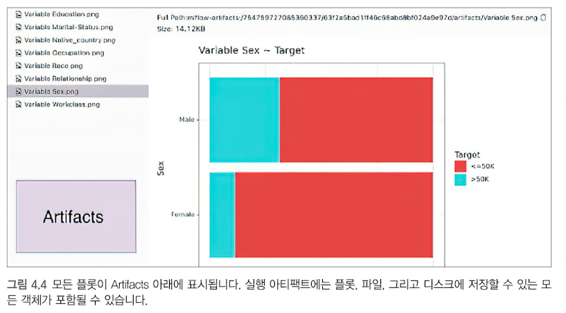
이미지 해설 (책 그림 4.4, 한글판): 왼쪽에Variable …png 8개 파일 목록, 오른쪽에 선택한 Variable Sex.png(남/여 소득 비율 막대)가 미리보기로 나옵니다. 위에는 이 파일의 전체 경로(mlflow-artifacts:/…/Variable Sex.png)와 크기가 보입니다. 캡션처럼 실행 아티팩트에는 플롯, 파일, 그리고 디스크에 저장할 수 있는 모든 객체가 들어갈 수 있습니다. 이 그림의 UI 는 이전 버전 모양입니다.
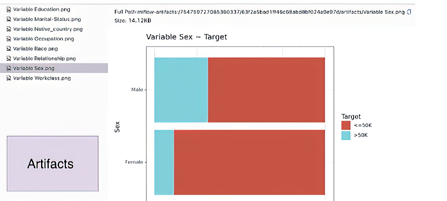
이미지 해설 (영문판): 같은 그림의 영문 원본입니다. 파일 목록 중Variable Sex.png 가 선택되고 성별 소득 분포 막대가 그려져 있습니다.
s3://mlflow-artifacts/chapter-4/1/<run ID>/artifacts/ 는 주소입니다. "mlflow-artifacts 건물 → chapter-4 층 → 1번 실험 방 → 이 run 의 서랍 → artifacts 칸" 순서로 찾아가면 그림 파일이 나옵니다.3) MinIO 에서 실제 파일 확인
UI 에서 보이던 플롯이 실제로 어디 있는가를 MinIO(S3 호환 객체 저장소, 파일을 "버킷"이라는 통에 담아 두는 서비스)에서 확인합니다.
UI 의 Artifacts 탭에서 본 파일은 실제 객체 저장소(MinIO)의 해당 경로에 물리적으로 저장됩니다. 경로 구조는 chapter-4/<실험ID>/<run ID>/artifacts/ 체계로 관리됩니다.
flowchart TB
A["MLflow UI 의 Artifacts 탭"] -->|"실제 파일 위치"| B["MinIO 버킷 mlflow-artifacts"]
B --> C["chapter-4"]
C --> D["실험 ID 1"]
D --> E["run ID"]
E --> F["artifacts: PNG 8개"]리스팅 4.4: 원핫 인코딩과 학습·평가 분할
모델 구축의 다음 단계는 데이터셋을 훈련 세트와 테스트 세트로 분할하는 것입니다. 그 전에 먼저 범주형 변수를 더미 변수(dummy variable) 또는 불리언 지시 변수로 바꿔야 합니다. 모델은 숫자만 다루기 때문입니다.
- 변환에는
pd.get_dummies를 씁니다. - 정답
<=50K와>50K는 원핫 인코딩(one-hot encoding) 으로 각각0과1로 바꿉니다(리스팅 4.4). - 나중에 추론할 때 쓰도록 열 이름(목록)도 저장해 둡니다.
- 마지막으로 sklearn 의
train_test_split으로 데이터를 나눕니다.sklearn은 scikit-learn(사이킷런)의 import 이름입니다. 배포 패키지 이름은scikit-learn이고 코드에서는sklearn으로 씁니다.
train_test_split 이란?
학습용(train) 데이터와 평가용(test) 데이터를 분리해야 모델이 외운 결과와 일반화한 결과를 구분할 수 있습니다. 입력 특성 X와 정답 y를 짝으로 나누며, 출력은 X_train, X_test, y_train, y_test 네 개입니다. train에서는 정확도가 높고 test에서는 낮으면 과적합을 의심합니다.
train_size=0.80은 80%를 학습에 할당합니다. shuffle=True는 기본값이며 분할 전에 행을 섞습니다. 정수 random_state는 분할을 재현 가능하게 만들고, stratify=y는 클래스 비율이 두 세트에 비슷하게 유지되도록 합니다. 이 데이터의 <=50K 비율은 약 75%입니다. test_size=0.2로 평가 비율을 지정할 수도 있습니다. 분할의 재현성과 학습 전체의 재현성은 구분하며, MLflow 실험 비교에는 분할 설정도 기록합니다.
train_size=0.80 입니다.숫자 예시: 30,162 × 0.8 = 24,129.6 이므로 학습 24,129행, 평가 6,033행(합 30,162)으로 나뉩니다. 이 값은 아래 모델 지표를 읽을 때 "기대하는 행 수"의 기준이 됩니다.
코드 (리스팅 4.4)
# Listing 4.4 Converting categorical to dummy via one-hot encoding 범주형변수를 더미변수로 변환하기
정리하면
1. 정답 → 0/1 (>50K가 1)
2. 8개 범주형 특성 → 90개 숫자 컬럼
3. 컬럼 목록 저장 (추론용)
4. 학습/평가 분리
# df는 셀 4에서 만들었습니다. 이곳 셀에서는 메모리의 df(CSV에서 로드됨)를 사용합니다.
df=pd.read_csv('../data/income_data.csv', index_col=False)
target=df.Target
feature_df=df.drop('Target', axis=1)
# 정답 열(Target)을 따로 빼고, 나머지 8개 컬럼을 입력 특성 feature_df로 둡니다.
encoder = OneHotEncoder(
sparse_output=False,
drop="if_binary"
) # 예측 변수와 목표 변수를 코드화한다.
target=encoder.fit_transform(np.array(target).reshape(-1,1))
# 정답(<=50K, >50K)을 0/1로 바꿉니다. 사이킷런은 2차원 입력을 요구해서 reshape(-1,1)로 (30162행 × 1열) 모양을 만듭니다.
# drop="if_binary"는 값이 2개인 컬럼은 열 하나만 남긴다는 뜻입니다. 결과는 (30162, 1) 크기의 배열입니다.
# 인코딩 방향도 확인했습니다. categories_는 [' <=50K', ' >50K'] 순서이고 첫 번째가 drop되므로 0 = <=50K, 1 = >50K 입니다. 평균이 0.2489, 즉 >50K가 약 24.9%입니다. 앞에서 "정렬 순서에서 추정"이라고 말씀드린 부분이 이번에 확인됐습니다.
# sparse_output=False는 희소 행렬이 아니라 일반 배열로 달라는 옵션입니다. 이 옵션 이름은 사이킷런 1.2 이상용입니다(서버는 1.9.1).
dummyfied_df = pd.get_dummies(
feature_df,
drop_first=True,
sparse=False,
dtype=float
) # 범주형 변수를 더미 변수로 변환한다.
# 문자열 범주형 변수를 더미(원-핫) 변수로 바꿉니다. 모델은 숫자만 다루기 때문입니다. 예를 들어 Sex는 Sex_ Male 하나의 0/1 컬럼이 됩니다. 값이 여러 개인 Education(16개)은 Education_ Bachelors, Education_ HS-grad … 처럼 값마다 0/1 컬럼이 생깁니다.
# drop_first=True는 각 변수의 첫 번째 값을 뺍니다. 나머지가 모두 0이면 그 값이라는 것을 알 수 있어서 정보가 중복되기 때문입니다(선형 모델에서 다중공선성을 피하는 용도). 실제로 0번 행(Adm-clerical)은 Occupation_ 컬럼이 하나도 1이 아닙니다. Adm-clerical이 뺀 기준 값이라서입니다.
# 결과 크기는 (30162, 90)입니다. 8개 컬럼의 고유 값 합이 98개이고, 8개를 빼서 90입니다. 즉 책이 말한 "특성 90개"입니다.
# dtype=float은 0.0/1.0 실수로 만듭니다. pandas 기본값은 True/False라서, XGBoost 등이 숫자로 받아들이게 하려고 지정한 것입니다. sparse=False는 일반 데이터프레임으로 받는다는 뜻입니다.
# 컬럼 이름에 공백이 들어 있습니다(Workclass_ State-gov). 원본 CSV 값 앞에 공백이 있기 때문입니다(' State-gov', ' <=50K'). 동작에는 문제없지만 컬럼을 이름으로 찾을 때 공백을 맞춰야 합니다.
col_list = dummyfied_df.columns.to_list()
with open('column_list.pkl', 'wb') as f:
pickle.dump(col_list, f) # 이후 추론에 사용할 열 목록과 순서를 저장한다.
# 더미 변환 후 컬럼 이름과 순서를 column_list.pkl로 저장합니다. 나중에 새 데이터로 추론할 때 같은 90개 컬럼을 같은 순서로 만들어야 모델이 올바르게 읽기 때문입니다. 새 입력에 없는 값은 0으로 채우고, 모르는 값은 버리는 식으로 이 목록에 맞춥니다.
X_train, X_test, y_train, y_test = train_test_split(
dummyfied_df, # X: 더미 변수로 바꾼 특성 (90컬럼)
target, # y: 0/1로 인코딩한 소득
train_size=0.80, # 80%는 학습, 나머지 20%는 평가
shuffle=True # 나누기 전에 행을 섞는다
)
# 앞서 설명한 대로 80:20으로 나눕니다. y는 (n,1) 배열이라 학습할 때 .ravel()로 1차원으로 펴서 씁니다(리스팅 4.5의 y_train.ravel()).
# 실습 제안 : 노트북 사본에서 아래 세 줄을 추가로 실행해 보세요(원본은 건드리지 않는 것을 권합니다).
print(dummyfied_df.shape, target.mean()) # (30162, 90), 약 0.249
print(dummyfied_df.columns[:5].to_list()) # 공백이 포함된 컬럼 이름 확인
print(dummyfied_df.iloc[0][dummyfied_df.iloc[0] != 0].index.to_list()) # 0번 행에서 1인 컬럼
0번 행에서 Occupation_ 컬럼이 하나도 안 나오는 것을 보면 drop_first의 의미가 분명해집니다.
⚠ 바로잡기: 리스팅 블록에는 코드 외 설명 문장이 섞여 있어 전체를 그대로 실행할 수 없습니다. 아래 해설은 정답 인코딩·특성 변환·열 목록 저장·분할이라는 네 단계의 의미를 설명합니다. sparse_output는 scikit-learn 1.2 이상에서 쓰는 옵션 이름입니다.
코드가 하는 일 (4단계)
| 단계 | 코드 | 결과 |
|---|---|---|
| 1. 정답을 0/1 로 | OneHotEncoder(sparse_output=False, drop="if_binary") |
<=50K=0, >50K=1, 모양 (30162, 1), 평균 0.2489 |
| 2. 특성을 숫자 열로 | pd.get_dummies(feature_df, drop_first=True, dtype=float) |
문자열 8열 → 숫자 90열 |
| 3. 열 목록 저장 | pickle.dump(col_list, f) |
column_list.pkl. 추론 때 같은 90열을 같은 순서로 만들기 위함 |
| 4. 분할 | train_test_split(..., train_size=0.80, shuffle=True) |
학습 약 24,129 / 평가 약 6,033 |
90 은 어디서 나왔나: 고유 값 수는 Workclass 7 + Education 16 + Marital-Status 7 + Occupation 14 + Relationship 6 + Race 5 + Sex 2 + Native_country 41 = 98. 변수마다 첫 값을 하나씩 빼므로 8개를 빼면 98 − 8 = 90.
용어: pickle(파이썬 객체를 파일로 저장하는 형식, .pkl), DataFrame(판다스의 표 자료형), object(문자열 열의 자료형 이름).
⚠ 바로잡기:encoder.categories_가[' <=50K', ' >50K']순서이고 첫 범주가 제거되므로 0 = <=50K, 1 = >50K입니다. 추론의reindex(columns=col_list, fill_value=0)는 학습 열 순서와 크기를 맞추지만, 학습에 없던 범주를 복원하지는 못합니다. 기준 범주와 미지 범주가 모두 0으로 표현될 수 있다는 한계가 있습니다.
원핫 인코딩 애니메이션
원핫 인코딩 애니메이션: 직업 하나가 칸 하나로
앞에서 pd.get_dummies(feature_df, drop_first=True, dtype=float) 로 문자열 8열이 숫자 90열이 된다고 했습니다. 직업(Occupation, 값 14가지) 열 하나만 가지고 무슨 일이 일어나는지 직접 눌러서 확인해 보세요.
- 아래 목록에서 직업을 고르면, 그 직업의 칸만 1이 되고 나머지는 0입니다.
- "drop_first 적용" 체크가 켜져 있으면 기준 직업(
Adm-clerical)의 칸이 사라집니다. 기준 직업을 고르면 보이는 칸이 전부 0이 됩니다. 본문에서 0번 행(Adm-clerical)에Occupation_로 시작하는 1이 하나도 나오지 않은 이유가 이것입니다. - 체크를 끄면 14칸이 모두 보이고, 직업을 고를 때마다 정확히 한 칸이 1 입니다(이것이 원래의 원핫 인코딩).
이 위젯이 보여 주는 것
| 상황 | 보이는 칸 | 값 |
|---|---|---|
| 직업 = Prof-specialty, drop_first 켬 | 13칸 | Occupation_ Prof-specialty 만 1 |
| 직업 = Adm-clerical, drop_first 켬 | 13칸 | 전부 0 (기준값) |
| 직업 = Adm-clerical, drop_first 끔 | 14칸 | Occupation_ Adm-clerical 만 1 |
drop_first=True 입니다. 본문에서는 선형 모델의 다중공선성(칸들이 서로를 설명해 버려서 계산이 불안정해지는 문제)을 피하는 용도라고 설명합니다.열이 98개에서 90개가 되는 과정
flowchart LR
A["문자열 8열 Workclass Education 등"] --> B["get_dummies 값마다 0 또는 1 칸"]
B --> C["98열 고유 값을 모두 더한 수"]
C --> D["drop_first 변수마다 첫 값 칸 제거"]
D --> E["90열 98 빼기 8"]
E --> F["column_list.pkl 로 열 이름과 순서 저장"]열 이름에 공백이 들어 있는 이유(원본 CSV 의 값 앞 공백)와
column_list.pkl의 역할은 앞의 리스팅 4.4 해설을 참고하세요. 나중에 새 데이터를 추론할 때 같은 90열을 같은 순서로 맞춰야 모델이 올바르게 읽습니다.
MinIO 버킷과 세 가지 모델, AUC
데이터셋을 외부 저장소(MinIO)에 두는 이유와 mlflow-datasets 버킷
학습과 검증에 사용하는 데이터셋은 외부 저장소에 분리 저장해야 합니다. 이 저장소를 MLflow 가 추적하면, 나중에 재현성 확보나 디버깅이 필요할 때 모델 학습에 쓰인 데이터셋을 언제든 다시 불러올 수 있습니다.
- 데이터셋은 MinIO 버킷에 저장합니다. Google Cloud Storage(GCS)나 Amazon S3 같은 다른 객체 스토어(object store, 파일을 폴더 계층이 아니라 "이름표 붙은 객체"로 보관하는 저장소)를 사용할 수도 있습니다.
- 여기서 쓰는 MinIO 인스턴스는 Kubeflow Pipelines 에서 사용하는 것과 동일한 원리로 동작합니다.
- 객체 저장소에 파일을 담을 최상위 공간으로
mlflow-datasets버킷을 사용합니다. (버킷 bucket: 객체 저장소에서 파일을 담는 최상위 통. 폴더와 비슷하지만 이름이 서버 전체에서 유일합니다.)
이제 모델 세 개를 만든다: 결정 트리, 랜덤 포레스트, XGBoost
객체 스토리지 설정과 훈련/테스트 데이터셋 생성을 마친 뒤, MLflow 추적을 켠 상태 로 모델을 학습합니다. 모델 파라미터, 데이터셋, 지표를 모두 기록합니다. 구축할 모델은 세 가지입니다: 단순 의사결정 트리(decision tree), 랜덤 포레스트(random forest), XGBoost.
세 모델 한 줄 비교
한 줄 비교 : 세 모델 모두 이 실습에서는 같은 일(소득 >50K 여부 예측)을 합니다.
- 결정 트리: 질문을 계속 던져서 답을 찾는 스무고개 나무 한 그루
- 랜덤 포레스트: 조금씩 다른 나무를 많이 만들어서 다수결로 정하는 숲
- XGBoost: 나무를 차례로 만들면서 앞 나무의 실수를 고쳐 가는 방식
| 모델 | 비유 | 장점 | 단점 / 주의 |
|---|---|---|---|
| 결정 트리 | 스무고개 한 판 | 사람이 읽고 이해하기 쉬움 | 깊이 제한이 없으면 학습 데이터를 거의 외우듯 쪼개 과적합하기 쉬움 |
| 랜덤 포레스트 | 전문가 100명이 따로 풀고 다수결 | 나무마다 실수가 달라 평균 내면 상쇄되어 단일 트리보다 안정적 | 책 코드는 기본 설정(나무 100그루) 사용 |
| XGBoost | 앞 사람이 틀린 문제만 모아 다음 사람이 푸는 오답노트 릴레이 | 보통 정확도가 높고 표 형태 데이터에서 많이 쓰임 | 설정할 값이 많음 |
1. 결정 트리 (Decision Tree)
직업이 관리직인가?
├ 예 → 결혼했는가? → …→ 고소득
└ 아니오 → 학력이 학사 이상인가? → …→ 저소득
- 데이터를 가장 잘 나누는 질문(예:
Marital-Status_ Married-civ-spouse가 1 인가?)을 골라 계속 쪼갭니다. 끝 가지(잎)에 도착하면 그쪽 다수 클래스를 답으로 냅니다. - 책 코드:
DecisionTreeClassifier()를 기본 설정으로 사용합니다. (위 순서도는 개념을 보여 주는 예시이고 실제 학습된 트리의 질문은 아닙니다.)
2. 랜덤 포레스트 (Random Forest)
- 학습 데이터를 무작위로 여러 번 뽑고(행도, 특성도 일부만), 각각으로 결정 트리를 만든 뒤 투표로 최종 답을 냅니다. 100명이 따로 풀고 다수결로 정하는 것과 같습니다.
- 책 코드: 기본 설정(나무 100그루, 이전 실습에서
n_estimators100 으로 확인)을 사용합니다.
3. XGBoost
- 부스팅(boosting) 계열입니다. 작은 나무 하나를 만들고, 그 나무가 틀린 부분에 집중해서 다음 나무를 만들고, 이를 반복해 합칩니다.
- 랜덤 포레스트가 "나무를 나란히 만들어 투표"라면, XGBoost 는 "나무를 이어서 만들어 보정"입니다.
- 책 코드의 주요 설정:
| 설정 | 의미 |
|---|---|
objective: binary:logistic |
이진 분류, 결과는 >50K 일 확률 |
learning_rate: 1 |
각 나무를 얼마나 반영할지 (1 이면 그대로, 보통은 더 작게 씀) |
max_depth: 10 |
나무 깊이 제한 |
n_round = 30 |
나무 30개. 이 실습에서는 부스팅 라운드 = 나무 한 그루 |
- 뒤에서
binary:hinge로 한 번 더 학습합니다. 이 방식은 확률이 아니라 0/1 클래스를 바로 출력합니다.
flowchart LR
subgraph T["결정 트리"]
A1["나무 1그루"]
end
subgraph R["랜덤 포레스트 병렬"]
B1["나무 1"] --> V["다수결"]
B2["나무 2"] --> V
B3["나무 100"] --> V
end
subgraph X["XGBoost 순차"]
C1["나무 1"] --> C2["나무 2 가 실수 보정"] --> C3["나무 30"]
end실습 결과와 연결 (예시 실행 결과)
분할에 따라 실행 수치는 달라질 수 있습니다.
| 모델 | roc_auc_score_test | test_accuracy |
|---|---|---|
| DecisionTree | 0.8244 | 0.8162 |
| RandomForest | 0.8600 | 0.8185 |
| XGBoost(binary:hinge) | 0.7266 | 0.8167 |
- 랜덤 포레스트가 AUC 에서 가장 높습니다. 단일 트리보다 안정적이라는 설명과 맞습니다.
- 세 모델의 정확도는 0.82 안팎으로 비슷합니다. 이 데이터는
>50K가 약 25% 라서 전부<=50K라고만 찍어도 약 75% 맞출 수 있으므로, 정확도만 보지 않고 AUC 도 봅니다.
⚠ 바로잡기: 본문은 "XGBoost 의 AUC 가 낮은 것은 binary:hinge 의 0/1 출력을 썼기 때문일 가능성이 크고, 곡선이 거의 한 점으로 줄어든다"고 설명합니다. 정확히는 이렇습니다. 0/1 출력에는 기준값(threshold)이 사실상 하나뿐이라 ROC 곡선이 (0,0) → 한 점 → (1,1) 세 점을 잇는 선이 되고, 이때 AUC 는 (민감도 + 특이도) ÷ 2, 즉 균형 정확도 수준이 됩니다. 점수가 같은 쌍(동점)은 반 점으로 셉니다. AUC 가 낮은 것은 순위 정보가 줄었기 때문이지, 낮을 수밖에 없는 필연이나 계산이 불가능하다는 뜻이 아닙니다. 원 노트도 이 설명을 노트북에서 직접 검증하지는 않았다고 적고 있습니다.
AUC 쉽게 이해하기
AUC 는 Area Under the Curve(곡선 아래 면적)의 약자이고, 여기서는 ROC 곡선의 아래 면적(ROC AUC) 입니다. 코드의 roc_auc_score 가 계산하며, 모델이 정답을 얼마나 잘 구분하는지를 0~1 점수로 나타냅니다.
쉬운 의미: 고소득자 한 명과 저소득자 한 명을 무작위로 뽑았을 때, 모델이 고소득자에게 더 높은 확률을 줄 가능성입니다.
- 랜덤 포레스트 AUC 가 0.86 이면, 이런 쌍의 약 86% 에서 모델이 순서를 맞게 매긴다는 뜻입니다.
- 1.0 은 완벽한 구분, 0.5 는 동전 던지기 수준(찍기), 0.5 미만은 거꾸로 맞히는 것입니다.
ROC 곡선은 무엇인가
모델은 보통 "고소득일 확률"(예: 0.73)을 냅니다. 이 확률을 몇 이상일 때 고소득이라 부를지(기준값, threshold)에 따라 결과가 달라집니다.
- 기준을 낮추면: 고소득자를 더 많이 잡지만(진짜 양성 비율 TPR ↑), 저소득자를 고소득이라고 잘못 부르는 일도 늘어납니다(가짜 양성 비율 FPR ↑).
- 기준을 높이면 그 반대입니다.
기준값을 0 에서 1 까지 바꿔 가며 (FPR, TPR) 점을 찍어 이은 것이 ROC 곡선이고, 곡선 아래 면적이 AUC 입니다. 곡선이 왼쪽 위 모서리에 가까울수록 면적이 1 에 가까워집니다.
왜 정확도 말고 AUC 를 보나
- 이 데이터는
>50K가 약 25% 라서, 전부<=50K라고만 해도 정확도가 약 75% 입니다. 정확도는 클래스가 치우치면 좋아 보이기 쉽습니다. - AUC 는 기준값 하나에 의존하지 않고, 확률을 얼마나 잘 순서 매기는지를 봅니다. 그래서 불균형 데이터에서 더 믿을 만한 비교 지표입니다.
- 책에서 세 모델의 정확도는 0.82 안팎으로 비슷했지만 AUC 는 달랐습니다(랜덤 포레스트 0.86, 결정 트리 0.82, XGBoost hinge 0.73).
roc_auc_score_test = roc_auc_score(y_test == 1, tree.predict_proba(X_test)[:, 1])
predict_proba(X_test)[:, 1]은 ">50K일 확률" 열입니다. 확률을 AUC 에 넣어야 의미가 있습니다.- XGBoost 의
binary:hinge는 확률이 아니라 0/1 을 바로 냅니다. 이 0/1 을roc_auc_score에 넣으면 위 정정 박스처럼 기준값이 하나뿐이라 AUC 가 균형 정확도 수준이 됩니다.
한 가지 주의: AUC 가 높다고 해서 어떤 기준값에서든 정확도가 좋다는 뜻은 아닙니다. 실제 서비스에서는 AUC 로 모델을 고른 뒤, 비즈니스 요구에 맞는 기준값을 따로 정해야 합니다.
위젯: 0/1 출력의 ROC 는 세 점뿐
슬라이더로 한 점의 위치(FPR, TPR)를 움직여 보세요. 0/1 출력일 때 ROC 는 (0,0) → 이 점 → (1,1) 이고, AUC = (1 + TPR − FPR) ÷ 2 입니다. 확률 출력이면 점이 많아 곡선이 더 풍부해집니다.
실습 제안: 직접 계산해 보기
from sklearn.metrics import roc_auc_score
y = [0, 0, 1, 1]
score = [0.1, 0.4, 0.35, 0.8]
print(roc_auc_score(y, score)) # 0.75
풀이: 양성 2명 × 음성 2명 = 4쌍 중 3쌍에서 양성이 더 높은 점수를 받아 0.75 입니다. 0.35점 양성이 0.4점 음성보다 낮게 매겨진 쌍이 틀린 쌍입니다. (양성 점수 0.35, 0.8 / 음성 점수 0.1, 0.4 → (0.35>0.1 O), (0.35>0.4 X), (0.8>0.1 O), (0.8>0.4 O))
리스팅 4.5 시작: 데이터셋 3종을 MinIO 에 저장하고 MLflow 에 기록하기
모델을 학습하기 전에 훈련, 테스트, 참조(reference) 데이터셋을 MinIO 에 저장하고, 그 경로를 MLflow 에 기록합니다.
- 참조 데이터셋은 학습과 테스트에 쓰인 모든 사용자를 포함한 전체 특성 데이터(정답 제외)입니다.
mlflow.data.from_pandas로 판다스 DataFrame 을 MLflow 데이터셋 객체로 바꿔야 합니다. 이 메서드에는 두 가지가 필요합니다: 판다스 DataFrame 과 그 데이터가 있는 외부 경로(source).- 이렇게 만든 MLflow 데이터셋은
mlflow.log_input으로 기록합니다. MLflow 는 DataFrame 의 메타데이터, 즉 열 정보(이름과 타입) 와 행 수를 기록합니다(데이터 본체는 MinIO 에 있습니다). - 그다음 모델을 학습하고 모델 정확도와 AUC 지표를 구합니다. 지표는 이름을 지정해
mlflow.log_metric으로, 모델은mlflow.sklearn.log_model, 파라미터는mlflow.log_params로 기록합니다. - MLflow 는 scikit-learn, XGBoost, TensorFlow, PyTorch 등 다양한 모델링 라이브러리를 지원하며 모델을 쉽게 저장하고 불러올 수 있습니다.
| 함수 | 기록하는 것 | 비유 |
|---|---|---|
mlflow.data.from_pandas(df, source=…) |
DataFrame 을 "출처가 붙은 데이터셋 객체"로 변환 | 영수증 양식 만들기 |
mlflow.log_input(ds, context=…) |
이 run 이 쓴 데이터의 열 이름·타입·행 수 | 영수증을 노트에 붙이기 |
mlflow.log_metric(이름, 값) |
숫자 지표 하나 | 점수표 한 칸 |
mlflow.sklearn.log_model(모델, 경로) |
학습된 모델 파일 | 결과물 사진 |
mlflow.log_params(dict) |
하이퍼파라미터 묶음 | 오븐 온도·시간 기록 |
이 코드를 실행하면 MLflow run 이 만들어지고 데이터셋이 MinIO 에 저장됩니다. 만들어진 run 을 열면 기록된 정보를 탭에서 볼 수 있습니다(그림 4.5).
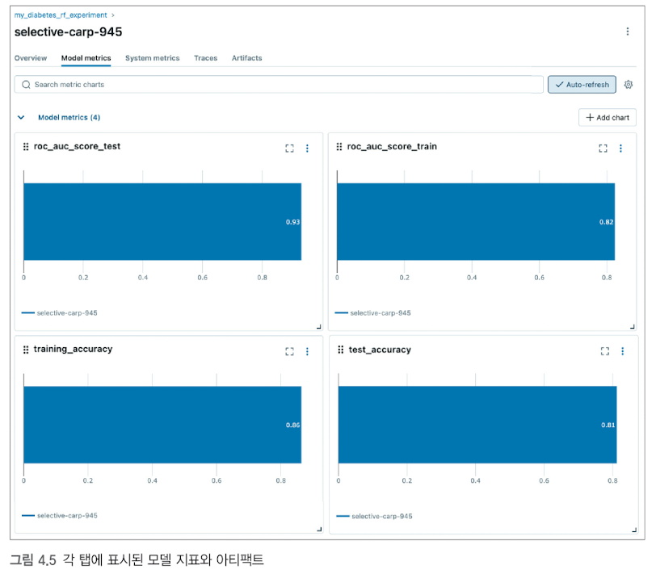
이미지 해설 (책 그림 4.5): runselective-carp-945 의 Model metrics 탭에 지표 4개 차트가 가로 막대로 있습니다: roc_auc_score_test 0.93, roc_auc_score_train 0.82, training_accuracy 0.86, test_accuracy 0.81. 상단 탭은 Overview, Model metrics, System metrics, Traces, Artifacts 입니다. 위쪽 경로에 실험 이름이 my_diabetes_rf_experiment 로 보입니다.
⚠ 책 그림과 실습 화면이 다를 수 있음: 이 캡처의 실험 이름은 이 장에서 만든income-classifier가 아니라my_diabetes_rf_experiment이고, test AUC(0.93)가 train AUC(0.82)보다 높습니다. 보통은 학습 데이터에서 점수가 더 높기 때문에, 이 그림의 숫자를 이 장의 소득 데이터 결과로 읽으면 안 됩니다. 어느 예제에서 가져온 캡처인지는 알 수 없습니다. 이 그림은 "run 의 Model metrics 탭이 이렇게 생겼다"를 보는 용도로만 쓰세요.
리스팅 4.5 코드의 앞부분
아래는 결정 트리 run 의 앞부분(준비와 feature_df 저장)입니다. 코드는 이어서 훈련/테스트 CSV 저장, from_pandas, log_input, 학습, 지표 기록으로 계속되며, 나머지는 바로 다음 부분에서 이어서 다룹니다.
# Listing 4.5 Training a model with MLflow logging
# Training with MLflow : Decision Tree Classifier
BUCKET_NAME = "mlflow-datasets"
with mlflow.start_run() as run:
results = pd.DataFrame(
index=[
'Roc Auc Score test',
'Accuracy score train',
'Accuracy Score test',
'time to fit'
]
)
tree = DecisionTreeClassifier()
run_id = run.info.run_id
feature_df_path = f"income-classifier-datasets/feature_df-{run_id}.csv"
save_df_to_minio(feature_df, BUCKET_NAME, feature_df_path)
BUCKET_NAME = "mlflow-datasets": 데이터셋 CSV 를 담는 MinIO 버킷 이름입니다.with mlflow.start_run() as run: 이번에는run_name을 주지 않으므로 MLflow 가 자동 이름(예:selective-carp-945같은 형태)을 붙입니다.results = pd.DataFrame(index=[…])는 이후에 쓰이지 않는, 책에서 남은 코드입니다.run_id = run.info.run_id: 파일 이름에 넣어 "어느 run 의 데이터인가"를 구분하려는 용도입니다. 그래서 CSV 이름이feature_df-<run_id>.csv가 됩니다.save_df_to_minio는 이 셀에 정의가 없고 앞쪽 셀에서 만든 도우미 함수입니다(MinIO 에 접속해 DataFrame 을 CSV 로 올리는 함수).
⚠ 바로잡기: 원문 코드 블록은 웹에서 옮기는 과정에서 들여쓰기가 깨져 있습니다(예:results = pd.DataFrame(줄과 그 아래 줄의 들여쓰기가 맞지 않음). 노트북의 실제 코드를 그대로 쓰세요. 이어지는 부분에는train_df를 만드는pd.concat줄이 있는데, 그 줄의 인덱스 정렬 문제와 정정본은 다음 부분에서 자세히 다룹니다.
이 절의 핵심 흐름 요약
flowchart LR
A["CSV 읽기"] --> B["원핫 인코딩 90열"]
B --> C["train_test_split 80 대 20"]
C --> D["MinIO 에 CSV 저장"]
D --> E["from_pandas 와 log_input 으로 출처 기록"]
C --> F["모델 학습 3종"]
F --> G["log_metric log_model log_params"]
E --> H["MLflow UI 의 같은 run 화면"]
G --> H정리: 이 구간에서 기억할 것
- MLflow 는 실험(프로젝트 폴더) 안에 run(학습 한 번) 을 쌓고, run 에 파라미터·지표·아티팩트·데이터셋 출처를 모읍니다.
- 메타데이터는 서버의 SQLite DB 에, 파일은 MinIO 에 갑니다.
log_artifacts는 노트북이 MinIO 에 직접 올리므로 접속 환경변수가 필요합니다. - 범주형 변수는
get_dummies로 숫자 열(90개)로 바꾸고, 열 목록은column_list.pkl로 저장해 추론 때 같은 순서로 맞춥니다. - 분할에
random_state를 안 주면 실행마다 지표가 조금씩 달라집니다. 비교하려면 고정하세요. - 클래스 불균형 데이터에서는 정확도만 보면 속기 쉬우니 AUC 를 함께 봅니다.
- 책 그림과 실습 화면이 다른 곳(그림 4.3 의 실패 아이콘, 그림 4.5 의 실험 이름·지표)은 개념 확인용으로만 쓰세요.
결정 트리 학습과 MLflow 기록 (리스팅 4.5)
앞 단계에서 X_train, X_test, y_train, y_test(원-핫 인코딩과 80:20 분할을 마친 데이터)와 feature_df(정답 열을 뺀 전체 특성표)를 만들어 두었습니다. 이제 세 모델 중 첫째인 결정 트리를 학습하면서, 학습에 쓴 데이터 · 성능 지표 · 모델 · 설정값을 모두 MLflow 에 남깁니다.
이 셀이 하는 일의 흐름
flowchart TD A["start_run 으로 run 열기"] --> B["run_id 꺼내기"] B --> C["feature_df, train_df, test_df 를 CSV 로 MinIO 에 저장"] C --> D["from_pandas 로 MLflow 데이터셋 객체 만들기"] D --> E["log_input 으로 training, testing, reference 기록"] E --> F["tree.fit 으로 학습"] F --> G["AUC 2개와 정확도 2개 계산"] G --> H["log_metric 4번 호출"] H --> I["log_model 과 log_params 호출"]
코드 전문 (리스팅 4.5, 결정 트리)
본문 코드는 웹에서 옮기는 과정에서 들여쓰기가 깨져 있었습니다(
save_df_to_minio(줄,mlflow.log_metric(줄 등). 아래는 내용은 그대로 두고 들여쓰기만 바로잡은 것입니다.
# Listing 4.5 Training a model with MLflow logging
# Training with MLflow : Decision Tree Classifier
BUCKET_NAME = "mlflow-datasets"
with mlflow.start_run() as run:
results = pd.DataFrame(
index=[
'Roc Auc Score test',
'Accuracy score train',
'Accuracy Score test',
'time to fit'
]
)
tree = DecisionTreeClassifier()
run_id = run.info.run_id
feature_df_path = f"income-classifier-datasets/feature_df-{run_id}.csv"
save_df_to_minio(feature_df, BUCKET_NAME, feature_df_path)
train_df = pd.concat([X_train, pd.Series(y_train.ravel())], axis=1)
train_df_path = f"income-classifier-datasets/train-{run_id}.csv"
save_df_to_minio(
train_df,
BUCKET_NAME,
train_df_path
) # 훈련 및 테스트 데이터 프레임을 MinIO에 저장한다
test_df = pd.concat([X_test, pd.Series(y_test.ravel())], axis=1)
test_df_path = f"income-classifier-datasets/test-{run_id}.csv"
save_df_to_minio(test_df, BUCKET_NAME, test_df_path)
training_dataset = mlflow.data.from_pandas( # 판다스 데이터프레임을 MLflow 데이터프레임으로 변환한다.
train_df, source=f"{BUCKET_NAME}/{train_df_path}"
)
test_dataset = mlflow.data.from_pandas(
test_df, source=f"{BUCKET_NAME}/{test_df_path}"
)
feature_dataset = mlflow.data.from_pandas(
feature_df, source=f"{BUCKET_NAME}/{feature_df_path}"
)
mlflow.log_input(
training_dataset,
context="training"
) # MLflow 데이터 프레임을 MLflow 에 기록한다.
mlflow.log_input(test_dataset, context="testing")
mlflow.log_input(feature_dataset, context="reference")
tree.fit(X_train, y_train.ravel()) # 모델을 훈련한다.
roc_auc_score_train = roc_auc_score( # 모델 성능 지표를 생성한다.
y_train == 1, tree.predict_proba(X_train)[:, 1]
)
roc_auc_score_test = roc_auc_score(
y_test == 1, tree.predict_proba(X_test)[:, 1]
)
training_accuracy = tree.score(X_train, y_train)
test_accuracy = tree.score(X_test, y_test)
mlflow.log_metric(
"roc_auc_score_train",
roc_auc_score_train
) # 성능 지표를 MLflow에 기록한다.
print(f"Roc Auc Score train: {roc_auc_score_train}\n")
mlflow.log_metric("roc_auc_score_test", roc_auc_score_test)
print(f"Roc Auc Score test: {roc_auc_score_test}\n")
mlflow.log_metric("training_accuracy", training_accuracy)
print(f"Accuracy train: {training_accuracy}")
mlflow.log_metric("test_accuracy", test_accuracy)
print(f"Accuracy test: {test_accuracy}")
mlflow.sklearn.log_model(tree, "income-classifier") # 모델을 MLflow에 기록한다.
mlflow.log_params(tree.get_params()) # 모델 파라미터를 MLflow에 기록한다.
기대 출력은 Roc Auc Score train, Roc Auc Score test, Accuracy train, Accuracy test 네 줄입니다. 실행 예시에서는 학습용 AUC 약 0.93, 평가용 AUC 약 0.82, 정확도 약 0.86 / 0.82 가 나왔고, 매번 분할이 달라지므로(train_test_split 에 random_state 를 주지 않았다면) 숫자는 실행마다 조금씩 달라질 수 있습니다.
⚠ 바로잡기: 위 코드의pd.concat([X_train, pd.Series(y_train.ravel())], axis=1)두 줄(train, test)에는 행이 늘고 라벨이 어긋나는 버그가 있습니다. 바로 아래 「학습 박스」에서 작은 표로 보여 드리고 정정 코드를 제시합니다. 또 코드 안의results = pd.DataFrame(...)은 이후에 한 번도 쓰이지 않는 책의 잔재입니다.
리스팅 4.5의 다섯 단계와 트리 기반 모델
1. 준비
BUCKET_NAME = "mlflow-datasets"
with mlflow.start_run() as run:
tree = DecisionTreeClassifier()
run_id = run.info.run_id
- 데이터를 올릴 MinIO 버킷 이름을 정하고, run 을 시작해
run_id를 꺼냅니다.run_id는 파일 이름에 넣어서 어느 run 의 데이터인지 구분하려는 용도입니다. results = pd.DataFrame(...)은 이후에 쓰이지 않습니다. 책에서 남은 코드입니다.
2. 데이터셋을 MinIO 에 저장
feature_df_path = f"income-classifier-datasets/feature_df-{run_id}.csv"
save_df_to_minio(feature_df, BUCKET_NAME, feature_df_path)
train_df = pd.concat([X_train, pd.Series(y_train.ravel())], axis=1) # 특성 + 정답을 합침
# ... 같은 방식으로 train-{run_id}.csv, test-{run_id}.csv 저장
- 전체 특성(
feature_df), 학습용(train_df), 평가용(test_df)을 CSV 로 만들어 MinIO 에 올립니다. 나중에 이 run 이 쓴 데이터를 그대로 다시 불러 재현하거나 디버깅하기 위해서입니다. save_df_to_minio는 이 셀 안에 정의가 없고 노트북 앞쪽 셀에서 정의한 도우미 함수입니다.
3. MLflow 에 데이터셋 정보 기록
training_dataset = mlflow.data.from_pandas(train_df, source=f"{BUCKET_NAME}/{train_df_path}")
mlflow.log_input(training_dataset, context="training")
mlflow.log_input(test_dataset, context="testing")
mlflow.log_input(feature_dataset, context="reference")
from_pandas는 데이터프레임을 MLflow 데이터셋 객체로 바꿉니다.source에는 데이터가 저장된 외부 위치를 적습니다.log_input은 이 run 이 어떤 데이터를 썼는지 기록합니다. 컬럼 이름과 타입, 행 수 같은 메타데이터만 저장되고 데이터 자체는 MinIO 에 있습니다.context로 용도(학습 / 평가 / 참조)를 표시합니다.- 참조(reference) 데이터셋은 학습과 테스트에 쓰인 모든 사용자를 포함한 전체 특성 데이터입니다.
4. 학습과 평가
tree.fit(X_train, y_train.ravel())
roc_auc_score_train = roc_auc_score(y_train == 1, tree.predict_proba(X_train)[:, 1])
roc_auc_score_test = roc_auc_score(y_test == 1, tree.predict_proba(X_test)[:, 1])
training_accuracy = tree.score(X_train, y_train)
test_accuracy = tree.score(X_test, y_test)
fit이 학습입니다..ravel()은 (n,1) 모양의 배열을 1차원으로 폅니다.- 학습용과 평가용 모두에서 AUC 와 정확도를 구합니다. 두 값의 차이로 과적합 여부를 볼 수 있습니다.
5. 지표 · 모델 · 파라미터 기록
mlflow.log_metric("roc_auc_score_train", roc_auc_score_train) # 지표 4개
mlflow.sklearn.log_model(tree, "income-classifier") # 학습된 모델 저장
mlflow.log_params(tree.get_params()) # 모델 설정값 저장
log_metric은 숫자 지표를,log_model은 모델 자체를,log_params는max_depth같은 하이퍼파라미터(사람이 미리 정해 주는 설정값)를 기록합니다. 이 모든 것이 UI 의 같은 run 화면에 모입니다.
세 모델을 어떻게 이해할까
결정 트리, 랜덤 포레스트, XGBoost 는 모두 "나무"를 쓰는 모델입니다. 코드가 비슷하게 반복되는 이유도 이 때문입니다.
| 모델 | 비유 | 이 실습에서 눈여겨볼 점 |
|---|---|---|
| 결정 트리 | 스무고개 나무 한 그루 | 깊이 제한이 없으면 학습 데이터를 거의 외움(과적합) |
| 랜덤 포레스트 | 조금씩 다른 나무 여러 그루의 다수결 | 한 그루보다 평가용 점수가 안정적인 편 |
| XGBoost | 앞 나무가 틀린 것을 다음 나무가 고쳐 가며 이어 붙임(부스팅) | 이 실습에서는 n_round=30 이 곧 나무 30그루 |
MLflow의 데이터셋 기록은 데이터 출처·스키마·요약·digest 등의 메타데이터를 남기는 작업입니다. 원본 파일을 보존하는 책임은 별도 저장소에 있습니다. MLflow 3에서는 모델 기록이 별도의 logged model 개념으로 관리되므로, run의 아티팩트 경로와 모델 식별자를 구분합니다.
concat 인덱스 버그 학습 박스와 reference 경로 정정
⚠ 바로잡기 ①: pd.concat([X_train, pd.Series(y_train.ravel())], axis=1) (test_df 도 같은 형태). 그대로 위 리스팅에 실려 있으며, 이 한 줄이 학습용·평가용 CSV 를 망가뜨립니다. 아래 학습 박스에서 왜 그런지 작은 표로 확인하세요. 원 노트의 "훈련 데이터셋 24,129개 데이터값 존재"라는 서술과도 실제 파일 줄 수가 서로 맞지 않습니다.
학습 박스: pd.concat(axis=1) 은 "줄 맞춰 붙이기"가 아니라 "인덱스 번호로 맞춰 붙이기"
train_test_split 은 행을 무작위로 섞어서 나눕니다. 그래서 X_train 의 인덱스(행 번호표)는 4, 0, 3, 5 … 처럼 뒤죽박죽입니다. 반면 pd.Series(y_train.ravel()) 은 방금 만든 것이라 인덱스가 0, 1, 2, 3 … 으로 새로 매겨집니다. axis=1 로 가로 결합하면 pandas 는 위에서부터 한 줄씩이 아니라 같은 인덱스 번호끼리 짝을 짓습니다.
6행짜리 작은 예(나이 25, 32, 41, 50, 58, 63)로 직접 돌려 본 결과입니다. 4행을 학습용으로 뽑았더니 X_train 의 인덱스가 4, 0, 3, 5 로 섞이고, 라벨은 [1, 0, 1, 0] 이었습니다(분할 결과는 실행마다 다를 수 있습니다).
| 방식 | 인덱스 | age | 라벨(Target) | 문제 |
|---|---|---|---|---|
| 의도한 결과 (한 줄씩 짝) | 4 | 58 | 1 | - |
| 0 | 25 | 0 | - | |
| 3 | 50 | 1 | - | |
| 5 | 63 | 0 | - | |
버그 결과 (concat axis=1) |
4 | 58 | NaN | 라벨이 비어 버림 |
| 0 | 25 | 1 | 원래 0 이어야 하는데 다른 사람의 라벨이 붙음 | |
| 3 | 50 | 0 | 원래 1 이어야 하는데 어긋남 | |
| 5 | 63 | NaN | 라벨이 비어 버림 | |
| 1 | NaN | 0 | 특성이 하나도 없는 유령 행 | |
| 2 | NaN | 1 | 특성이 하나도 없는 유령 행 |
결과적으로 4행이어야 할 표가 6행이 되고, 일부 행은 라벨이 비거나 틀립니다. 실제 데이터(30,162행, 학습 24,129 / 평가 6,033 기대)에서는 같은 일이 수천 행 규모로 벌어집니다. 30,162행짜리 가짜 데이터로 같은 코드를 돌려 보니 학습용이 약 29천 행, 평가용이 약 10.8천 행으로 늘어났습니다(분할이 달라지면 정확히 같은 숫자는 아닙니다).
증거로 볼 수 있는 것들
| 확인 위치 | 기대값 | 실제로 보인 값 |
|---|---|---|
노트의 wc -l (학습 CSV) |
24,129 줄 (+ 헤더) | 28,940 줄 |
노트의 wc -l (평가 CSV) |
6,033 줄 (+ 헤더) | 10,841 줄 |
| 학습 CSV 의 끝부분 | 정상 행 | ,,,,,,,0.0 처럼 특성이 전부 빈 줄 |
| 실제 MLflow 기록의 Training 데이터셋 | 24,129 근처 | num_rows: 28960 |
노트는 이 CSV 를 "24129개 데이터값 존재, 그 아래부터는 ,,,"라고 적고 넘어갔는데, 바로 그 ",,, 로만 된 줄들"이 위 표의 유령 행입니다.
무엇이 영향을 받고, 무엇은 받지 않는가
- 영향 없음: 모델 학습과 지표 계산.
tree.fit(X_train, y_train.ravel())과roc_auc_score(...),tree.score(...)는X_train,y_train배열을 직접 쓰기 때문에 유령 행이 끼어들지 않습니다. 그래서 MLflow 에 기록된 AUC 와 정확도 4개는 이 버그와 무관합니다. - 영향 있음: MinIO 에 저장하는 학습·평가 CSV 와
log_input으로 MLflow 에 기록되는 데이터셋 정보(행 수 등). 이 CSV 로 나중에 "그대로 재현"하거나 디버깅하면 라벨이 틀립니다. 재현성을 위해 저장하는 파일이 재현을 못 하게 만드는 셈입니다.
⚠ 정정 코드: 아래 두 방식 중 하나로 바꾸세요(test 도 똑같이).
# 방법 1: 특성표를 복사한 뒤 Target 열을 "대입"한다 (인덱스를 그대로 유지, 가장 단순)
train_df = X_train.copy()
train_df["Target"] = y_train.ravel()
test_df = X_test.copy()
test_df["Target"] = y_test.ravel()
# 방법 2: concat 을 쓰되 인덱스를 0부터 다시 매겨 두 쪽을 맞춘다
train_df = pd.concat(
[X_train.reset_index(drop=True), pd.Series(y_train.ravel(), name="Target")],
axis=1,
)
test_df = pd.concat(
[X_test.reset_index(drop=True), pd.Series(y_test.ravel(), name="Target")],
axis=1,
)
방법 1 은 열 이름이 Target 으로 남고 행 수가 X_train 과 같게 유지됩니다. 방법 2 에서는 pd.Series(..., name="Target") 으로 이름을 줘야 열 이름이 0 으로 남지 않습니다.
⚠ 코드 주의 ② (랜덤 포레스트 셀의 reference 경로 오기): 위 결정 트리 리스팅에서는 참조(reference) 데이터셋이source=f"{BUCKET_NAME}/{feature_df_path}"로 제대로 전체 특성표 경로를 가리킵니다. 그런데 이어지는 실습 노트북의 랜덤 포레스트 셀에서는 같은 자리에source=f"{BUCKET_NAME}/{test_df_path}"가 적혀 있어, 전체 특성표인 reference 데이터셋의 위치가 평가용 CSV 경로로 기록됩니다. 아래 비교대로 고치세요. 왜 그렇게 되었는지는 알 수 없습니다.
# 랜덤 포레스트 셀 (캡처에 보이는 형태, 틀린 부분)
feature_dataset = mlflow.data.from_pandas(
feature_df, source=f"{BUCKET_NAME}/{test_df_path}" # <- 평가용 경로
)
mlflow.log_input(feature_dataset, context="reference_features")
# 정정본: 앞에서 만든 feature_df_path 를 쓴다
feature_dataset = mlflow.data.from_pandas(
feature_df, source=f"{BUCKET_NAME}/{feature_df_path}" # <- 전체 특성표 경로
)
mlflow.log_input(feature_dataset, context="reference")
참고로 결정 트리 셀은 context="reference" 인데 랜덤 포레스트 셀은 context="reference_features" 로 표기되기도 합니다. 이름이 다르면 MLflow UI 에서 "Reference"(결정 트리)와 다른 표기로 보일 수 있으니, 비교할 계획이라면 한쪽으로 통일하세요.
📝 지표 vs 저장 파일: 정정 ①②는 모두 MLflow 에 남기는 "데이터 메타정보와 저장 파일"의 정확성 문제입니다. 학습에 쓰인 배열과 AUC·정확도 계산은 영향이 없으므로, 책 결과(결정 트리 AUC 0.8244 등)를 이해하는 데는 걸림돌이 아닙니다. 다만 "이 run 의 데이터로 똑같이 재현"한다는 MLflow 데이터셋 기록의 목적을 지키려면 반드시 고쳐야 합니다.
MLflow 화면이 보여 주는 것: 데이터셋 지문, 지표, 모델 폴더
리스팅 4.5 를 실행해 run 이 하나 기록되면, MLflow 화면에서 그 run 이 남긴 정보를 항목별로 볼 수 있습니다. 이 절은 화면의 각 부분이 무엇을 뜻하는지 읽는 법을 설명합니다.
Runs 목록: 데이터셋과 지문(Digest)
실험 income-classifier 의 Runs 목록에는 run 마다 한 줄이 생깁니다. 방금 만든 결정 트리 run 의 Dataset 열에는 dataset (3fe1f76d) Training 처럼 데이터셋 이름과 용도(Training, Testing, Reference)가 표시됩니다. 한 run 이 데이터셋을 여러 개 갖는다는 뜻입니다. 괄호 안 3fe1f76d 같은 문자열은 데이터 내용에서 계산한 지문(Digest) 입니다. 같은 내용이면 같은 지문이 나오므로, "두 run 이 같은 데이터를 썼나?"를 눈으로 비교할 수 있습니다. 오른쪽 Models 열에는 이 run 이 만든 모델 income-classifier 로 가는 링크가 있고, 앞 절의 EDA(탐색적 분석) run 도 같은 목록에 함께 쌓입니다.
Overview: 지표와 파라미터
run 의 Overview 에는 이 run 이 기록한 값이 모입니다. Metrics (4) 에는 roc_auc_score_train 0.9316, roc_auc_score_test 0.8200, training_accuracy 0.8634, test_accuracy 0.8158 이 있고, Parameters (13) 에는 criterion = gini, max_depth = None, min_samples_split = 2, splitter = best 등 tree.get_params() 가 통째로 올라온 설정값이 있습니다. Logged models 에는 모델 income-classifier 가 Ready 로 있고, 같은 4개 지표가 모델 옆에 붙어 있습니다.
지표 4개는 Model metrics 탭에서 막대 차트로도 그려집니다. 막대 길이를 눈으로 비교하면 학습용과 평가용의 차이가 한눈에 들어옵니다. 여러 run 을 함께 선택하면 같은 차트에 막대가 겹쳐 나와 모델끼리의 비교에 쓰입니다(뒤의 4.1.3 에서 사용).
Artifacts: column_list.pkl
Artifacts 탭에는 이 run 이 올린 파일이 나옵니다. column_list.pkl(2.31 KB)의 경로는 s3://mlflow-artifacts/chapter-4/1/96945e8be1034cc7b2154209fd5ac6d0/artifacts/column_list.pkl 입니다. 즉 MinIO 의 mlflow-artifacts 버킷, chapter-4 폴더 아래, 실험 번호 1, run 번호 폴더에 저장된다는 뜻입니다. column_list.pkl 은 원-핫 인코딩 후의 열 이름·순서 목록을 pickle(파이썬 객체를 파일로 저장하는 형식)로 저장한 파일로, 나중에 새 데이터를 같은 열 순서로 맞추는 데 쓰입니다. 모델 파일은 이 목록이 아니라 별도의 모델 폴더에 저장됩니다.
📝 책 리스팅에 없는 줄: 위 리스팅 4.5 에는mlflow.log_artifact("column_list.pkl")이 없습니다. 하지만 실습 노트북의 랜덤 포레스트 셀에는 이 줄이 들어 있고, 그 결과로column_list.pkl이 run 의 아티팩트로 올라갑니다. 책 코드만으로는 이 파일이 올라가지 않으므로, 뒤의 추론 단계에서 필요하다면 이 줄이 있어야 합니다.column_list.pkl은 앞 절에서 저장한 파일입니다.
Models: 기록된 모델과 등록된 모델
실험 화면의 Models 탭에는 Model name: income-classifier, Status: Ready, Logged from: ipykernel_launcher.py(주피터 커널에서 기록됨), 그리고 Source run 이 한 줄로 보입니다. MLflow 3 에서는 모델이 run 의 부속 파일이 아니라 독립된 항목(logged model) 으로 목록에 올라오고, 어느 run 에서 왔는지(Source run)가 연결됩니다. 이 단계의 모델은 아직 레지스트리에 등록된 것이 아니라 "기록된 것"이며, 등록은 4.1.3 에서 합니다.
모델 폴더 안의 MLmodel
모델을 열면 파일 목록이 MLmodel, conda.yaml, model.pkl, python_env.yaml, requirements.txt 로 나옵니다. MLmodel(669 B)에는 flavors(python_function 방식과 sklearn 방식 두 가지로 불러올 수 있다), python_version: 3.11.17, sklearn_version: 1.9.1, mlflow_version: 3.0.0, model_id: m-4a11b6d4cff04c80ad32d88e4e7aa577, run_id: 96945e8be1034cc7b2154209fd5ac6d0, model_size_bytes: 408314 등이 적혀 있습니다.
model.pkl 이 요리, MLmodel·requirements.txt·conda.yaml 이 "어떤 파이썬·라이브러리 버전으로 만들었는지"를 적은 설명서입니다. 나중에 다른 컴퓨터에서 같은 환경을 다시 만들 때 이 설명서를 읽습니다.실행 후 확인: MinIO 저장 위치
같은 run 이 만든 파일들이 MinIO 의 두 버킷(데이터용, 아티팩트용)에 어떻게 나뉘어 저장되는지 살펴봅니다.
mlflow-datasets)과 MLflow 가 자동으로 산출물을 쌓는 칸(mlflow-artifacts)을 따로 씁니다. MLflow 화면(일지)은 "몇 번 칸 몇 번 선반"만 적어 두고, 실물은 창고에서 꺼냅니다.1) 데이터셋 버킷과 아티팩트 버킷의 분리
mlflow-datasets 버킷 아래 income-classifier-datasets/ 에는 feature_df-<run_id>.csv, test-<run_id>.csv, train-<run_id>.csv 세 파일이 저장됩니다. 파일 이름 끝에 모두 같은 <run_id> 가 붙어 있어 어느 run 이 쓴 데이터인지 파일 이름만 봐도 명확히 구분됩니다.
⚠ 데이터 무결성 확인의 주의점: 파일의 용량(크기)만으로는 앞 절에서 설명한 유령 행(특성이 비어 있는 줄)이 있는지 판단할 수 없습니다. 이 파일들이 concat 정렬 버그의 영향을 받았는지는 실제 줄 수를 세어 보아야 알 수 있습니다(기대 줄 수는 학습 24,129 / 평가 6,033, 헤더 제외).
2) MLflow 3 아티팩트 저장 구조: run 폴더와 models 폴더
mlflow-artifacts 버킷 안쪽에서는 산출물의 성격에 따라 저장 위치가 두 군데로 나뉩니다. 모델 패키지(conda.yaml, MLmodel, model.pkl, python_env.yaml, requirements.txt)는 models/<model_id>/ 형태로 저장되어, 모델이 run 폴더 안이 아니라 자기 고유 식별자(model_id)를 가진 별도 폴더에 독립적으로 저장됩니다. 반면 일반 아티팩트(column_list.pkl)는 기존처럼 run 번호 폴더에 보관됩니다.
| 저장 위치 | 들어 있는 것 |
|---|---|
…/1/<run_id>/artifacts/ |
log_artifact 로 올린 파일 (column_list.pkl) |
…/1/models/<model_id>/artifacts/ |
log_model 로 올린 모델 묶음 (MLflow 3) |
랜덤 포레스트와 자동 로깅 소개
결정 트리와 같은 방식으로 랜덤 포레스트 모델을 구축하고 데이터셋, 지표, 모델, 파라미터를 기록합니다. 코드는 결정 트리와 거의 같아서(모델 객체만 RandomForestClassifier() 로 바뀜) 앞의 리스팅 구조를 그대로 따릅니다. 다만 앞 섹션에서 짚은 reference 경로 오기(정정 ②)와 concat 버그(정정 ①)는 동일하게 주의해야 합니다.
모델별 평가 결과 비교 예시(평가용 데이터 기준)입니다.
| 모델 | ROC AUC | 정확도 |
|---|---|---|
| DecisionTree | 0.8244 | 0.8162 |
| RandomForest | 0.8600 | 0.8185 |
XGBoost(binary:hinge) |
0.7266 | 0.8167 |
정확도는 세 모델이 0.82 안팎으로 거의 같은데 AUC 만 XGBoost 가 낮습니다. 이 현상을 뒤에서 설명합니다.
자동 로깅(autologging)
MLflow 의 또 다른 유용한 기능은 자동 로깅입니다. 자동 로깅은 모델의 훈련 및 평가 과정에서 다양한 머신러닝 지표와 아티팩트의 기록을 자동화합니다. 관련 정보를 명시적인 수동 로깅 코드 없이 자동으로 기록함으로써 실험 및 모델 성능 추적 과정을 단순화합니다.
XGBoost 모델의 경우, 리스팅 4.6 에 나타낸 것처럼 자동 로깅을 사용해 파라미터를 추적합니다. mlflow.xgboost.autolog() 라는 한 줄만 지정하면 자동 로깅을 활성화할 수 있습니다.
⚠ 바로잡기 ③: 본문 중 일부mlflow.xgboost.autulog()로 표기된 곳은 오자이며, 올바른 이름은mlflow.xgboost.autolog()입니다(autu→auto). 라이브러리 이름 "XGBootst" 도 XGBoost 의 오타입니다. 리스팅 4.6 코드 안에는 올바르게autolog()로 적혀 있습니다.
자동 로깅에서 알아둘 점 세 가지:
- 자동 로깅은 커스텀 지표를 기록하지 않습니다. AUC 처럼 직접 계산한 값은
mlflow.log_metric으로 명시적으로 기록해야 합니다. - 자동 로깅은 훈련 데이터셋을 데이터프레임이 아닌 배열로 기록합니다. 그래서 리스팅 4.5 처럼 컬럼 정보가 있는 데이터셋 입력과는 다르게 보입니다.
- 그래도 자동 로깅이 켜진 상태에서 다른 로그 메서드를 자유롭게 같이 써서 원하는 파라미터를 원하는 형식으로 기록할 수 있습니다.
리스팅 4.6 XGBoost 자동 로깅과 0/1 ROC 세 점
코드 전문 (리스팅 4.6, XGBoost + 자동 로깅)
본문 코드는 들여쓰기가 깨져 있었습니다(
params = {줄,mlflow.log_metric(줄 등). 아래는 내용은 그대로 두고 들여쓰기만 바로잡은 원본입니다. 이 원본은 한 run 안에서xgb.train을 두 번 호출하는 구조이고, 그 문제는 바로 아래에서 다룹니다.
# Listing 4.6 Using the MLflow autologging functionality
# MLflow 자동 로깅 기능 사용하기
with mlflow.start_run():
mlflow.xgboost.autolog() # MLflow 자동 로깅 기능 활성화
n_round = 30
dtrain = xgb.DMatrix(data=X_train, label=y_train.ravel())
dtest = xgb.DMatrix(data=X_test, label=y_test.ravel())
params = {
"objective": "binary:logistic",
"colsample_bytree": 1,
"learning_rate": 1,
"max_depth": 10,
"subsample": 1,
}
model = xgb.train(params, dtrain, n_round)
ax = xgb.plot_importance(
model,
max_num_features=10,
importance_type="cover"
)
fig = ax.figure
fig.set_size_inches(10, 8)
pred_train = model.predict(dtrain)
pred_test = model.predict(dtest)
hinge_params = {
"objective": "binary:hinge",
"colsample_bytree": 1,
"learning_rate": 1,
"max_depth": 10,
"subsample": 1,
}
model = xgb.train(hinge_params, dtrain)
pred_train = model.predict(dtrain)
pred_test = model.predict(dtest)
roc_auc_score_train = roc_auc_score(y_train == 1, pred_train)
roc_auc_score_test = roc_auc_score(y_test == 1, pred_test)
training_accuracy = accuracy_score(y_train, pred_train)
test_accuracy = accuracy_score(y_test, pred_test)
mlflow.log_metric(
"roc_auc_score_train",
roc_auc_score_train
) # 모델 성능 지표를 커스텀으로 기록
mlflow.log_metric("roc_auc_score_test", roc_auc_score_test)
mlflow.log_metric("training_accuracy", training_accuracy)
mlflow.log_metric("test_accuracy", test_accuracy)
print(f"ROC AUC Score (train): {roc_auc_score_train}\n")
print(f"ROC AUC Score (test): {roc_auc_score_test}\n")
print(f"Accuracy (train): {training_accuracy}")
print(f"Accuracy (test): {test_accuracy}")
단계별 설명
리스팅 4.5 에서는 기록을 전부 log_* 로 직접 썼지만, 여기서는 mlflow.xgboost.autolog() 한 줄이 그 일을 대신합니다.
1. 자동 로깅 켜기
with mlflow.start_run():
mlflow.xgboost.autolog()
run 안에서 autolog 를 켜면 이후 xgb.train(...) 을 호출할 때 학습 파라미터, 학습 중 지표, 모델, 특성 중요도 플롯 등을 MLflow 가 알아서 기록합니다.
2. 데이터 준비
dtrain = xgb.DMatrix(data=X_train, label=y_train.ravel())
dtest = xgb.DMatrix(data=X_test, label=y_test.ravel())
XGBoost 전용 데이터 형식(DMatrix)으로 바꿉니다. 특성과 정답(label)을 함께 담습니다.
3. 첫 번째 학습: 확률 출력
params = {"objective": "binary:logistic", "colsample_bytree": 1, "learning_rate": 1, "max_depth": 10, "subsample": 1}
model = xgb.train(params, dtrain, n_round) # n_round = 30
binary:logistic 은 소득이 50K 초과일 확률을 내는 이진 분류 설정입니다. 나무 30개(n_round), 깊이 10, 학습률 1 입니다. 이 실습에서 n_round(부스팅 라운드)는 곧 만드는 나무의 수입니다. 이어서 xgb.plot_importance(...) 로 중요한 특성 상위 10개의 막대그래프를 그리고, importance_type="cover" 는 그 특성이 영향을 준 데이터 양을 기준으로 삼는다는 뜻입니다. set_size_inches(10, 8) 은 그림 크기입니다. pred_train, pred_test 로 예측값을 받지만 아래에서 바로 덮어써집니다.
4. 두 번째 학습: 0/1 클래스 출력
hinge_params = {"objective": "binary:hinge", ...}
model = xgb.train(hinge_params, dtrain)
binary:hinge 는 확률이 아니라 0 또는 1 클래스를 바로 냅니다. 이번에는 n_round 를 주지 않아 기본값(10) 을 씁니다(실행하면 경고 메시지에서 num_boost_round 30 -> 10 으로 확인되는 값). 변수 model, pred_train, pred_test 가 이 두 번째 모델의 값으로 덮어써집니다. 그래서 아래 지표는 모두 hinge 모델의 값입니다.
5. 지표 계산과 직접 기록
roc_auc_score_test = roc_auc_score(y_test == 1, pred_test)
test_accuracy = accuracy_score(y_test, pred_test)
mlflow.log_metric("roc_auc_score_test", roc_auc_score_test) # 4개 모두
AUC 와 정확도를 구해 log_metric 으로 기록합니다. 본문 설명대로 autolog 는 이런 직접 만든 지표를 기록하지 않아서 명시적으로 써야 합니다. hinge 출력(0/1)으로 AUC 를 계산했기 때문에 값이 낮게 나옵니다(이전 실습에서 0.727). 정확도는 약 0.817 로 다른 모델과 비슷했습니다.
왜 hinge 의 AUC 는 낮게 나올까 (0/1 ROC 세 점)
AUC 는 "기준값(threshold)을 쭉 바꿔 가며 찍은 점들을 이은 곡선(ROC) 아래의 면적"입니다. 확률을 내는 모델(binary:logistic)은 사람마다 0.12, 0.47, 0.83 처럼 점수가 다양해서 기준값을 옮길 때마다 다른 점이 찍힙니다. 반면 binary:hinge 는 점수가 0 아니면 1, 두 종류뿐이라 기준값을 아무리 옮겨도 ROC 위에 찍히는 점이 사실상 하나뿐입니다. 거기에 늘 존재하는 양 끝점 (0, 0), (1, 1) 을 합쳐 점이 세 개가 되고, 그 세 점을 직선으로 이은 것이 이 모델의 ROC 입니다.
순위 정보가 사라졌다 = "이 사람이 저 사람보다 더 고소득일 것 같다"는 줄 세우기를 못 한다 = AUC 가 쓸 재료가 줄었다.
이때 AUC 는 계산이 안 되는 것이 아니라 "균형 정확도(양성을 맞힌 비율과 음성을 맞힌 비율의 평균)" 수준의 값으로 정해집니다. 아래 위젯에서 직접 확인하세요. 동점인 쌍(둘 다 0, 또는 둘 다 1)은 AUC 에서 반 점으로 셉니다.
위 위젯의 기본값(양성 8명 맞힘, 음성 3명 잘못 1)이면 TPR 0.8, FPR 0.3 이고 AUC = (1 + 0.8 − 0.3) / 2 = 0.75 입니다. 음성 3명이 잘못 1을 받은 만큼 점이 오른쪽으로 밀립니다. 슬라이더로 TP 를 10, FP 를 0 으로 놓으면 (0,0)-(0,1)-(1,1) 의 완벽한 ㄱ자가 되어 AUC 1.0 이 되고, TP 와 FP 를 같게 놓으면 대각선이라 0.5 입니다.
이 위젯은 HTML 을
onclick·oninput속성 + 함수 하나로 구현한 학습용 모형입니다. 실제roc_auc_score의 계산과 같은 결과가 나오는 것은 점수가 0과 1 두 종류뿐인 경우로 한정됩니다.
⚠ 바로잡기 ④ (표현 정확화): 노트 일부는 "hinge 로 AUC 를 구하면 점 하나로 줄어든다 / 낮을 수밖에 없다"로 적었습니다. 정확히는, hinge 출력(0/1)은 점수의 순위 정보가 줄어서 ROC 가 (0,0)-점-(1,1) 세 점을 잇는 꺾은선이 되고, AUC 가 균형 정확도 수준의 값이 된다는 뜻입니다. AUC 가 "계산되지 않는다"거나 "반드시 낮다"는 말은 아닙니다. 모델이 매우 잘 맞히면 0/1 출력이라도 AUC 는 높을 수 있습니다. 이 실습에서 hinge 의 test AUC 가 0.73 으로 낮게 나온 것은, 같은 모델 계열인데도 지표에 넣은 입력(확률 vs 0/1)에 따라 결과가 달라진 예입니다.
AUC 를 "양성-음성 쌍 중 양성이 더 높은 점수를 받은 비율"로 읽으면(앞 절의 직접 계산 예: 4쌍 중 3쌍 → 0.75), 0/1 출력은 점수가 두 종류뿐이라 동점 쌍이 많아지고 동점은 반 점으로 세어집니다.
알아둘 점 (노트의 설명)
- autolog 경고: 한 run 안에서
xgb.train을 두 번 호출해서, 두 번째 호출 때 autolog 가 이미 기록한 파라미터(objective,num_boost_round)를 다른 값으로 바꾸려다 MLflow 가 거부하며 경고(Changing param values is not allowed)를 냅니다. 코드는 끝까지 실행됩니다. - 본문 설명처럼 autolog 는 학습 데이터를 데이터프레임이 아니라 배열로 기록해서, 리스팅 4.5 처럼 컬럼 정보가 있는 데이터셋 입력과는 다르게 보입니다.
이때 나오는 경고 로그는 다음 꼴입니다: Encountered unexpected error during xgboost autologging: … Failed to perform one or more operations on the run with ID … Failed operations: [RestException("INVALID_PARAMETER_VALUE: Changing param values is not allowed. Params were already logged=[{'key': 'objective', 'old_value': 'binary:logistic', 'new_value': 'binary:hinge'}, {'key': 'num_boost_round', 'old_value': '30', 'new_value': '10'}] for run ID=…")]. 쉽게 읽으면 "이 run 에 objective 는 이미 binary:logistic, num_boost_round 는 이미 30 으로 적혀 있는데, 두 번째 학습이 그것을 binary:hinge 와 10 으로 바꾸려 해서 거절한다" 는 뜻입니다. 코드가 멈추지는 않고 경고로만 나옵니다.
같은 run 의 Logged models 목록에는 이름이 둘 다 model 인 모델이 두 줄 나타나고, 두 줄 모두 Ready 입니다. 그런데 지표 열(roc_auc_score_train 0.7654, roc_auc_score_test 0.7248, training_accuracy 0.8491, test_accuracy 0.8167)은 첫 줄에만 값이 있고 둘째 줄은 비어 있습니다.
⚠ 바로잡기 ⑤ (결과 읽는 법): 이 결과를 "두 번째 모델이 기록되지 않았다"고 읽으면 안 됩니다. 모델 두 개가 모두 Ready 로 저장되어 있습니다. 문제는 (1) 두 번째 학습의 autolog 파라미터(objective, num_boost_round)가 거부되어 두 모델의 파라미터가 하나의 run 에서 뒤섞이거나 비는 것, (2) 지표 4개가 한 번만 기록되어 어느 모델의 점수인지 헷갈리는 것(지표 귀속 문제)입니다. 코드 흐름상 지표는 두 번째(hinge) 모델의 예측으로 계산되었는데, 목록에서는 첫 줄 모델에 붙어 보입니다. 어느 줄이 logistic 이고 어느 줄이 hinge 인지도 목록만으로는 구분되지 않습니다. 이것이 한 run 에서 모델 두 개를 학습하면 안 되는 이유입니다.
한 run 에 두 번 학습하면 생기는 일
| 항목 | logistic (첫 학습) | hinge (둘째 학습) |
|---|---|---|
| 모델 저장(logged model) | 있음(Ready) | 있음(Ready) |
| autolog 파라미터(objective, num_boost_round) | 이 run 에 먼저 기록됨 | 거부됨(Changing param values is not allowed) |
직접 계산해 log_metric 한 4개 지표 |
hinge 예측으로 계산한 값(한 번만 기록) | - |
| 결과 | 한 run 에 두 모델이 있지만 파라미터와 지표가 모델별로 짝이 맞지 않음 |
해결 방법은 바로 아래 「수정 제안」의 패턴입니다. 모델마다 with mlflow.start_run() 을 따로 연다는 한 가지 원칙입니다.
flowchart LR subgraph 원본["원본 한 run"] A["xgb 학습 logistic"] --> C["같은 run 에 파라미터 기록"] B["xgb 학습 hinge"] --> D["파라미터 변경 거부"] end subgraph 수정["수정 run 두 개"] E["run xgboost-logistic"] --> F["파라미터 지표 모델 한 세트"] G["run xgboost-hinge"] --> H["파라미터 지표 모델 한 세트"] end
자동 로깅과 피처 중요도: 그림 4.6
자동 로깅의 결과는 MLflow 의 실행(run) 항목에서 확인할 수 있습니다. 자동 로깅은 명시적인 로깅 코드 없이도 모델, 플롯, 모델 파라미터를 기록합니다(그림 4.6).
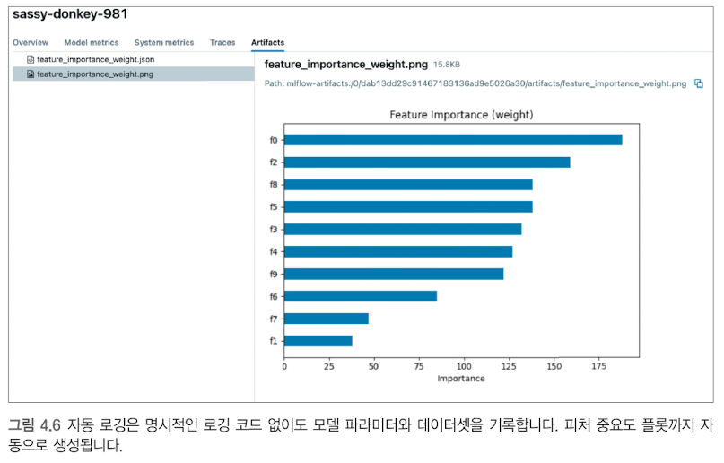
이미지 해설: 책의 그림 4.6(한글판 캡션 "자동 로깅은 명시적인 로깅 코드 없이도 모델 파라미터와 데이터셋을 기록합니다. 피처 중요도 플롯까지 자동으로 생성됩니다")입니다. run sassy-donkey-981 의 Artifacts 탭에 feature_importance_weight.json 과 feature_importance_weight.png(15.8 KB)가 있고, 오른쪽에 제목 Feature Importance (weight) 의 가로 막대그래프가 보입니다. 막대는 위에서부터 f0, f2, f8, f5, f3, f4, f9, f6, f7, f1 순으로 짧아지고, 가로축 Importance 는 0 에서 약 175 이상까지 표시됩니다. 우리가 log_artifact 같은 코드를 한 줄도 쓰지 않았는데 그림 파일이 저절로 생긴 것이 핵심입니다.
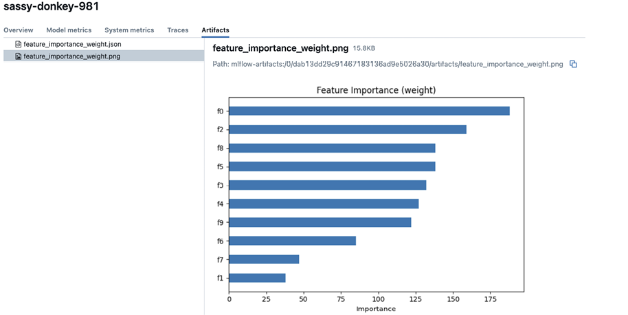
이미지 해설: 같은 그림 4.6 의 영문 캡션 판본입니다. 내용(run sassy-donkey-981, 같은 막대그래프)은 위 한글판과 같고, 캡션 부분이 잘려 있는 점만 다릅니다. 책 원본에 한글판·영문판 두 가지가 실려 있습니다.
f0 가 가장 길다는 것은 모델이 f0 열을 가장 자주 사용했다는 뜻입니다. 참고로 weight 기준 중요도는 일반적으로 "그 특성이 나무의 분기 조건으로 쓰인 횟수"를 뜻합니다. 막대가 길다고 해서 "그 특성이 소득을 결정한다"는 인과 관계까지 말해 주지는 않습니다.XGBoost objective별 run 분리
리스팅 4.6은 한 run 안에서 xgb.train을 두 번 호출합니다. 서로 다른 objective를 같은 run의 파라미터로 기록하면 Changing param values is not allowed 오류와 지표 귀속 문제가 생길 수 있습니다. objective별로 독립된 run을 만드는 패턴은 모델·설정·지표의 관계를 분명하게 합니다.
with mlflow.start_run(...) 으로 새 run 을 엽니다.objective별 run을 만드는 정정 패턴
# 수정 제안 (셀 전체 교체)
import xgboost as xgb
from sklearn.metrics import accuracy_score, roc_auc_score
n_round = 30
dtrain = xgb.DMatrix(data=X_train, label=y_train.ravel())
dtest = xgb.DMatrix(data=X_test, label=y_test.ravel())
base = {"colsample_bytree": 1, "learning_rate": 1, "max_depth": 10, "subsample": 1}
mlflow.xgboost.autolog()
for objective in ["binary:logistic", "binary:hinge"]:
with mlflow.start_run(run_name=f"xgboost-{objective.split(':')[1]}") as run:
model = xgb.train({**base, "objective": objective}, dtrain, n_round)
pred_train = model.predict(dtrain) # logistic: 확률, hinge: 0/1
pred_test = model.predict(dtest)
# logistic은 확률이라 0.5 기준으로 클래스로 바꿔 정확도 계산, hinge는 이미 0/1
label_train = (pred_train > 0.5).astype(int) if objective == "binary:logistic" else pred_train
label_test = (pred_test > 0.5).astype(int) if objective == "binary:logistic" else pred_test
roc_auc_score_train = roc_auc_score(y_train == 1, pred_train)
roc_auc_score_test = roc_auc_score(y_test == 1, pred_test)
training_accuracy = accuracy_score(y_train.ravel(), label_train)
test_accuracy = accuracy_score(y_test.ravel(), label_test)
mlflow.log_metric("roc_auc_score_train", roc_auc_score_train)
mlflow.log_metric("roc_auc_score_test", roc_auc_score_test)
mlflow.log_metric("training_accuracy", training_accuracy)
mlflow.log_metric("test_accuracy", test_accuracy)
mlflow.log_artifact("column_list.pkl")
print(f"[{objective}] AUC train {roc_auc_score_train:.4f} / test {roc_auc_score_test:.4f} | "
f"Acc train {training_accuracy:.4f} / test {test_accuracy:.4f}")
바꾼 점
| 바뀐 부분 | 이유 |
|---|---|
run 을 둘로 분리: objective 별로 with mlflow.start_run(...) 을 따로 엽니다 |
같은 run 에서 xgb.train 을 두 번 부르지 않으니 Changing param values is not allowed 가 나지 않습니다. run 이름도 xgboost-logistic, xgboost-hinge 로 구분됩니다. |
| logistic 도 평가 | 원래 코드는 첫 번째(logistic) 예측을 두 번째가 덮어써서 logistic 성능은 버려졌습니다. 이제 둘 다 기록됩니다. |
| AUC 와 정확도의 입력을 구분 | AUC 에는 logistic 의 확률을 그대로 넣고, 정확도에는 0.5 기준으로 0/1 로 바꾼 값을 넣습니다. 원래 코드는 hinge 의 0/1 만 썼습니다. |
| hinge 도 30라운드 | 원래는 n_round 를 안 줘서 hinge 만 10라운드였습니다. 같은 조건으로 비교하려고 30으로 맞췄습니다. |
mlflow.xgboost.autolog() 는 루프 밖에서 한 번만 |
autolog 는 한 번 켜 두면 이후 모든 xgb.train 에 적용됩니다. |
⚠ 바로잡기: 같은 run의 파라미터 값은 다른 값으로 덮어쓸 수 없습니다. 한 run에서 두 모델을 학습한다고 두 번째 모델이 반드시 저장되지 않는 것은 아닙니다. 파라미터 기록이 거부되거나 지표의 모델 귀속이 혼동될 수 있으므로, 각 모델을 독립된 run에 기록합니다.
AUC는 점수의 순위 정보를 보고, 정확도는 결정된 0/1 라벨을 봅니다. binary:logistic의 확률을 AUC에 그대로 전달하고 정확도에는 0.5 기준 라벨을 사용하는 이유입니다. binary:hinge의 0/1 출력으로도 AUC를 계산할 수 있지만 순위 정보가 두 값으로 압축됩니다. 분할과 학습 설정이 달라지면 지표와 등록 후보 모델도 달라질 수 있으므로, 비교에는 같은 데이터 분할과 라운드 수가 중요합니다.
4.1.3 MLflow 모델 레지스트리: 최고 모델 선정 및 저장
앞선 학습에서 우리는 의사결정 트리(Decision Tree), 랜덤 포레스트(Random Forest), XGBoost라는 세 가지 머신러닝 모델을 구축하고 학습 지표를 MLflow 추적 서버에 기록했습니다. 그렇다면 이 세 모델 중 성능이 가장 좋은 모델을 어떻게 고르고 안전하게 저장할 수 있을까요?
우리는 이미 모델 학습 과정에서 발생한 모든 주요 평가 지표(ROC-AUC, 정확도 등)를 MLflow 추적(Tracking) 서버에 기록해 두었습니다. 따라서 파일을 일일이 뒤지거나 손으로 비교하지 않아도, MLflow에 쿼리(검색 조건)를 보내는 것만으로 최적의 모델을 바로 찾을 수 있습니다.
찾은 모델은 MLflow 모델 레지스트리(Model Registry)에 정식으로 등록해 저장합니다.
MLflow 모델 레지스트리의 장점은 다음과 같습니다.
- 모델 수명주기(Lifecycle) 중앙 관리: 실험 단계부터 테스트(Staging), 운영(Production), 보관(Archived)까지 모델의 전체 생애주기를 한곳에서 관리합니다. (이 stage 방식은 MLflow 2.9.0부터 사용 중단 예정이며, 최신 방식은 뒤의 별칭(alias) 절에서 설명합니다.)
- 버전 추적(Version Tracking): 같은 모델 이름을 유지하면서 새로 재학습한 가중치를 v1, v2, v3처럼 차례로 쌓아 관리합니다.
- 모델 거버넌스(Governance) 및 감사 추적: 누가, 언제, 어떤 데이터와 소스 코드 커밋으로 이 모델을 학습하고 승인했는지 그대로 추적할 수 있습니다.
- 재현성(Reproducibility) 확보: 운영 중 문제가 생겼을 때 과거 특정 버전의 가중치와 하이퍼파라미터를 코드 한 줄로 불러올 수 있습니다.
최적의 모델을 찾아 레지스트리에 등록하는 방법은 크게 두 가지입니다.
- MLflow 웹 UI: 검색창에 쿼리를 입력하고 차트로 성능을 비교한 뒤 등록하는 직관적인 방법입니다.
- MLflow 클라이언트(파이썬 SDK): 스크립트 코드로 기준 지표 1위 모델을 자동 탐색하고 등록하여 파이프라인 자동화에 활용하는 방법입니다.
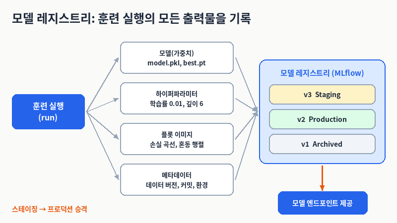
[이미지 해설]
- 그림이 보여주는 것: 좌측의 '훈련 실행(run)'에서 생성된 모델 가중치 파일(
model.pkl,best.pt), 하이퍼파라미터(학습률 0.01, 깊이 6), 시각화 플롯(손실 곡선, 혼동 행렬), 메타데이터(데이터 버전, Git 커밋, 실행 환경)가 중앙의 대형 박스인 'MLflow 모델 레지스트리'로 집결됩니다. 레지스트리 내부에서는v1 Archived(회색),v2 Production(연두색),v3 Staging(노란색) 등의 단계로 버전이 관리되며, 최종적으로 하단의 주황색 화살표를 통해 '모델 엔드포인트 제공(서빙)' 블록으로 배포되는 흐름을 나타냅니다. - 초보자를 위한 풀이: 실험할 때 나온 모든 결과물이 버려지지 않고 중앙 저장소에 모인 뒤, 품질 검증을 통과한 우수 모델만 정식 버전 라벨을 달고 실제 사용자에게 서비스되는 관문 역할을 한다는 점을 보여줍니다. (참고로 이 다이어그램의 'Staging/Production 단계'는 MLflow 예전 버전의 Stage 개념이며, 최신 버전에서 달라진 점은 아래에서 설명합니다.)
MLflow UI에서 조건 검색(쿼리)으로 최적 모델 찾기
MLflow 웹 UI의 실험 페이지 상단 검색창에 SQL 형태의 검색 쿼리를 입력하면 원하는 조건의 실행(run)만 걸러 볼 수 있습니다.
예를 들어, 소득 분류기의 일반화 성능을 가장 객관적으로 평가할 수 있는 테스트 세트의 ROC-AUC 지표가 0.8을 넘는 모델만 찾고 싶다면 다음과 같이 입력합니다.
metrics.roc_auc_score_test > 0.8
걸러 낸 실행 목록은 차트 보기(Chart view) 로 평가지표를 막대그래프나 분산형 차트로 시각화할 수 있어, 모델 간 성능 차이를 한눈에 비교할 수 있습니다.
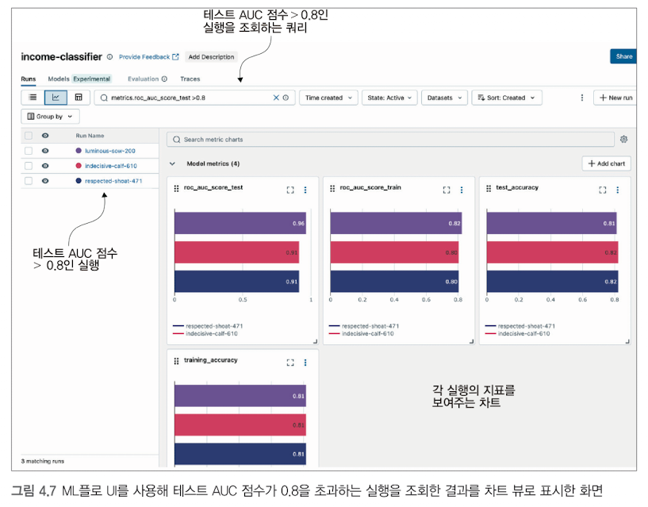
[이미지 해설]
- 그림이 보여주는 것: 상단 검색창에
metrics.roc_auc_score_test > 0.8이 입력되어 있고, 좌측 목록에는 기준을 만족하는 3개의 실행(luminous-sow-200,indecisive-calf-610,respected-shoat-471)이 선별되어 있습니다. 우측 차트 영역에는roc_auc_score_test(각각 0.96, 0.91, 0.91),roc_auc_score_train(0.82, 0.80, 0.80),test_accuracy,training_accuracy에 대한 가로 막대그래프가 나란히 배열되어 지표를 비교할 수 있습니다. - 초보자를 위한 풀이: 수십 개의 실험 결과 테이블을 일일이 눈으로 대조할 필요 없이, 검색 조건 하나로 먼저 걸러 낸 뒤 그래프에서 어떤 모델이 가장 오른쪽(높은 점수)에 있는지 바로 확인하는 방식입니다.
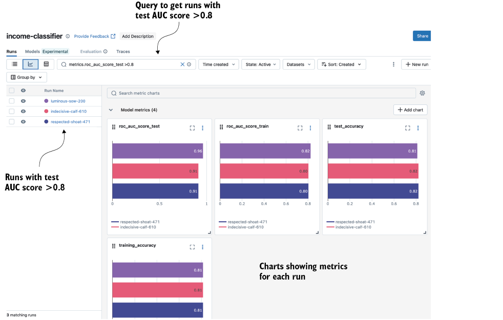
[이미지 해설]
- 그림이 보여주는 것:
ch4_img071.png의 영문 원서 원본 캡처 화면입니다. 상단에metrics.roc_auc_score_test > 0.8검색어와 함께 "Runs with test AUC score > 0.8", "Charts showing metrics for each run", 좌측 하단에3 matching runs라는 카운트가 표시되어 검색 조건에 맞는 실행의 개수와 차트 배치를 보여 줍니다.
후보 모델 비교 예시
이 장의 income-classifier 실험에서 기록되는 전체 실행과 테스트 평가 지표는 다음과 같은 모양이 됩니다. 수치는 한 번의 학습 결과를 보인 예이며, 데이터 분할이 달라지면 조금씩 바뀝니다.
| 실행 이름 (run name) | test AUC | test acc | 설명 |
|---|---|---|---|
eda-… |
- | - | 탐색적 데이터 분석 (EDA 실행, 평가지표 없음) |
| 결정 트리 run | 0.8200 | 0.8158 | 단일 결정 트리 (Decision Tree) |
| 랜덤 포레스트 run | 0.8571 | 0.8221 | 랜덤 포레스트 (Random Forest, 책 본문 기준 1등) |
| 원본 코드의 XGBoost run | 0.7248 | 0.8167 | 원본 코드의 XGBoost (hinge 손실 지표) |
xgboost-logistic |
0.8633 | 0.8210 | 수정 제안 코드: 독립된 run으로 분리 학습한 XGBoost (로지스틱 손실) |
xgboost-hinge |
0.7213 | 0.8135 | 수정 제안 코드: 독립된 run으로 분리 학습한 XGBoost (hinge 손실) |
⚠ 책 그림과 측정 값이 다를 수 있음: 책 본문에서는 랜덤 포레스트(Random Forest) 모델이 AUC 약 0.8571로 최고 성능을 기록한 것으로 서술되어 있습니다. 그러나 autolog 파라미터 충돌을 피하려고 각각 독립된 실행으로 나누어 학습한 제안 코드에서는 xgboost-logistic 모델이 AUC 0.8633으로 랜덤 포레스트를 앞섰습니다. 데이터 분할의 난수 시드(`random_state`)나 실행 순서에 따라 1위 모델은 달라질 수 있으니, 항상 MLflow 서버에 기록된 실제 측정치를 기준으로 최고 모델을 확인해야 합니다.
모델 flavor와 서빙 계약
모델 파일의 존재와 사용 가능성은 다릅니다
서빙 계약은 모델을 불러오는 쪽이 어떤 입력을 주고 어떤 출력을 해석할지 정한 약속입니다. MLflow의 flavor는 모델의 저장·로딩·추론 방식을 설명하는 규약입니다. signature는 입력과 출력의 이름·형식·자료형 등을 나타내는 명세입니다. 모델 가중치만 존재하는 것보다 이 정보를 함께 보관할 때 다른 실행 환경에서 모델을 사용하는 방법이 분명해집니다.
MLmodel 파일은 패키지에 어떤 flavor와 관련 정보가 있는지 설명합니다. 같은 패키지에 라이브러리 고유의 native flavor와 공통 파이썬 함수 인터페이스인 pyfunc flavor가 함께 있을 수 있습니다. native는 원래 라이브러리의 객체를 복원하는 방식입니다. pyfunc는 지원하는 모델을 공통 predict 인터페이스로 호출하도록 포장하는 방식입니다.
flavor는 Python 모델을 C++이나 Go 프로그램으로 자동 변환하는 기능이 아닙니다. 모델 복원에는 해당 로더가 지원하는 패키지와 의존성 환경이 필요합니다. 모델 로딩 호출 자체를 필요한 라이브러리의 자동 설치와 동일시해서도 안 됩니다. 공통 호출 이름을 쓰더라도 입력·출력의 형태와 의미는 모델 및 signature에 따라 달라집니다.
형식과 의미의 두 계약
다음은 가상의 예시입니다. 모델 v5가 정해진 순서의 숫자 열 90개와 전처리 P2를 사용한다고 합니다. 입력 파일도 90열이지만 두 열의 위치를 바꾸거나 결측값을 다른 방식으로 채우면, 크기는 같아도 모델이 받는 질문은 달라집니다. 이름·자료형을 명시한 signature는 형식을 점검하는 데 도움이 되며, 같은 계산법으로 만든 값인지 판단하는 책임은 전처리 계약에도 있습니다.
| 계약의 층 | 남길 정보 | 놓치기 쉬운 차이 |
|---|---|---|
| 패키지와 로더 | flavor, 라이브러리와 환경 정보 | 파일은 있으나 복원 환경이 다릅니다 |
| 입력 형식 | 열 이름, 순서, 자료형, shape | 같은 열 수라도 배치가 다르게 해석됩니다 |
| 입력 의미 | 범주 목록, 결측 처리, 계산·시간 기준 | 같은 이름 아래 다른 값이 들어옵니다 |
| 출력 의미 | 클래스 매핑, 확률·점수·라벨 구분 | 숫자가 어느 대상을 뜻하는지 달라집니다 |
signature가 없으면 모든 로더가 잘못된 열을 조용히 통과시킨다는 식으로 일반화할 수는 없습니다. 원래 모델도 열 수나 이름을 검사할 수 있습니다. 반대로 signature만 있다고 범주 처리와 피처 계산의 의미까지 자동으로 일치하는 것은 아닙니다. 형식 검사와 의미의 일관성을 함께 다루는 것이 중요합니다.
공통 predict와 확률 인터페이스
원래 객체의 모든 메서드가 pyfunc로 그대로 노출되는 것은 아닙니다. 이 장의 sklearn 분류기는 native 로더로 복원한 뒤 predict_proba를 사용할 수 있지만, xgb.train으로 만든 원시 XGBoost Booster에는 같은 메서드 계약이 없습니다. 모델 종류 이름을 바꾸는 것만으로 기존 추론 코드가 호환된다고 판단하기 어렵습니다.
가상 출력 0.73은 양성 클래스의 확률일 수도 있고 다른 점수일 수도 있습니다. 무엇을 반환하는지 계약에 따라 해석합니다. 확률 배열의 특정 열을 선택할 때에는 클래스 순서와 목표 클래스의 대응도 필요합니다. 따라서 모델 v5, 전처리 P2, 클래스 매핑 C1을 한 조합으로 기록하면, 예측 차이가 가중치 때문인지 입력·출력 해석 때문인지 좁혀 볼 수 있습니다.
참고 문서 MLflow Models — https://mlflow.org/docs/latest/ml/model/
MLflow 클라이언트를 통한 프로그래밍 방식 등록과 모델 버전·별칭(Alias) 관리
MLflow 클라이언트로 최고 모델 검색 및 등록 자동화
MLflow 웹 UI를 통한 모델 검색은 사람이 눈으로 직접 비교하고 승인할 때는 편리합니다. 하지만 모델을 자동으로 재학습(Continuous Training)하고 계속 배포(CD)하는 파이프라인에서는 이 과정을 파이썬 코드로 자동화해야 합니다.
MlflowClient는 MLflow 백엔드의 각 엔드포인트와 통신하는 공식 파이썬 인터페이스입니다.
등록 전 최고 모델 확인
책의 원본 코드는 최고 성능 모델을 무조건 random-forest-classifier라는 고정된 이름으로 등록합니다. 그런데 데이터 분할이나 실행 조건에 따라 1등 모델이 랜덤 포레스트가 아니라 XGBoost(xgboost-logistic)가 될 수도 있습니다. 책 코드를 그대로 실행하면 실제 가중치는 XGBoost인데 이름표만 "랜덤 포레스트"로 붙어, 모델 메타데이터가 서로 맞지 않게 됩니다.
따라서 등록하기 전에 먼저 어떤 실행(run)이 1위인지 확인하는 과정이 필요합니다.
from mlflow import MlflowClient
# 1. MLflow 클라이언트 인스턴스 생성
mlflow_client = MlflowClient()
experiment_name = "income-classifier"
# 2. 실험 이름으로 실험 객체 및 ID 조회
experiment = mlflow_client.get_experiment_by_name(experiment_name)
# 3. 테스트 AUC 0.8 초과 실행 중 점수 내림차순(DESC)으로 1개만 조회
best = mlflow_client.search_runs(
experiment_ids=experiment.experiment_id,
filter_string="metrics.roc_auc_score_test > 0.8",
max_results=1,
order_by=["metrics.roc_auc_score_test DESC"]
)[0]
print("선정된 최고 모델 실행:", best.info.run_name)
print("테스트 AUC 점수:", best.data.metrics["roc_auc_score_test"])
모델 URI 문제와 올바른 등록 경로 (runs:/ vs models:/)
책의 리스팅 4.7에 제시된 원본 코드는 다음과 같습니다:
# Listing 4.7 Retrieving MLflow runs and registering the model (원서 코드)
# MLflow 실행 결과 조회 및 모델 등록
from mlflow import MlflowClient
import mlflow
mlflow_client = MlflowClient()
experiment_name = "income-classifier"
experiment = mlflow_client.get_experiment_by_name(experiment_name)
run_object = mlflow_client.search_runs(
experiment_ids=experiment.experiment_id,
filter_string="metrics.roc_auc_score_test > 0.8",
max_results=1,
order_by=["metrics.roc_auc_score_test DESC"]
)[0] # AUC 테스트 점수가 가장 높은 실행의 실행 객체를 조회한다
model_uri = f"runs:/{run_object.info.run_id}/{experiment_name}" # 조회된 실행의 실행 ID로 모델 URI를 생성한다.
mlflow.register_model(
model_uri,
"random-forest-classifier"
) # MLflow 모델 레지스트리에 모델을 등록한다.
⚠ 바로잡기 (모델 URI 및 등록 이름 결함): 책 원서의 `model_uri = f"runs:/{run_object.info.run_id}/{experiment_name}"` 코드는 실무 환경에서 다음 두 가지 문제를 일으킵니다.
- 아티팩트 경로 불일치로 인한 등록 실패: 이 경로는 Scikit-learn 모델을
mlflow.sklearn.log_model(tree, "income-classifier")처럼 실험 이름과 동일한 아티팩트 경로로 수동 저장했을 때만 맞습니다. 반면 XGBoost의 자동 로깅(autolog)은 아티팩트 폴더 이름을 기본값인model로 저장합니다. 그래서 1등인xgboost-logisticrun에 위 코드를 실행하면 다음 예외가 나면서 모델 등록에 실패합니다.
MlflowException: Unable to find a logged_model with artifact_path income-classifier under run ...- 모델 이름 왜곡: 1등 모델이 XGBoost인데도 등록 이름을
random-forest-classifier로 고정해 두면, 실제 추론에 쓰이는 알고리즘과 레지스트리 이름이 어긋납니다.
정정 제안 코드: models:/{model_id} 경로와 범용 이름 사용
이 문제는 MLflow 3.x의 mlflow.search_logged_models() API로 풀 수 있습니다. 이 함수는 실행 ID(source_run_id)에 연결된 로깅된 모델 객체를 직접 찾아 고유한 model_id를 반환합니다. 그래서 Scikit-learn이든 XGBoost든 내부 아티팩트 폴더 이름과 상관없이 같은 방식으로 동작합니다.
또 등록 모델 이름도 특정 알고리즘에 묶이지 않도록 income-classifier-best로 짓습니다.
from mlflow import MlflowClient
import mlflow
# 1. 클라이언트 및 실험 객체 준비
mlflow_client = MlflowClient()
experiment_name = "income-classifier"
experiment = mlflow_client.get_experiment_by_name(experiment_name)
# 2. 테스트 AUC > 0.8 중 최고 점수 실행(1등) 조회
run_object = mlflow_client.search_runs(
experiment_ids=experiment.experiment_id,
filter_string="metrics.roc_auc_score_test > 0.8",
max_results=1,
order_by=["metrics.roc_auc_score_test DESC"]
)[0]
print("1등 선정 실행:", run_object.info.run_name)
print("1등 테스트 AUC:", run_object.data.metrics["roc_auc_score_test"])
# 3. 1등 실행에 연결된 로깅된 모델(logged model) 중 가장 최근 것 검색
# (sklearn의 'income-classifier', XGBoost autolog의 'model' 등 실제 저장 경로를 자동 해결)
logged_models = mlflow.search_logged_models(
experiment_ids=[experiment.experiment_id],
filter_string=f"source_run_id = '{run_object.info.run_id}'",
order_by=[{"field_name": "creation_time", "ascending": False}],
output_format="list",
)
best_model = logged_models[0]
# 4. models:/{model_id} URI를 사용하여 모델 레지스트리에 정식 등록
mv = mlflow.register_model(f"models:/{best_model.model_id}", "income-classifier-best")
print(f"등록 성공: 이름='{mv.name}', 버전=v{mv.version}")
[코드 동작 원리와 주의점]
- 버전 누적: 같은 모델 이름(
income-classifier-best)으로register_model을 여러 번 실행하면 새 버전(Version 2, Version 3...)이 계속 누적됩니다. - 빈 검색 결과 대비:
metrics.roc_auc_score_test > 0.8조건을 만족하는 실행이 하나도 없으면[0]인덱싱에서IndexError가 날 수 있습니다. 실무 코드에는if not runs: raise ValueError(...)같은 예외 처리를 넣어 두는 편이 안전합니다. - 등록된 모델 불러오기(추론용 로딩): 등록된 모델은 언제든지 파이썬에서
mlflow.pyfunc.load_model("models:/income-classifier-best/1")로 호출할 수 있습니다. XGBoost 모델의 경우model.predict(X_sample)를 실행하면 확률값(예: 0.34, 0.16 등)을 반환합니다.
등록된 모델 확인과 거버넌스 (Stage vs Alias)
모델 등록이 완료되면 MLflow 웹 UI 상단의 Models 탭에서 등록된 모델과 버전 정보를 확인할 수 있습니다.
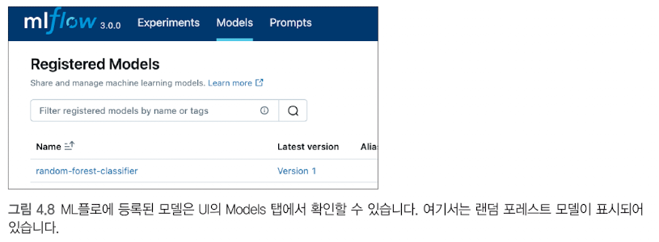
[이미지 해설]
- 그림이 보여주는 것: MLflow 3.0.0 UI의 Models 탭 화면입니다. Registered Models 목록 표에 Name
random-forest-classifier, Latest versionVersion 1이 표시되어 있으며, 하단 캡션으로 '그림 4.8 ML플로에 등록된 모델은 UI의 Models 탭에서 확인할 수 있습니다. 여기서는 랜덤 포레스트 모델이 표시되어 있습니다.'라는 캡션이 달려 있습니다. - 초보자를 위한 풀이: 실험실 밖의 공식 전시대(Models 탭)에 우리가 고른 모델이 첫 번째 공식 버전(Version 1)으로 올라온 화면입니다.
⚠ 바로잡기와 최신 권장 방식: Model Stage 지원 중단과 Model Alias: 책 본문에서는 과거 MLflow 1.x 시절의 관례에 따라 "코드를 테스트한 후 스테이징 플랫폼에서 프로덕션 플랫폼으로 이동하는 방식과 마찬가지로, 모델도 스테이징(Staging)과 프로덕션(Production)의 각 단계로 승격할 수 있습니다"라고 설명합니다.
그러나 공식 문서에 따르면 Model Stage(Staging, Production, Archived) 기능은 MLflow 2.9.0부터 Deprecated(지원 중단 예정)로 분류되었습니다.
예전 Stage는 모델당 하나의 고정된 단계만 가질 수 있어 여러 환경(카나리, A/B 테스트, 리전별 배포 등)을 다루기 어려웠습니다. 그래서 최신 MLflow(2.x 및 3.x)에서는 더 유연한 모델 별칭(Model Alias, 예:@champion,@challenger)과 태그(Tags)를 쓰도록 권장합니다.
더 알아두면: Alias는 '배포 자체'가 아닙니다
초보자가 흔히 하는 착각은 UI에서 모델에 @champion이나 Production 라벨을 붙이는 순간 실제 운영 서버에 컨테이너가 배포되고 트래픽이 흐른다고 생각하는 것입니다.
- Alias의 본질: Alias는 모델 레지스트리 안의 '메타데이터 포인터'일 뿐입니다. 책에 책갈피를 하나 꽂아 둔 것과 비슷합니다.
- 실제 배포와의 연계: 외부의 서빙 애플리케이션(예: KServe, Seldon Core, Triton, FastAPI 등)이 배포될 때
models:/income-classifier-best@champion이라는 URI를 조회해 가중치를 내려받고 메모리에 올려야 비로소 실제 서비스 배포가 됩니다.
flowchart LR
subgraph Registry["MLflow 모델 레지스트리 (income-classifier-best)"]
V1["버전 1 (v1)<br>RandomForest<br>AUC: 0.8571"]
V2["버전 2 (v2)<br>XGBoost<br>AUC: 0.8633"]
end
subgraph Pointers["별칭 (Model Alias)"]
C["@champion 포인터"]
CH["@challenger 포인터"]
end
subgraph Serving["프로덕션 추론 서빙 파이프라인"]
API["FastAPI / KServe 클러스터<br>URI: models:/income-classifier-best@champion"]
end
C -->|"현재 가리킴"| V2
CH -->|"검증용 가리킴"| V1
API -->|"부팅 시 가중치 로드"| C대화형 학습 위젯: 모델 버전 공존과 Alias 포인터 전환
MLflow 모델 레지스트리에서 v1과 v2가 어떻게 함께 존재하고, 배포용 별칭(@champion) 포인터가 어떻게 바뀌는지 아래 위젯으로 직접 체험해 보세요.
income-classifier-best) 아래에 여러 버전이 계속 공존하며, 배포용 별칭(Alias, 예: @champion)이 가리키는 버전만 바꿔서 중단 없이 전환하거나 바로 롤백합니다. 아래 버튼을 눌러 보세요.Test AUC: 0.8571
생성: 2026-10-24
상태: 실시간 서빙 중
Test AUC: 0.8633
생성: 2026-10-25
상태: 카나리 검증 대기
mlflow.pyfunc.load_model("models:/income-classifier-best@champion") -> v1 (RandomForest) 로드됨
참고: Prompts 탭과 대안 도구 랭퓨즈(Langfuse)
그림 4.8에서 볼 수 있듯이, 최신 MLflow UI에는 대규모 언어 모델 애플리케이션에서 쓰는 프롬프트를 추적하고 관리하는 Prompts 탭이 새로 생겼습니다.
그러나 이 책을 집필하던 시점에는 MLflow의 기본 프롬프트 기능이 전통적인 정형 머신러닝 모델 관리 기능에 비해 제한적이었습니다. 그래서 이 책의 12장과 13장에서는 언어 모델 전용 프롬프트 추적, 토큰 비용 모니터링, 사람의 피드백 평가, 세분화된 버전 관리에 더 적합한 오픈소스 대안 도구인 랭퓨즈(Langfuse)를 중점적으로 다룹니다.
레지스트리 버전과 별칭: 배치 시작 시 선택 고정
별칭을 한 번 해석하고 실행에 전달합니다
앞 절의 모델 별칭을 배치 실행에 적용할 때 중요한 질문은 “언제 별칭을 해석할 것인가”입니다. alias는 등록 모델의 특정 버전을 가리키는 이름이며 다른 버전으로 재지정할 수 있습니다. 배치가 시작한 순간 선택한 숫자 버전을 실행 계약에 남기면, 이후 별칭 변경과 해당 배치의 결과를 구분할 수 있습니다.
다음은 가상의 예시입니다. 오전 2시 배치가 시작할 때 champion은 소득 분류기의 버전 5를 가리킵니다. 2시 10분에 champion을 버전 6으로 재지정했다고 합니다. 여러 태스크가 각자 자기 시작 시점에 별칭을 다시 조회하면, 먼저 실행한 태스크는 5를 쓰고 나중 태스크는 6을 쓸 수 있습니다. 같은 결과 파일에 다른 모델의 예측이 섞일 가능성이 생깁니다.
실행 시작 때 선택한 숫자 버전 5를 기록하고 모든 관련 태스크가 그 버전을 쓰는 계약이라면, 별칭의 재지정은 다음 실행의 선택에 영향을 주도록 분리할 수 있습니다. 이는 별칭을 불변으로 만드는 방법이 아니라, 특정 실행의 선택을 안정된 버전 식별자로 표현하는 방법입니다.
선택 기록과 결과를 묶습니다
| 시점 | 별칭 상태 | 실행이 사용할 식별자 |
|---|---|---|
| 배치 A 시작 | champion이 버전 5를 선택합니다 | 등록 이름과 숫자 버전 5를 기록합니다 |
| 배치 A 진행 중 | champion이 버전 6으로 이동합니다 | A는 시작 시 선택한 5를 사용합니다 |
| 다음 배치 B 시작 | champion이 버전 6을 선택합니다 | B는 숫자 버전 6을 기록합니다 |
| A의 과거 결과 재계산 | 현재 별칭은 달라질 수 있습니다 | A의 선택 기록을 기준으로 판단합니다 |
표는 실행 계약의 예시이며 레지스트리가 모든 태스크를 자동으로 고정한다는 뜻은 아닙니다. 선택 결과를 전달하고 소비하는 쪽이 같은 계약을 사용해야 합니다. 재시도도 원래 실행의 일부로 취급한다면 같은 선택 기록을 이어받아야 합니다. 새로운 모델로 다시 계산하는 경우에는 다른 실행 조건이라는 사실을 구분해 남깁니다.
버전 번호와 함께 모델 출처, 전처리 버전, 데이터와 피처 정의의 식별자를 연결하면 결과 차이를 추적하기 좋습니다. 모델 버전을 고정했어도 전처리기를 새로 학습하거나 원천 파일이 덮어써지면 조건이 달라집니다. 식별자가 기록되어 있는 것과 그 내용이 실제로 보존되어 있는 것도 별개의 문제입니다.
변경 정책과 실행 정책을 구분합니다
MLflow의 stage는 2.9.0부터 deprecated이며 향후 제거 예정입니다. 전환 배경은 고정된 stage 체계가 다양한 관리 과정을 표현하기에 유연하지 않았다는 점입니다. alias와 tag도 변경 가능하므로 “가변 stage에서 불변 별칭으로 바뀌었다”는 설명은 정확하지 않습니다.
별칭 재지정은 UI와 API 모두에서 가능하며 CI/CD로만 허용할지는 팀의 권한·승인 정책입니다. 어느 변경 경로를 쓰더라도 소비자의 모델 선택 시점과 실제 선택 버전을 기록하는 원칙은 같습니다. 이미 메모리에 올린 서버가 별칭 변경만으로 새 모델을 다시 읽는지도 소비자의 정책에 달려 있습니다. 선택 기록은 배포·트래픽 전환·건강 점검을 대신하지 않습니다.
참고 문서 MLflow Model Registry workflow — https://mlflow.org/docs/latest/ml/model-registry/workflow/
MLflow 협업 아키텍처와 피처 스토어의 필요성
MLflow의 실험 추적과 모델 레지스트리는 파라미터·평가 지표·모델 버전을 함께 관리합니다. 팀 협업에서는 서버의 위치보다 공유 저장소, 접근 제어, 지속적인 가용성이 중요합니다.
개인 PC의 서버도 팀원이 접근할 수 있는 네트워크 경로와 중앙 영속 데이터베이스(PostgreSQL/MySQL), 공유 아티팩트 저장소(S3/MinIO/NFS), 인증 계층을 갖추면 소규모 협업에 사용할 수 있습니다. 다만 절전·전원 차단·유동 IP·단일 장애점(SPOF)은 가용성을 제한합니다. 중앙 서비스와 고가용성(HA) 구성은 이러한 위험을 줄이는 설계입니다.
MLflow 서버 운영의 설계 조건
- 서버와 UI:
mlflow ui는 추적 UI 제공을 위한 간이 진입점이고mlflow server는 서버 운영 설정을 명시하는 진입점입니다. 백엔드 저장소와 아티팩트 저장소의 역할을 구분합니다. - 아티팩트 URI의 지속성:
--default-artifact-root를 다른 S3 버킷으로 변경해도 과거 실험과 run의 URI가 자동으로 바뀌지 않습니다. 기존 기록은 생성 당시의 URI를 보관하므로 저장소 이전에는 메타데이터와 파일의 대응 관계가 필요합니다. - 인증과 접근 제어: 기본 MLflow 서버 구성에는 인증이 활성화되어 있지 않습니다. 오픈소스 MLflow에도 선택적 basic-auth 기능이 있으며, 프록시·Ingress·VPN 등을 통한 접근 통제도 가능합니다. 인증과 권한 범위를 갖추지 않은 외부 공개는 모델 유출과 실험 기록 변조·삭제 위험을 만듭니다.
모델 등록 다음 단계: 왜 피처 스토어(Feast)가 필요한가?
소득 분류 모델의 첫 번째 버전(income-classifier-best v1)을 레지스트리에 보관하는 것은 모델 파일의 관리 단계입니다.
하지만 모델 가중치를 파일로 저장했다고 해서 머신러닝 시스템 구축이 끝난 것일까요? 그렇지 않습니다. 모델을 실제 운영 환경(Production)에 서빙하려면 다음과 같은 기술적 장벽을 넘어야 합니다.
연구실에서 모델을 훈련할 때는 판다스(Pandas) 데이터프레임으로 3개월 치 과거 데이터를 느긋하게 조인하고 전처리해서 학습했습니다.
하지만 실제 서비스 운영 환경에서는 "지금 막 결제 버튼을 누른 사용자 A의 신용 등급과 최근 30일 소비 금액"을 0.01초(10ms) 안에 조회해서 모델에 넣어 주어야 합니다.
만약 훈련할 때 사용한 전처리 로직(파이썬 스크립트)과 실시간 서빙 엔지니어가 작성한 전처리 로직(C++ 또는 Java SQL)이 조금이라도 어긋나거나, 서빙 시점에 피처를 집계하느라 응답이 수 초 지연되면 모델이 엉뚱한 예측을 내놓거나 서비스 장애가 생길 수 있습니다.
이를 해결하기 위해 등장한 현대 머신러닝 플랫폼의 핵심 인프라가 피처 스토어(Feature Store)이고, 대표적인 도구가 피스트(Feast)입니다.
- 학습과 서빙의 단일 원천(Single Source of Truth): 오프라인 배치 학습용 대용량 피처(S3/Parquet)와 온라인 실시간 추론용 초저지연 피처(Redis)를 하나의 피처 정의로 함께 관리합니다.
- 재현성과 미래 데이터 누수 방지: 과거 특정 시점 기준의 피처값만 조인해 주는 시점 기준 조인(Point-in-Time Join)을 지원해 데이터 누수를 막습니다.
- 조직 간 피처 재사용: 다른 팀이나 다른 모델이 이미 만들어 둔 피처를 다시 개발하지 않고 바로 재활용할 수 있습니다.
비유의 10ms는 서비스가 정한 응답 목표의 예이며 Feast의 보장 값은 아닙니다. 동일한 피처 정의는 왜곡을 줄이지만, 계산 파이프라인·도착 지연·갱신 주기의 일관성도 함께 관리해야 합니다.
Kubernetes(K8s) 환경의 MLflow 배포 아키텍처와 영속성 설계
Kubernetes 환경의 MLflow 배포 아키텍처
4.1절의 마지막에는 다음과 같은 도전과제가 제시되어 있습니다.
도전과제: K8s 에 MLflow 설치 후 4.1 절 실습을 진행해보자.
K8s에 MLflow를 배포하는 2가지 아키텍처 전략
쿠버네티스(K8s) 클러스터에 MLflow 서버를 배포할 때는 인프라 규모와 운영 목적에 따라 크게 두 가지 설계 중 하나를 선택합니다.
| 구분 | (A) 학습 및 경량 테스트용 (프록시형) | (B) 프로덕션 엔터프라이즈 운영용 |
|---|---|---|
| 메타데이터 저장소 | K8s PVC 볼륨 내의 파일 기반 SQLite | 고가용성 외부 RDBMS (PostgreSQL / Cloud SQL) |
| 아티팩트 저장소 | K8s 영속 볼륨 클레임 (PVC, local-path) | S3 호환 객체 스토리지 (AWS S3 / MinIO / GCS) |
| 아티팩트 전송 방식 | --serve-artifacts (MLflow 서버 중계 프록시) |
--no-serve-artifacts (클라이언트 S3 직접 통신) |
| 장점 | MinIO나 외부 DB 컨테이너 없이 단일 Pod로 즉시 완성 | 수백 명의 팀원 동시 접속과 대용량 가중치 감당 |
| 단점 | Pod 재시작 시 단일 PVC I/O 병목 가능 | 클라이언트마다 IAM 키 및 S3 자격증명 배포 필요 |
--serve-artifacts 옵션을 켜서 MLflow 서버가 파일 업로드/다운로드를 직접 중계하도록 단순하게 구성했습니다.--backend-store-uri sqlite:////data/mlflow.db: 실험 메타데이터(파라미터, 지표, 태그)를 볼륨에 저장합니다.--artifacts-destination /data/artifacts --serve-artifacts: 클라이언트 노트북이 별도의 S3 키 없이도 서버의 HTTP REST API 엔드포인트를 통해 모델 가중치(model.pkl)를 PVC 디렉토리에 업로드할 수 있게 합니다.
데이터 영속성 주의사항: 메타데이터와 아티팩트의 동시 백업 원칙
쿠버네티스 환경에서 파일 기반(PVC)으로 MLflow를 운영할 때 가장 주의해야 할 점은 스토리지의 수명주기와 백업의 완전성입니다.
⚠ 데이터 영속성과 백업 원칙 (DB와 아티팩트를 함께 백업): 로컬 쿠버네티스 클러스터의 기본 스토리지 클래스(local-path)는 클러스터를 삭제하는 순간 내부의 모든 PVC 볼륨도 함께 영구 삭제될 수 있습니다.
메타데이터 단독 백업의 한계: 많은 엔지니어가mlflow.db파일 하나만 백업하는 실수를 범합니다. 하지만 SQLite DB만 백업하고 아티팩트 볼륨을 유실하면, 나중에 DB를 복원해도 실제 모델 가중치 파일(/data/artifacts)이 존재하지 않아 UI에서 모델 다운로드와 서빙 로드가 실패하고 메타데이터만 남은 껍데기 상태가 됩니다.
따라서 백업 시에는 반드시 메타데이터 DB와 아티팩트 저장소를 함께 백업해야 온전한 재현성을 보장할 수 있습니다.
4.2 피처 스토어로서의 Feast: 왜 피처 스토어가 필요한가?
4.2 피처 스토어로서의 Feast: 왜 피처 스토어가 필요한가?
책 4장의 두 번째 큰 주제는 피처 스토어(Feature Store) 와 오픈소스 도구 Feast입니다. 4.1절이 MLflow로 모델 실험과 등록을 다뤘다면, 4.2절은 모델에 넣을 피처(특성, Feature) 를 어떻게 일관되고 안전하게 관리할지 살펴봅니다.
피처 스토어(Feast)의 정의
책은 Feast를 다음과 같이 정의합니다.
- Feast as a feature store: 여러 곳에 흩어진 특성(feature)을 학습할 때와 추론할 때 같은 방식, 같은 시점 기준으로 꺼내 쓰게 해 주는 도구입니다.
현실의 문제와 모의 분할 시뮬레이션
4.1절의 소득 분류기 실습에서는 모든 피처가 단일 CSV 파일(income_data.csv) 하나에 모여 있었습니다. 하지만 책은 현실의 머신러닝에서는 이런 경우가 거의 없다고 지적합니다.
- 피처 파편화: 사용자의 인구통계 정보는 회원 관리 DB에 있고, 가구 관계 정보는 고객 포털 테이블에 있으며, 최근 직업과 소득 정보는 인사·금융 시스템에 따로 저장되어 있을 수 있습니다.
- 복잡한 조인 로직: 모델 훈련 데이터셋을 하나 만들려면 여러 테이블과 파일을 넘나드는 복잡한 피처 처리와 SQL 조인 스크립트를 매번 작성해야 합니다.
- 유지보수와 버그: 데이터 과학자나 엔지니어마다 조인 방식을 조금씩 다르게 짜면, 디버깅하고 유지보수해야 할 코드가 빠르게 늘어납니다.
책은 이 현실적인 상황을 재현하기 위해, 단일 데이터셋 파일을 3개의 별도 파일로 나누어 시뮬레이션합니다(그림 4.9). 각 파일에는 타임스탬프(feature_timestamp), 사용자 ID(user_id) 열, 그리고 다음 세 가지 피처 범주 중 하나의 데이터가 포함됩니다.
- 인구통계(Demographic) 피처: 성별(
Sex), 인종(Race), 출신 국가(Native_country) - 관계(Relationship) 피처: 혼인 여부(
Marital-Status), 관계(Relationship) - 직업(Occupation) 피처: 직종 분류(
Workclass), 학력(Education), 직업(Occupation)
원본 소득 데이터셋 9개 컬럼과 5개 행 번역표
단일 파일이 어떻게 세 갈래로 나뉘는지 이해하기 쉽도록, 4.1.1절의 미국 성인 소득 데이터(Adult/Census Income) 원본 9개 컬럼 스키마와 처음 5개 행 번역표를 다시 정리해 대조합니다.
컬럼 설명 (9개 컬럼)
| 컬럼 | 의미 | 값 예시(한글) | Feast 분할 범주 |
|---|---|---|---|
| Workclass | 고용 형태 | State-gov(주정부), Self-emp-not-inc(개인사업, 법인 아님), Private(민간기업) | 직업(Occupation) |
| Education | 최종 학력 | Bachelors(학사), HS-grad(고졸), 11th(고등학교 11학년 중퇴) | 직업(Occupation) |
| Marital-Status | 혼인 상태 | Never-married(미혼), Married-civ-spouse(기혼, 민간인 배우자), Divorced(이혼) | 관계(Relationship) |
| Occupation | 직업 | Adm-clerical(사무직), Exec-managerial(경영·관리직), Handlers-cleaners(운반·청소), Prof-specialty(전문직) | 직업(Occupation) |
| Relationship | 가구 내 관계 | Not-in-family(가족 아님), Husband(남편), Wife(아내) | 관계(Relationship) |
| Race | 인종 | White(백인), Black(흑인) | 인구통계(Demographic) |
| Sex | 성별 | Male(남성), Female(여성) | 인구통계(Demographic) |
| Native_country | 출신 국가 | United-States(미국), Cuba(쿠바) | 인구통계(Demographic) |
| Target | 정답(라벨): 연소득 | <=50K(5만 달러 이하), >50K(5만 달러 초과) |
모델 예측 타깃(피처 아님) |
5개 행의 번역 (행 0 ~ 4)
| 행 | Workclass | Education | 혼인 | Occupation | 관계 | 인종 | 성별 | 국가 | Target |
|---|---|---|---|---|---|---|---|---|---|
| 0 | 주정부 | 학사 | 미혼 | 사무직 | 가족 아님 | 백인 | 남성 | 미국 | <=50K |
| 1 | 개인사업 | 학사 | 기혼 | 경영·관리 | 남편 | 백인 | 남성 | 미국 | <=50K |
| 2 | 민간기업 | 고졸 | 이혼 | 운반·청소 | 가족 아님 | 백인 | 남성 | 미국 | <=50K |
| 3 | 민간기업 | 11학년 | 기혼 | 운반·청소 | 남편 | 백인 | 남성 | 미국 | <=50K |
| 4 | 민간기업 | 학사 | 기혼 | 전문직 | 아내 | 백인 | 여성 | 쿠바 | <=50K |
위 표처럼 원래 9개 열(피처 8개 + 정답 타깃 1개)로 붙어 있던 표가, Feast 실습에서는 인구통계 파일(3개 피처), 관계 파일(2개 피처), 직업 파일(3개 피처) 로 쪼개져 각각 user_id와 시각 정보가 붙어 저장됩니다.
그림 4.9: 단일 파일을 세 가지 피처 범주 파일로 분할
책은 이 분할 구조를 보여 주려고 아래 두 장의 그림을 나란히 실었습니다.
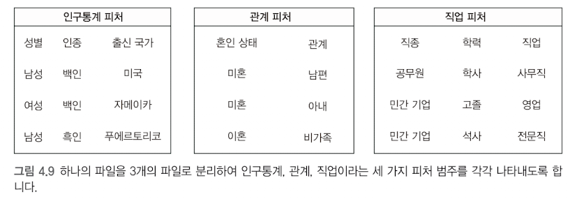
이미지 해설 (그림 4.9 한국어판):
- 화면에서 보이는 것: 3개의 독립된 피처 테이블이 나란히 놓여 있습니다.
- 좌측 인구통계 피처 표: 열은
성별,인종,출신 국가이며 값으로 (남성·백인·미국), (여성·백인·자메이카), (남성·흑인·푸에르토리코)가 들어 있습니다. - 중앙 관계 피처 표: 열은
혼인 상태,관계이며 값으로 (미혼·남편), (미혼·아내), (이혼·비가족)이 들어 있습니다. - 우측 직업 피처 표: 열은
직종,학력,직업이며 값으로 (공무원·학사·사무직), (민간 기업·고졸·영업), (민간 기업·석사·전문직)이 들어 있습니다.
- 좌측 인구통계 피처 표: 열은
- 초보자용 풀이: 하나의 큰 엑셀 시트에 붙어 있던 데이터가 각 팀이나 시스템의 성격에 맞춰 '인구통계', '가족 관계', '직업 정보'라는 세 개의 독립된 파일(Parquet)로 나뉘어 저장되는 현실의 모습을 보여 줍니다.
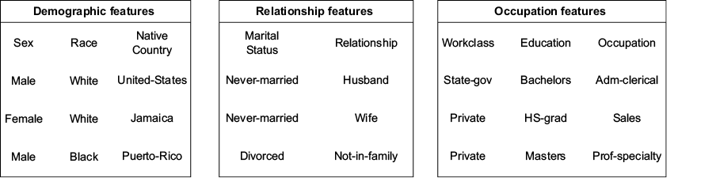
이미지 해설 (그림 4.9 영문 원서판):
- 화면에서 보이는 것: 상단의 흰색 상자에
Demographic features,Relationship features,Occupation features라는 세 피처 카테고리 제목이 있습니다. - 주의 (판독 안내): 원서 원본 파일은 배경이 투명해서, 일부 환경에서는 하단 테이블 영역이 어둡거나 검게 보일 수 있습니다. 위 번역판(
ch4_img078.png)과 구조가 같은 다이어그램이니, 세부 컬럼과 예시값은 번역판과 위 표를 참고하세요.
용어 한 줄 풀이
피처(Feature, 특성): 머신러닝 모델이 예측할 때 입력값으로 쓰는 데이터의 개별 속성(예: 나이, 성별, 직업).
피처 스토어(Feature Store): 피처 데이터를 저장, 공유, 버전 관리하고 학습(배치/오프라인)과 서빙(실시간/온라인) 양쪽에 일관되게 제공하는 전용 데이터 관리 인프라.
Parquet(파케이): 대규모 데이터를 행(row)이 아닌 열(column) 단위로 압축해 저장하므로 필요한 컬럼만 빠르게 읽을 수 있는 오픈소스 표 형식 파일 포맷.
학습-서빙 skew: 같은 이름의 피처가 다른 값이 되는 세 갈래 길
skew란 무엇인가
학습-서빙 skew(training-serving skew)는 모델을 학습할 때 쓴 피처와 실제로 예측할 때 쓰는 피처가 계산 방식이나 의미가 달라서 생기는 어긋남입니다. 모델은 오류 없이 돌아가고 점수만 조용히 나빠지기 때문에 발견이 늦습니다.
여기서 중요한 구분이 하나 있습니다. 운영에서 성능이 떨어졌다고 해서 모두 skew는 아닙니다. 세상이 변해서 입력 분포가 달라지는 드리프트, 정답 라벨이 늦게 들어오는 문제, 평가 방식이나 배포 실수도 같은 증상을 냅니다. skew는 그중에서 "같은 피처인데 학습과 서빙에서 처리 규칙이 다르다"는 원인만 가리킵니다.
어긋남이 생기는 세 갈래 길
| 원인 | 어떻게 어긋나는가 | 가상의 숫자 예시 |
|---|---|---|
| 코드 이중 구현 | 학습은 파이썬이나 SQL로, 서빙은 다른 언어로 따로 구현 | 결측값을 파이썬은 평균(예: 34)으로, 다른 구현은 0으로 채움 |
| 계산 범위 불일치 | 같은 이름인데 집계 기간이나 경계 처리가 다름 | "최근 30일 구매 금액"이 학습에서는 12만 원, 서빙이 당일을 포함해 31일을 더하면 15만 원 |
| 시각 불일치 | 학습 데이터에 예측 시점 이후의 값이 섞임 | 다음 절 「시점 정확성과 데이터 누수」에서 다룹니다 |
이 표의 숫자는 이해를 돕기 위한 가상의 예시입니다. 공백 문자, 시간대, 중복 거래, 취소 금액 처리 같은 사소한 차이도 같은 방식으로 값을 바꿉니다. 4장 데이터에서 문자열 값 앞에 공백이 붙어 있던 것(State-gov)이 더미 열 이름을 바꿨던 것도 작은 처리 차이가 결과의 모양을 바꾸는 예입니다.
피처 스토어가 하는 일과 하지 못하는 일
피처 스토어는 피처의 정의(엔티티, 소스, 스키마, 유효 기간)를 한 곳에 두고, 학습용 조회(과거 시점 기준)와 서빙용 조회(최신 값)가 같은 정의를 읽게 합니다. 정의가 하나이니 "누가 어떻게 계산했는지"를 따로 확인하는 비용이 줄어듭니다.
다만 피처 스토어를 도입했다고 모든 불일치가 저절로 사라지지는 않습니다. 피처를 만드는 원천 계산(배치 변환, 스트리밍 집계)이 팀마다 다른 규칙을 쓰면, 같은 이름 아래 다른 값이 들어옵니다. Feast는 피처를 계산해 주는 변환 엔진이라기보다 이미 계산된 값을 등록하고 조회하는 계층에 가깝다고 알려져 있으므로, 계산 규칙의 소유 팀과 갱신 주기, 허용되는 지연, 결측 처리 방식을 함께 정해 두어야 합니다.
서빙에는 시간 예산도 있다
서빙에는 속도 제약도 있습니다. 가상의 예로 예측 API의 응답 목표가 100ms이고 그중 피처 조회에 10ms 안팎만 쓸 수 있다면, 요청마다 과거 거래를 모아 집계할 시간이 없습니다. 그래서 값을 미리 계산해 빠른 저장소에 두는 구조가 필요해지고, 이것이 다음 절에서 설명하는 오프라인/온라인 저장소 분리로 이어집니다.
flowchart LR A["학습 파이프라인"] --> B["피처 정의 한 벌"] C["서빙 API"] --> B B --> D["같은 이름 같은 의미"] E["원천 계산 규칙이 다름"] -. "여전히 어긋날 수 있음" .-> D
구별해서 점검하기
오프라인 값과 온라인 값이 다르다는 사실만으로 skew라고 단정하면 안 됩니다. 학습용 값은 5월 22일 기준이고 온라인 값은 오늘 기준이라면 시간이 달라서 다른 것이 정상입니다. 같은 엔티티, 같은 기준 시각, 같은 정의로 두 경로에서 값을 뽑아 비교해야 비로소 skew를 의심할 수 있습니다. 이 비교가 다르면 그때는 정의나 변환 코드를, 같으면 드리프트나 라벨 지연 같은 다른 원인을 먼저 의심합니다.
참고 문서
- Google, Rules of Machine Learning (training-serving skew): https://developers.google.com/machine-learning/guides/rules-of-ml
- Feast, Architecture overview: https://docs.feast.dev/getting-started/architecture/overview
시점 기준 조인(Point-in-Time Join)과 미래 데이터 누수 차단
시점 기준 조인(Point-in-Time Join)과 미래 데이터 누수 차단
피처 파일이 여러 곳에 흩어져 있을 때, 추론하거나 재훈련하는 시점에 어떤 시점의 피처를 가져와야 할까요? 피처 스토어의 핵심 기능인 시점 기준 조인(Point-in-Time Join) 과 미래 데이터 누수(Data Leakage) 를 막는 원리를 알아봅니다.
‘적합한 피처’란 무엇인가?
구체적인 날짜를 예로 들어 설명하면 다음과 같습니다.
- 상황: 2023년 5월 22일에 특정 사용자(
user_id)의 피처를 조회해 소득이나 이탈 여부를 예측하려 합니다. - 데이터 상태: 데이터베이스에는 해당 사용자의 피처가 시점별로 3회 기록되어 있습니다.
- 1월 7일 기록
- 5월 21일 기록
- 12월 4일 기록
- 질문: 5월 22일 조회 시점에 가장 적합한 피처는 무엇일까요?
- 정답: 5월 22일보다 과거이면서 가장 가까운 시점, 즉 5월 21일에 기록된 피처 입니다.
flowchart LR
T1["1월 7일 기록 (과거)"] --> T2["5월 21일 기록 (직전 과거)"]
T2 --> Q{"5월 22일 예측 시점"}
T3["12월 4일 기록 (미래)"] -.->|차단: 데이터 누수 방지| Q
Q ==> R["5월 21일 피처 선택!"]왜 12월 4일 데이터를 쓰면 안 되는가? (미래 데이터 누수)
초보자가 흔히 하는 실수는 "그냥 가장 최신값을 쓰면 되는 것 아닌가?" 하고 12월 4일 기록까지 후보에 넣는 것입니다.
⚠ 조심할 함정: 미래 데이터 누수 (Data Leakage)
5월 22일 시점에는 아직 12월 4일이 오지 않았습니다. 만약 5월 22일의 대출 심사 모델을 학습시키면서 12월 4일에 발생한 연체 이력이나 고소득 직장 이직 정보를 피처로 붙여 버리면, 모델은 미래의 시험지를 미리 보고 시험을 치는 것과 같습니다.
그 결과 오프라인 학습 평가에서는 정확도나 AUC가 99%~100%까지 나오지만, 실제 운영 환경에 배포하면 미래 데이터가 존재하지 않으므로 예측이 크게 틀어집니다. 이를 미래 정보 누수(Data Leakage)라고 부릅니다.
따라서 과거 데이터로 학습 데이터셋을 만들 때는 각 이벤트가 일어난 시점에 실제로 알 수 있었던 과거 피처만 조인해야 합니다. 이를 시점 기준 조인(Point-in-Time Join) 또는 타임 트래블 쿼리(Time-travel query) 라고 부릅니다.
스크립트/SQL 직접 작성 vs Feast 추상화 계층
이런 로직을 SQL 쿼리나 판다스 스크립트로 직접 작성할 수도 있지만, 그러면 다음과 같은 문제가 생깁니다.
- 복잡한 AS-OF JOIN: 각 행의 타임스탬프보다 이전이면서 가장 최근인 행을 찾는 SQL(
AS-OF JOIN또는 윈도우 함수)은 작성이 까다롭고 실수하기 쉽습니다. - 유지보수 부담 증가: 테이블이 늘어날 때마다 시간 조인 로직을 새로 짜고 검증해야 하므로 디버깅 대상이 늘어납니다.
- 훈련-서빙 불일치: 분석가가 노트북에서 짠 SQL과 엔지니어가 실시간 서버에서 짠 조회 로직이 미세하게 다르면 모델 동작이 달라집니다.
Feast의 해결책: 피스트는 특정 시점 기준으로 정확한 피처 세트를 만들어 주는 데이터 추상화 계층을 제공합니다. 복잡한 조인 SQL을 고민할 필요 없이 user_id와 event_timestamp만 넘기면, 피스트가 미래 누수 없는 과거 피처를 알아서 결합해 줍니다. 덕분에 데이터 과학자는 조인 로직이 아닌 피처 엔지니어링에 집중할 수 있습니다.
그림: Feast 학습·서빙 통일과 미래 누수 차단
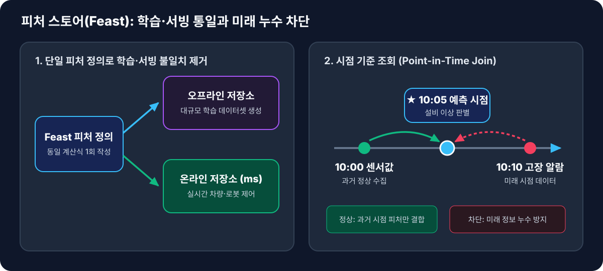
이미지 해설 (SVG 다이어그램 분석):
- 화면에서 보이는 것: 두 개의 큰 패널로 구성되어 있습니다.
- 좌측 패널 (1. 단일 피처 정의로 학습·서빙 불일치 제거): 중앙의
Feast 피처 정의 (동일 계산식 1회 작성)에서 위쪽오프라인 저장소 (대규모 학습 데이터셋 생성)와 아래쪽온라인 저장소 (ms 단위 초저지연, 실시간 제어)로 갈라집니다. - 우측 패널 (2. 시점 기준 조회 (Point-in-Time Join)): 시간 축을 따라
10:00 센서값(과거 정상 수집)에서★ 10:05 예측 시점(설비 이상 판별)으로 실선 연결되며 하단에정상: 과거 시점 피처만 결합이라고 적혀 있습니다. 반면 예측 시점 이후의10:10 고장 알람(미래 시점 데이터)에서 10:05 예측 시점으로의 연결은 가위표와 점선으로 차단되며 하단에차단: 미래 정보 누수 방지라고 표시되어 있습니다.
- 좌측 패널 (1. 단일 피처 정의로 학습·서빙 불일치 제거): 중앙의
- 초보자용 풀이: 공장 설비가 고장 날지(10:05) 예측할 때, 고장이 난 뒤에 울린 10:10 알람 소리를 피처로 넣어 버리면 학습 때는 100점이지만 실제 현장에서는 고장을 미리 막을 수 없습니다. Feast는 10:05 직전의 10:00 센서값만 결합하고 10:10 데이터는 차단합니다.
- 주의 (렌더링 안내): 원본 파일이 SVG 벡터 형식이라 일부 오프라인 뷰어나 브라우저 설정에서는 그림이 바로 표시되지 않을 수 있습니다. 핵심 내용은 위 설명과 같습니다.
인터랙티브 위젯: Point-in-Time Join 시뮬레이터
아래 슬라이더로 조회일과 TTL(유효 시간창, Lookback Window) 을 바꿔 가며, Feast가 1월 7일, 5월 21일, 12월 4일 기록 중 어느 값을 고르고 어느 값을 차단하는지 직접 확인해 보세요.
값 A
과거 기록
값 B
5/22 기준 최신 과거
값 C
🚫 미래 기록 (누수 방지 차단됨)
위 시뮬레이터에서 기본값(조회일 142일 = 5월 22일, TTL 365일)일 때:
- 12월 4일(338일) 은 조회일보다 뒤이므로 미래 데이터로 판정되어 차단됩니다.
- 1월 7일(7일) 과 5월 21일(141일) 중 더 최근인 5월 21일의 피처가 선택됩니다.
- 만약 TTL을 1일 미만(예: 0일)으로 줄이면 5월 21일 기록조차 유효 기간을 벗어나 None이 됩니다.
시점 정확성과 데이터 누수: 사건이 일어난 시각과 알게 된 시각
데이터 누수의 세 가지 얼굴
데이터 누수(data leakage)는 시험 전에 정답지를 미리 본 것과 같습니다. 학습 점수는 높게 나오지만 실제 운영에서는 그 정보가 없으니 성능이 무너집니다. 피처와 관련된 누수는 크게 세 종류로 나눠 볼 수 있습니다.
| 종류 | 설명 | 가상의 예시 |
|---|---|---|
| 미래 피처 누수 | 예측 시점보다 늦게 기록된 값이 조인됨 | 6월 1일 이탈을 예측하는데 6월 3일에 기록된 "최근 7일 로그인 0회"를 사용 |
| 타깃 누수 | 정답에서 만들어진 열이 입력에 들어감 | "해지 사유" 열로 해지 여부를 예측 |
| 분할 오염 | 평가 데이터의 정보가 학습 전처리에 들어감 | 전체 데이터의 평균으로 정규화한 뒤에 학습/평가를 나눔 |
시점 기준 조인(Point-in-Time Join)은 이 중 첫 번째, 미래 피처 누수를 막는 장치입니다. 두 번째와 세 번째는 별도의 설계(어떤 열을 입력으로 쓸지, 분할 후에 전처리를 맞출지)로 막아야 합니다.
규칙은 간단하다
각 학습 행에 대해 그 행의 기준 시각 이전에 기록된 값 중 가장 최근 것 하나를 붙입니다. Feast 문서는 엔티티 데이터프레임의 각 행 시각에서 과거로 거슬러 올라가며, 최대 TTL만큼까지 탐색한다고 설명합니다. 그리고 TTL은 각 행의 시각을 기준으로 한 길이이며 쿼리를 실행하는 현재 시각 기준이 아닙니다.
가상의 숫자로 따라가 보겠습니다. 고객 7의 기준 시각이 5월 22일 12시이고 TTL이 48시간이라고 합시다. 피처 기록이 세 개 있습니다.
| 기록 시각 | 값 | 기준 시각 대비 | 결과 |
|---|---|---|---|
| 5월 20일 10시 | 10만 원 | 50시간 전, 창 밖 | 제외 |
| 5월 21일 18시 | 12만 원 | 18시간 전, 창 안 | 선택 |
| 5월 23일 09시 | 30만 원 | 미래 | 제외 |
조인 결과는 12만 원입니다. 창 안에 기록이 하나도 없으면 과거 값을 억지로 만들어 주지 않고 결측으로 남습니다.
사건이 일어난 시각과 알게 된 시각은 다르다
여기에 초보자가 놓치기 쉬운 빈틈이 있습니다. 거래가 일어난 시각(event time)과 시스템이 그 기록을 받은 시각(도착 시각)은 다를 수 있습니다. 5월 21일 18시의 거래가 수집 지연으로 5월 23일 09시에야 도착했다면, 5월 22일 12시에 서비스하던 모델은 그 거래를 알 수 없었습니다. 그런데 일어난 시각만 보고 과거를 조인하면, 당시에는 존재하지 않던 값이 학습 데이터에 들어갑니다.
Feast 문서에는 같은 사건 시각의 중복 행 중 created_timestamp가 더 최신인 것을 고르는 동작이 설명되어 있고, 최신 문서에는 filter_by_created_timestamp 옵션으로 기준 시각 이후에 만들어진 행을 걸러내는 방법도 소개되어 있습니다. 다만 이 옵션이 지금 사용하는 버전에서 지원되는지는 버전마다 다를 수 있으니 공식 문서에서 확인하세요. 지연 도착이나 소급 수정이 잦은 원천이라면 "그 시점에 실제로 쓸 수 있던 스냅샷"을 따로 보관하는 편이 더 안전합니다.
미리 계산한 피처와 원천 이벤트 집계를 구분하자
시점 기준 조인은 이미 계산되어 시각이 붙은 피처 값을 골라 붙이는 기능입니다. "예측 시각 직전 1시간 동안의 결제 횟수"처럼 원천 거래를 즉석에서 집계하는 일은 그 앞 단계의 변환이 맡습니다. 그 변환이 하루 전체를 한꺼번에 집계해 버리면, 조인이 아무리 정확해도 값 자체에 미래 거래가 들어 있습니다. 가상의 예로 14시 결제를 예측하는데 14시 5분의 연쇄 결제까지 합산한 값이 들어가면 학습 점수만 비정상적으로 높아집니다.
flowchart LR A["원천 이벤트"] --> B["피처 계산 단계"] B --> C["시각이 붙은 피처 값"] C --> D["시점 기준 조인"] D --> E["학습 데이터"] B -. "여기서 미래가 섞이면 조인이 막지 못함" .-> E
참고 문서
- Feast, Point-in-time joins: https://docs.feast.dev/getting-started/concepts/point-in-time-joins
- scikit-learn, Common pitfalls (data leakage): https://scikit-learn.org/stable/common_pitfalls.html
Feast의 이중 스토어와 Materialization
실시간 예측 서비스를 운영할 때는 피처를 밀리초(ms) 단위로 빠르게 조회해야 합니다. 반면 모델을 학습시킬 때는 수개월 치의 방대한 과거 데이터를 한꺼번에 읽어야 합니다. Feast는 이 상반된 요구를 만족시키기 위해 오프라인 스토어와 온라인 스토어라는 이중 스토리지 구조를 설계했습니다.
Feast 피처 스토어 설계 (그림 4.10)
책은 피처 스토어의 핵심 구조를 다음과 같이 설명합니다(그림 4.10).
flowchart TD
subgraph OfflinePipeline["1. 피처 생성 파이프라인"]
RAW["원천 데이터 (로그/DB)"] --> PIPE["피처 연산 파이프라인"]
end
PIPE -->|배치 적재| OFFLINE["2. 오프라인 스토어 (MinIO / S3 Parquet)<br>• 대규모 과거 시계열 이력 저장<br>• 모델 학습용 get_historical_features"]
OFFLINE -->|주기적 푸시 / 동기화| MAT["4. 구체화 (feast materialize)"]
MAT --> ONLINE["3. 온라인 스토어 (Redis)<br>• 엔티티별 최신값만 캐싱<br>• 실시간 추론용 get_online_features (ms 단위)"]
REG["5. 피처 레지스트리 (registry_local.db)<br>• 피처·엔티티 스키마 및 스토어 메타데이터"] -.-> OFFLINE
REG -.-> ONLINE
OFFLINE --> TRAIN["모델 훈련 (배치)"]
ONLINE --> INFER["실시간 예측 (추론 API)"]위 구조를 이루는 6가지 핵심 구성요소를 하나씩 살펴봅니다.
- 피처 연산 프로세스 / 파이프라인 (Feature Pipeline):
- 데이터 웨어하우스나 객체 스토리지의 원천 데이터로부터 피처를 계산하여 오프라인 스토어로 채우는 배치 작업입니다.
- 오프라인 스토어 (Offline Store):
- 과거 시계열 피처 데이터를 대량으로 보관하는 저장소입니다. MinIO(S3 Parquet 파일), Snowflake, BigQuery 등이 사용됩니다.
- 용도: 모델 훈련 데이터셋 생성 및 대규모 배치 추론 (
get_historical_features).
- 온라인 스토어 (Online Store):
- 실시간 모델 서빙을 위해 응답 지연 시간이 극히 짧은 고성능 키-값(Key-Value) 데이터베이스입니다. 이 구성에서는 Redis를 사용하며, DynamoDB, Google Cloud Datastore 등도 지원합니다.
- 용도: 실시간 추론 시 빠른 피처 조회 (
get_online_features). - 특징: 모든 과거 이력을 저장하지 않고, 엔티티 키(user_id)당 가장 최근의 최신값만 저장합니다.
- 구체화 (Materialization):
- 오프라인 스토어에 쌓인 피처 데이터 중 엔티티별 최신값을 뽑아 온라인 스토어(Redis)로 주기적으로 푸시(복사) 하는 작업입니다.
- 피처 레지스트리 (Feature Registry):
- 피처의 이름, 타입, 위치, 소스 경로, 온라인/오프라인 스토어 정보 등 모든 메타데이터 정의를 보관하는 중앙 카탈로그입니다. 이 구성에서는 MinIO의 버킷
feature-registry안에registry_local.db파일로 저장됩니다.
- 피처의 이름, 타입, 위치, 소스 경로, 온라인/오프라인 스토어 정보 등 모든 메타데이터 정의를 보관하는 중앙 카탈로그입니다. 이 구성에서는 MinIO의 버킷
- Feast 파이썬 SDK (Software Development Kit):
- 데이터 과학자와 엔지니어가 파이썬 코드로 두 스토어 어디서든 데이터를 조회하고(
get_historical_features,get_online_features), 구체화(materialize)를 실행할 수 있게 해 주는 공통 프로그래밍 인터페이스입니다.
- 데이터 과학자와 엔지니어가 파이썬 코드로 두 스토어 어디서든 데이터를 조회하고(
본문 수록 다이어그램 3종 상세 해설
책은 이 아키텍처와 필요성을 설명하기 위해 세 장의 그림(ch4_img081.png, ch4_img082.png, ch4_img083.png)을 연속해서 보여줍니다.
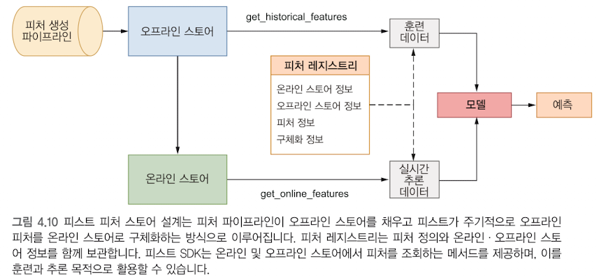
이미지 해설 (그림 4.10 한국어 번역판):
- 화면에서 보이는 것:
- 좌측 상단 원통형
피처 생성 파이프라인에서 연파란색오프라인 스토어로 화살표가 이어집니다. 오프라인 스토어에서 아래쪽 연초록색온라인 스토어로 수직 화살표가 연결되어 데이터가 푸시되는 구체화 흐름을 나타냅니다.오프라인 스토어는get_historical_features메서드를 통해 회색훈련 데이터로 연결되고,온라인 스토어는get_online_features메서드를 통해 회색실시간 추론 데이터로 연결됩니다.- 중앙의 주황색 테두리 상자인
피처 레지스트리안에는온라인 스토어 정보,오프라인 스토어 정보,피처 정보,구체화 정보가 기재되어 있고, 훈련·추론 데이터 축으로 점선 화살표가 이어집니다. - 최종적으로
훈련 데이터와실시간 추론 데이터는 분홍색모델을 거쳐 주황색예측상자로 수렴합니다.
- 좌측 상단 원통형
- 초보자용 풀이: 모델 학습과 실시간 서빙이 서로 다른 저장소(MinIO와 Redis)를 바라보지만, 중앙의 피처 레지스트리를 통해 동일한 피처 정의를 공유하여 일관된 예측을 수행하는 전체 데이터 라이프사이클을 보여줍니다.
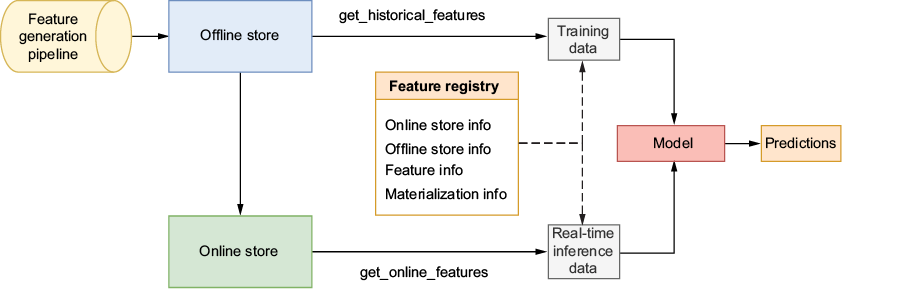
이미지 해설 (그림 4.10 영문 원서판):
- 화면에서 보이는 것: 위 그림 4.10의 원서(영문) 버전 다이어그램입니다. 좌측의
Feature generation pipeline,Offline store,Online store와 우측의Training data,Real-time inference data,Model,Predictions블록이 배치되어 있습니다. - 주의 (읽는 법): 원서 파일이 투명 배경이라 중앙
Feature registry상자 내부 글씨와 연결 화살표가 어둡게 가려져 보일 수 있습니다. 흰 배경에서 보거나 위 번역판(ch4_img081.png)을 참고하세요.
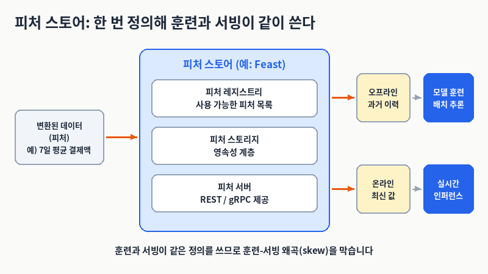
이미지 해설 (피처 스토어 훈련-서빙 왜곡 방지 원리):
- 화면에서 보이는 것: 상단 제목에 "피처 스토어: 한 번 정의해 훈련과 서빙이 같이 쓴다"라고 명시되어 있습니다. 좌측 "변환된 데이터(피처) 예: 7일 평균 결제액"에서 중앙의 "피처 스토어(예: Feast)"로 화살표가 들어가며, 내부에는
피처 레지스트리(사용 가능한 피처 목록),피처 스토리지(영속성 계층),피처 서버(REST/gRPC 제공)3개 블록이 있습니다. 우측 상단으로는오프라인 과거 이력을 거쳐모델 훈련 / 배치 추론으로 가고, 우측 하단으로는온라인 최신 값을 거쳐실시간 인퍼런스로 갑니다. 하단에 "훈련과 서빙이 같은 정의를 쓰므로 훈련-서빙 왜곡(skew)을 막습니다" 라고 요약되어 있습니다. - 초보자용 풀이: 머신러닝 시스템의 가장 큰 고질병인 훈련-서빙 왜곡(Training-Serving Skew) 을 방지하는 원리를 보여줍니다. 학습할 때 쓴 피처 계산 공식과 실시간 서버에서 쓰는 공식이 다르면 모델이 오작동하는데, 피처 스토어의 공통 정의가 왜곡을 줄입니다. 계산 로직과 갱신 주기의 일관성도 함께 관리해야 합니다.
Push 모델 vs Pull 모델의 차이
초보자들은 흔히 "실시간 API 서버가 피처를 요청할 때, 피처 스토어가 오프라인 스토어(MinIO)에서 데이터를 실시간으로 가져오는 것(Pull) 아닌가?"라고 오해합니다.
- Pull 모델의 한계: 수십 기가바이트의 Parquet 파일을 실시간 요청마다 열어서 조인하면 응답 시간이 수백 밀리초에서 수 초 이상 걸려 웹 서비스가 마비됩니다.
- Feast의 Push 모델: Feast는 미리 오프라인 스토어에서 최신 데이터를 읽어 온라인 스토어(Redis 메모리)로 밀어 넣어(Push) 둡니다. 실시간 모델 서버는 Redis 메모리에서 키(
user_id)로 값을 읽어오므로 초저지연 서빙이 가능합니다.
바로잡기 및 개념 보강: Materialize 시간 해석과 동작 원리
⚠ 바로잡기: 시간대 정보가 없는 naive datetime은 Feast 내부에서 UTC 기준으로 해석합니다. materialization은 지정한 시간 범위에서 엔티티별 최신 피처를 온라인 스토어에 적재하는 작업이고,get_online_features는 이미 적재된 값을 조회하는 작업입니다. 이 절의 Push는 이런 복사를 뜻하며, 스트리밍 피처를 넣는 FeastPushSource·Push API와 구분합니다. 온라인 값은 materialization 또는 Push API 등으로 갱신될 수 있습니다.apply는 메타데이터 등록이며 값 적재가 아닙니다. 다른 적재가 없는 빈 Redis라면 apply만으로 피처 값이 생기지 않지만, 기존 키가 있는 Redis의 dbsize를 0으로 단정할 수는 없습니다.
TTL과 온라인 스토어 운영 요건
FeatureView의 TTL은 과거 시점 조인에서 피처를 찾는 시간창입니다. Redis 키의 만료 시간을 자동 지정하는 값과는 다릅니다. Feast 0.40.1의 Redis key_ttl_seconds는 별도 설정이며 기본값은 None입니다. 구체화 시점의 최신성과 조회 응답 지연도 다른 지표입니다. 빠른 조회가 최근에 갱신된 값을 뜻하지는 않습니다. registry_local.db는 SQLite가 아니라 직렬화된 protobuf 파일 레지스트리입니다.
온라인 스토어는 조회 속도뿐 아니라 재시작 후 복구, 인증, 상태 점검을 고려합니다. StatefulSet은 Pod의 안정된 식별자와 볼륨 연결을 관리하고, PVC는 Pod가 재생성되어도 데이터를 보존하는 저장 공간을 제공합니다. StatefulSet 자체가 Redis의 메모리 내용을 디스크에 저장하거나 고가용성을 보장하지는 않습니다. AOF(appendonly yes)는 변경 명령을 로그로 기록하여 복구를 돕지만, 실제 손실 범위는 동기화 정책과 저장장치 상태에 달려 있습니다. requirepass는 비밀번호 인증을 요구하며, 비밀 값은 공개 설정과 분리된 Secret 등으로 관리합니다. Secret의 base64 표현은 암호화가 아니므로 접근 권한과 저장 암호화도 별도 고려 대상입니다. 상태 점검에서도 비밀번호를 명령 인자에 노출하지 않는 인증 경로가 필요합니다. readiness probe는 요청을 받을 준비가 되었는지 판단하고, liveness probe는 복구가 필요한 비정상 프로세스를 탐지합니다. 두 점검의 목적과 실패 기준을 구분해야 불필요한 재시작을 줄일 수 있습니다. CPU·메모리 자원 요구량과 제한, 영속 볼륨의 용량·장애 범위도 함께 설계해야 피처 값의 가용성을 유지할 수 있습니다.
오프라인과 온라인 저장소를 둘로 나누는 이유
요구가 정반대다
피처 저장소가 둘로 나뉘는 이유는 학습과 서빙이 저장소에 하는 요청의 모양이 정반대이기 때문입니다.
| 구분 | 오프라인 스토어 | 온라인 스토어 |
|---|---|---|
| 주 용도 | 학습, 배치 추론 | 실시간 추론 |
| 읽는 방식 | 많은 엔티티의 과거 기록을 한꺼번에 스캔하고 시점 조인 | 엔티티 키 하나로 준비된 값을 바로 조회 |
| 응답 시간 | 수 초에서 수 분이 걸려도 괜찮음 | 서비스가 허용하는 짧은 시간(보통 밀리초 단위가 목표) |
| 담는 범위 | 과거 기록 전체 | 엔티티별 현재 값 |
| 이 책의 예 | MinIO의 Parquet 파일 | Redis |
"온라인"이라는 말은 인터넷 연결을 뜻하지 않고, 요청이 들어오는 즉시 답해야 하는 서빙 경로를 뜻합니다.
규모로 보는 이유 (가상의 계산)
가상의 숫자로 따져 보겠습니다. 고객 100만 명의 기록을 하루에 한 행씩 365일 보관하면 3억 6,500만 행입니다. 학습에서는 이 전체를 열 단위로 읽는 대량 스캔이 유리합니다. 반면 한 고객의 피처 20개만 필요한 서비스가 요청마다 이 이력을 훑을 이유는 없습니다. 고객당 최신 값 한 벌만 담으면 100만 장의 요약 카드를 키로 찾는 구조가 됩니다. 이 숫자는 구조를 설명하려는 가상의 예이며, 특정 제품의 실제 성능 수치가 아닙니다.
한 엔티티당 최신 값만 두는 방식은 이 책에서 쓰는 Feast와 Redis 구성의 저장 패턴입니다. 이 구성에서는 사용자 한 명(엔티티)당 Redis 키 하나에 3개 뷰의 값을 함께 담습니다. 처리한 행은 3개 뷰 × 30,162행 = 90,486행이지만 키는 30,162개인 이유입니다. 모든 온라인 스토어가 같은 모양으로 저장하는 것은 아니므로, 이 숫자는 같은 프로젝트의 같은 엔티티 키를 공유하는 이 예제에 한정해서 읽어야 합니다.
두 저장소 사이의 비용: 동기화와 관찰
저장소를 둘로 나누면 복제와 동기화라는 비용이 생깁니다. 온라인 값이 언제 계산되고 언제 적재되었는지 모르면, 응답이 빨라도 오래된 값일 수 있습니다. 여기서 조회 지연(값을 읽는 데 걸리는 시간)과 데이터 최신성(값이 얼마나 최근 상태를 반영하는가)은 서로 다른 지표입니다.
가상의 예로 원천 계산이 10분, 적재 전달이 2분 늦어지면 Redis에서 1ms 만에 읽어도 그 값은 약 12분 전 상태입니다. 빠르게 읽는 것과 최신인 것은 별개이므로, 원천 사건 시각, 피처 계산이 끝난 시각, 온라인 적재 시각을 구분해서 기록해 두면 어디서 늦어지는지 찾을 수 있습니다.
모든 피처를 온라인에 둘 필요는 없다
이 장에서 다루는 배치 추론은 온라인 스토어를 거치지 않습니다. 기준 시각을 정한 엔티티 목록에 get_historical_features로 피처를 붙이는 방식이 5장 파이프라인의 구조이고, 이 경로는 오프라인 스토어를 읽습니다. 따라서 하루에 한 번만 쓰는 배치용 피처까지 비싼 저지연 저장소에 복제할 필요는 없을 수 있습니다. 어떤 피처를 온라인에 올릴지는 필요한 조회 형태, 허용 지연, 보관 기간을 먼저 정한 뒤에 결정합니다.
flowchart LR A["원천 데이터"] --> B["오프라인 스토어 Parquet"] B -->|"학습 배치 추론 조회"| C["시점 조인 결과"] B -->|"materialize 로 최신값만 적재"| D["온라인 스토어 Redis"] D -->|"실시간 단건 조회"| E["서빙 API"]
참고 문서
- Feast, Architecture overview: https://docs.feast.dev/getting-started/architecture/overview
- Feast, Feature retrieval: https://docs.feast.dev/getting-started/concepts/feature-retrieval
엔티티와 FileSource 정의: 리스팅 4.8·4.9
이제 Feast 피처 스토어에 피처를 정식으로 등록합니다. 피처 등록의 전체 작업 흐름은 ① 엔티티 정의(
entity.py) → ② 데이터 소스 및 피처 뷰 정의(features.py) → ③ 피처 스토어 설정(feature_store.yaml) → ④ 레지스트리 적용(feast apply) 의 순서로 진행됩니다. 이 절에서는 먼저 그 기초가 되는 엔티티와 파일 소스를 살펴봅니다.
1. 엔티티(Entity)란 무엇인가?
피스트에 피처를 등록하려면 먼저 엔티티(Entity) 를 등록해야 합니다.
- 엔티티(Entity)의 정의: 피처를 수집하고 조회하는 대상을 고유하게 식별하는 식별자(Join Key) 입니다.
- 예시:
- 본 실습의 소득 분류기: 고유한 사용자 ID를 가진 개별 사용자에 대한 피처를 수집하므로
user_id가 엔티티가 됩니다. - 전자상거래 추천 모델: 개별 상품에 관한 피처를 수집한다면
product_id가 엔티티가 됩니다. - 차량 공유 배차 모델: 기사와 승객 양쪽의 피처를 다룬다면
driver_id와customer_id가 각각 엔티티가 됩니다.
- 본 실습의 소득 분류기: 고유한 사용자 ID를 가진 개별 사용자에 대한 피처를 수집하므로
리스팅 4.8: 엔티티 생성 (entity.py)
entity.py 파일에서는 아래와 같이 user_id 엔티티를 정의합니다. 소스 코드 링크: entity.py
# Listing 4.8 Creating an entity 엔티티 생성
from feast import Entity, ValueType
from feast.types import String
user = Entity(name="user_id", description="A user") # 이름, 설명, 데이터 타입을 지정하여 피스트 엔티티를 생성한다.
리스팅 4.8 상세 해설 및 본문 서술 정정
| 코드 | 쉬운 설명 |
|---|---|
from feast import Entity, ValueType |
Feast 라이브러리에서 엔티티 정의 클래스와 값 타입 열거형을 불러옵니다. |
from feast.types import String |
Feast의 문자열 데이터 타입을 불러옵니다. |
user = Entity(name="user_id", description="A user") |
이름은 user_id, 설명은 A user로 지정하여 user 엔티티 객체를 생성합니다. |
⚠ 본문 서술 정정 (엔티티의 데이터 타입 지정 여부)
본문에는 "entity.py에서는 리스트 4.8과 같이 엔티티의 이름, 설명, 데이터 타입(이 경우 문자열)을 포함하여 user_id 엔티티를 정의합니다"라고 적혀 있습니다.
그러나 실제 파이썬 코드user = Entity(name="user_id", description="A user")를 확인해 보면, 상단에서ValueType과String을import만 했을 뿐Entity()생성자의 인자로는 넘기지 않았습니다.
참고로 Feast v0.40.1에서Entity클래스는 물리적 타입을 생성 시점에 강제하지 않으며, 나중에 FeatureView나 데이터 소스(Parquet 파일의 스키마)에서user_id열의 타입을 보고 조인 키(join key)로 자동 매핑합니다. 따라서 "코드에서 문자열 타입을 직접 지정했다"는 본문 설명은 코드와 일치하지 않으니 주의하세요.
2. 파일 소스(FileSource) 정의: MinIO S3 엔드포인트 연결
다음으로, Feast가 레지스트리에 피처 소스 위치를 등록할 수 있도록 MinIO 객체 스토리지 서비스에 접속 가능한 데이터 소스를 정의해야 합니다.
features.py 파일에서는 각 피처 카테고리(인구통계, 관계, 직업)가 MinIO 안의 어디에 저장되어 있는지 S3 경로로 지정합니다. 또한 MinIO 서비스를 가리키도록 S3 엔드포인트 재정의(s3_endpoint_override) 값도 제공해야 합니다.
아래는 인구통계 피처의 파일 본문을 정의하는 리스팅 4.9입니다. 소스 코드 링크: features.py
# Listing 4.9 Defining the location of demographic feature file 인구 통계 피처 파일의 위치 정의
from datetime import timedelta
from feast import FeatureView, Feature, ValueType, FileSource, Field
from feast.data_format import ParquetFormat
from feast.types import String
from entity import user
import os
demo_features_parquet_file_source = FileSource(
file_format=ParquetFormat(), # 파일 형식을 지정한다. 피스트는 현재 파케이(Parquet)만 지원한다.
path="s3://feature-data-sets/demographic_features.parquet", # 파일 경로를 지정한다.
s3_endpoint_override="http://localhost:9000", # MinIO 엔드포인트를 가리키는 S3 엔드포인트 재정의 값을 제공한다.
)
리스팅 4.9 상세 해설
| 코드 | 쉬운 설명 |
|---|---|
file_format=ParquetFormat() |
파일 형식을 대용량 표 처리에 최적화된 Parquet으로 지정합니다. |
path="s3://feature-data-sets/demographic_features.parquet" |
MinIO 버킷 feature-data-sets 내에 저장된 인구통계 Parquet 파일의 S3 URI 경로를 지정합니다. |
s3_endpoint_override="http://localhost:9000" |
기본 AWS S3 엔드포인트 대신, 실습용 MinIO 서버 주소로 덮어씁니다. |
🔧 본문 주석 보강 (Parquet 지원 범위)
본문 주석에는 "피스트는 현재 파케이(Parquet)만 지원한다"고 적혀 있으나, 덧붙이면 Feast v0.40.1의 소스코드(feast/data_format.py)를 확인해 보면 파일 소스로ParquetFormat외에도 델타 레이크 형식인DeltaFormat을 함께 지원합니다. 다만 본 실습 데이터셋은 Parquet 형식으로 준비되어 있으므로ParquetFormat()을 사용합니다.
4.2.1 피처 등록: FeatureView, TTL의 진실, 그리고 feast apply
4.2.1 피처 등록: FeatureView, TTL의 진실, 그리고 feast apply
엔티티와 파일 본문을 정의했으므로, 이제 피처들의 논리적 묶음인 FeatureView를 구성하고, 피처 스토어 설정 파일(
feature_store.yaml)을 작성한 뒤feast apply명령으로 레지스트리에 등록합니다.
1. FeatureView 정의 (features.py)
Feast에서 FeatureView는 피처의 논리적 그룹과 스키마를 표현하는 핵심 단위입니다.
- FeatureView를 구성하는 요소:
- 이름(
name): 피처 뷰의 고유 이름 (예:demographic). - 엔티티(
entities): 이 피처들과 연관된 엔티티 객체 목록 (예:[user]). - 스키마(
schema): Parquet 파일에서 읽어올 열(Column) 이름과 데이터 타입 목록 (Field). - TTL(
ttl): 시점 기준 조인 시 과거 데이터를 얼마나 이전까지 거슬러 올라가 참조할지 결정하는 유효 기간창 (timedelta). - 소스(
source): 앞서 정의한 파일 소스 객체 (FileSource). - 태그(
tags): 작성자, 설명, 담당 팀 등 메타데이터 가독성을 높이는 부가 정보 (선택 사항).
- 이름(
아래는 인구통계 피처 뷰를 정의하는 리스팅 4.10입니다. 소스 코드 링크: features.py
# Listing 4.10 Defining the FeatureView 정의
demo_features = FeatureView(
name="demographic",
entities=[user], # 피처와 연관된 엔티티를 지정한다.
schema=[
Field(name="Native_country", dtype=String),
Field(name="Sex", dtype=String),
Field(name="Race", dtype=String), # 파케이 파일의 이름 또는 열(column) 목록을 나열한다.
],
ttl=timedelta(days=365), # TTL 또는 룩백(lookback) 윈도를 지정한다.
source=demo_features_parquet_file_source, # 피처 데이터의 소스를 지정한다.
tags={
"authors": "Benjamin Tan <benjamin.tan@abc.random.com>, "
"Varun Mallya <varun.mallya@abc.random.com>",
"description": "User Demographics",
"used_by": "Income_Calculation_Team", # 가독성 향상에 도움이 되는 태그
},
)
⚠ 본문 코드 오타 정정 (tags 딕셔너리 쉼표 누락)
본문의 리스팅 4.10 코드에는tags딕셔너리의authors필드 끝에 닫는 따옴표와 쉼표가 빠져 있어("authors": "Benjamin Tan... "Varun Mallya..."바로 다음에 쉼표 없이"description"이 이어짐) 그대로 실행하면 문법 오류(SyntaxError)가 발생합니다. 위 코드에서는 저자 문자열을 제대로 닫고 쉼표를 넣어 바로잡았습니다.
세 가지 피처 범주와 FeatureView의 대응 (그림 4.9 재등장)
책은 리스팅 4.10 바로 뒤에 아래 그림을 다시 한 번 수록하여, 세 가지 피처 범주가 각각 독립된 FeatureView로 정의됨을 상기시킵니다.

이미지 해설 (세 가지 FeatureView의 대응 관계):
- 화면에서 보이는 것: 4.2절 초반에 나왔던 그림 4.9(
ch4_img078.png)와 동일한 세 개 테이블 다이어그램입니다. 좌측 '인구통계 피처', 중앙 '관계 피처', 우측 '직업 피처'가 배치되어 있습니다. - 초보자용 풀이: 위 리스팅 4.10에서 만든
demographic뷰는 좌측 표(성별, 인종, 출신 국가)를 담당합니다. 나머지 '관계'와 '직업' 범주도 아래와 같이 완전히 동일한 구조의FeatureView로 정의합니다.- 관계 피처 뷰 (
relationship):Relationship,Marital-Status(2개 필드) - 직업 피처 뷰 (
occupation):Workclass,Education,Occupation(3개 필드)
- 관계 피처 뷰 (
핵심 정정: TTL(Time To Live)의 진정한 의미 (Feast TTL ≠ Redis 만료)
책은 TTL을 다음과 같이 설명합니다:
- "TTL은 피스트가 과거 데이터셋을 생성할 때 얼마나 이전 데이터까지 참조할지를 제한합니다. 예를 들어 5월 22일자 과거 데이터셋을 생성할 때 TTL이 이틀이면 피스트는 5월 20일 이전 피처는 고려하지 않으므로 최대 5월 20일까지의 데이터만 참조합니다. 지나치게 짧은 TTL로 인한 제약을 피하기 위해 ttl을 365일(1년)로 설정합니다."
이 설명은 직관적이지만, 초보자들이 가장 크게 오해하는 핵심 개념 두 가지를 꼭 짚고 넘어가야 합니다.
⚠ 핵심 정정 ①: Feast FeatureView의 TTL은 Redis의 키 만료(EXPIRE)가 아니다!
일반적인 웹 개발에서 TTL은 "Redis 캐시가 몇 초/며칠 뒤에 자동으로 지워지는가(EXPIRE)"를 뜻합니다.
하지만 Feast에서 FeatureView의ttl=timedelta(days=365)는 Redis의 데이터 삭제 시간이 절대 아닙니다!
이 TTL은 오프라인 스토어에서 시점 기준 조인(Point-in-Time Join)을 수행할 때, 해당 관측 시점으로부터 최대 며칠 전의 과거값까지 유효한 피처로 인정할 것인가를 결정하는 룩백 윈도우(Lookback window)입니다. Redis 온라인 스토어에 적재된 최신 피처값은 365일이 지난다고 해서 Redis에서 저절로 사라지지 않습니다.
⚠ 핵심 정정 ②: Redis 키 개수 30,162개와 Hash 저장 구조
실습에서 3개 피처 뷰(인구통계 30,162행 + 관계 30,162행 + 직업 30,162행)를 모두 구체화(materialize)하면 총 90,486행의 데이터가 처리됩니다.
그렇다면 Redis에 저장되는 키의 개수도 90,486개일까요? 아닙니다! Redis의 키 개수(dbsize)는 정확히 사용자 수와 일치하는 30,162개입니다.
참고로 Feast(v0.40.1 기준)는 엔티티 키(user_id)마다 Redis Hash 객체 1개를 만듭니다. 그리고 그 해시 안에 3개 뷰의 피처 필드(8개 피처 열 + 뷰별 타임스탬프_ts3개 = 총 11개 필드)를 하나의 키 아래 모아서 저장합니다. 따라서 사용자 1명당 키는 오직 1개만 존재합니다.
2. 피처 스토어 설정 파일 (feature_store.yaml)
이어서 피처 레지스트리 프로젝트의 이름, 레지스트리 위치, 온라인 및 오프라인 스토어 설정을 담고 있는 feature_store.yaml을 작성합니다.
# Listing 4.11 Feature store configuration 피처 스토어 설정
project: my_feature_repo
registry: s3://feature-registry/registry_local.db # 피처 레지스트리 경로
provider: local # 환경 이름 지정: 클라우드 공급자 또는 로컬
offline_store:
type: file # 오프라인 스토어 설정
online_store:
type: redis # 온라인 스토어 설정
connection_string: "localhost:6379"
리스팅 4.11 상세 해설
| 필드 | 설정 값 | 초보자용 쉬운 설명 |
|---|---|---|
project |
my_feature_repo |
Feast의 최상위 프로젝트(네임스페이스) 이름을 지정합니다. |
registry |
s3://feature-registry/registry_local.db |
모든 피처와 엔티티 정의 메타데이터를 저장할 중앙 레지스트리 파일 경로입니다. MinIO의 feature-registry 버킷 안에 Protobuf 파일 레지스트리(Feast의 직렬화 포맷)로 저장됩니다. (SQLite DB가 아님에 유의합니다.) |
provider |
local |
실행 환경 공급자를 로컬 환경으로 지정합니다. (AWS, GCP 등 클라우드 프로바이더 지정 가능) |
offline_store |
type: file |
오프라인 스토어 타입입니다. 데이터가 MinIO 버킷에 Parquet 파일 형태로 저장되어 있으므로 file 타입을 씁니다. |
online_store |
type: redis, connection_string: "localhost:6379" |
실시간 서빙용 온라인 스토어로 Redis를 지정하고 연결 주소를 적습니다. |
3. 피처 스토어 디렉터리 구조와 feast apply의 역할
피처 스토어 작업 디렉터리(chapter-4/feast)의 기본 구조는 다음과 같이 세 개 파일로 구성됩니다. 소스 코드 링크: feast 디렉터리
├── entity.py
├── feature_store.yaml
├── features.py
feast apply는 선언된 엔티티와 피처 뷰 정의를 레지스트리에 등록하고 필요한 온라인 스토어 인프라 스키마를 준비하는 핵심 명령어입니다.
feast apply 동작과 메시지의 의미
- 엔티티 등록 (
Created entity user_id):entity.py에 정의된user_id엔티티 메타데이터가 MinIO의 레지스트리 파일(registry_local.db)에 성공적으로 기록됩니다. - 피처 뷰 등록 (
Created feature view ...):relationship,occupation,demographic3개 피처 뷰 스키마가 레지스트리에 등록됩니다. - 인프라 스키마 준비 (
Deploying infrastructure for ...): Redis 온라인 스토어가 이 피처 뷰들을 받아들일 수 있도록 인프라 스키마 준비가 완료되었음을 뜻합니다.
⚠ 주의: 인프라 준비가 데이터 적재를 의미하지 않는다!
"Deploying infrastructure"라는 메시지는 레지스트리에 메타데이터 장부를 등록하고 온라인 스토어 스키마를 준비했다는 뜻이지, 피처 데이터가 Redis에 채워졌음을 뜻하지 않습니다.
feast apply직후 초기 상태에서는 Redis의 dbsize는 여전히 0입니다. 실제 데이터는 이후feast materialize명령을 통해 오프라인 Parquet에서 Redis로 적재됩니다.
Feast 핵심 객체와 apply의 의미: 값이 아니라 정의를 등록한다
정의 파일은 네 종류의 객체로 읽는다
Feast 정의 파일은 네 가지 객체의 관계로 읽으면 쉽습니다. 앞에서 본 Listing 4.8~4.11이 이 중 앞의 세 가지를 보여 줍니다.
| 객체 | 역할 | 이 책의 예 |
|---|---|---|
| Entity | 피처가 "누구에 관한 것인가"를 나타내는 조인 키 | user_id |
| DataSource | 값이 어디에 있고 어떤 시각 열을 쓰는지 설명 | S3의 demographic_features.parquet |
| FeatureView | 같은 소스·같은 시간 규칙·같은 스키마의 피처 묶음 | demographic, relationship, occupation |
| FeatureService | 한 모델이나 용도가 쓰는 피처를 여러 FeatureView에서 골라 묶은 논리적 계약 | 이 책 본문에는 없음 |
flowchart LR DS["DataSource"] --> FV["FeatureView"] EN["Entity"] --> FV FV --> FS["FeatureService"] FS --> H["과거 시점 조회"] FS --> O["온라인 조회"]
5장의 feature_list와 FeatureService
5장의 feature_list는 demographic:Sex,relationship:Relationship,…처럼 뷰이름:피처이름을 쉼표로 이은 문자열입니다. 모델마다 이 목록을 따로 관리하면 학습 때 쓴 목록과 추론 때 쓴 목록이 어긋날 수 있습니다. FeatureService는 이 목록에 이름을 붙여 한 곳에서 관리하게 해 주는 장치입니다.
가상의 예로 demographic에서 3개, relationship에서 2개, occupation에서 3개의 피처가 있다고 합시다. 소득 모델용 FeatureService가 그중 6개를 골라 담으면, 모델 입력은 "이 6개 피처"로 분명해집니다. 나중에 뷰에 새 피처 2개가 추가되어도 기존 모델이 쓰는 목록은 그대로 구분됩니다.
한 가지 주의할 점이 있습니다. FeatureService는 여러 FeatureView에서 고른 피처의 논리적 묶음일 뿐, 과거 스키마를 고정해 주는 불변 스냅샷이 아닙니다. 이름이 같은데 안의 정의가 나중에 수정될 수 있으므로, 모델 버전과 함께 FeatureService 이름과 정의의 버전(또는 스냅샷)을 기록해 두어야 "이 모델은 이 피처 정의로 학습했다"는 계약이 유지됩니다.
feast apply는 무엇을 하는가
feast apply는 코드에 선언한 Entity, FeatureView 등의 정의를 레지스트리에 등록하는 관리 동작입니다. 이 동작은 피처 값을 온라인 스토어에 채우지 않습니다. 따라서 apply 출력의 "Deploying infrastructure" 문구는 온라인 스토어가 이 뷰를 받아들일 준비를 했다는 뜻이지 값이 적재되었다는 뜻이 아닙니다. 사용하는 저장소 종류(provider)에 따라 apply가 준비하는 인프라 범위는 다를 수 있으므로, Redis처럼 스키마가 없는 저장소에서 "테이블 스키마를 동기화한다"고 이해하면 안 됩니다.
| 명령 | 바꾸는 것 | 비유 |
|---|---|---|
feast apply |
레지스트리(정의) | 재고 목록표 갱신 |
feast materialize |
온라인 스토어(값) | 창고의 최신 물품을 진열대로 이동 |
get_*_features |
아무것도 바꾸지 않음 | 손님에게 물건을 건넴 |
이 책 실습에서는 비어 있는 Redis에서 시작했기 때문에 apply 직후 dbsize가 0이었고, materialize 후에 30,162가 되었습니다. 이는 이 예제의 깨끗한 초기 상태에서 나온 관찰값이며, apply가 기존 키를 지운다는 뜻이 아닙니다.
레지스트리 파일은 SQLite가 아니다
책의 registry_local.db는 확장자가 .db이지만 SQLite 데이터베이스 파일이 아닙니다. Feast 0.40.1의 파일(또는 S3) 레지스트리는 protobuf로 직렬화한 메시지를 파일로 저장하는 구조로 알려져 있습니다. 4.1절에서 MLflow가 메타데이터 저장에 쓴 SQLite와는 서로 다른 장부이므로, 백업이나 동시 쓰기 같은 운영 판단을 할 때 둘을 혼동하면 안 됩니다. 여러 사람이나 파이프라인이 동시에 접근하는 운영 환경에서는 SQL 기반 레지스트리를 쓰는 별도 구성이 권장된다고 알려져 있습니다. 공식 문서에서 다시 확인하세요.
참고 문서
- Feast, Feature view: https://docs.feast.dev/getting-started/concepts/feature-view
- Feast 0.40.1 소스, FeatureService: https://raw.githubusercontent.com/feast-dev/feast/v0.40.1/sdk/python/feast/feature_service.py
- Feast 0.40.1 소스, 파일 레지스트리: https://raw.githubusercontent.com/feast-dev/feast/v0.40.1/sdk/python/feast/infra/registry/file.py
TTL, materialization, Redis 만료는 서로 다른 정책
이름은 같아도 세 가지는 다른 설정이다
"TTL"이라는 말이 세 곳에서 서로 다른 뜻으로 쓰이면 초보자가 가장 크게 헷갈립니다. 먼저 세 가지를 나란히 놓고 보겠습니다.
| 이름 | 무엇을 정하는가 | 어디에서 작동하는가 |
|---|---|---|
FeatureView의 ttl |
과거 조회에서 기준 시각으로부터 얼마나 오래된 값까지 후보로 인정할지 | 오프라인 시점 기준 조인 |
| materialization | 지정한 기간의 최신 값을 온라인 스토어로 옮기는 작업 | feast materialize 실행 시점 |
Redis 키 만료(EXPIRE) |
온라인 저장소에 있는 키를 언제 삭제할지 | Redis 보존 정책 |
FeatureView ttl: 기준 시각에서 뒤로 보는 시간창
Feast 문서는 TTL을 이렇게 설명합니다. 엔티티 데이터프레임의 각 행 시각에서 과거로 거슬러 올라가며 최대 TTL만큼까지 탐색하고, 이 TTL은 쿼리를 실행하는 현재 시각이 아니라 각 행의 시각을 기준으로 합니다.
가상의 숫자로 확인해 봅시다. 예측 기준이 5월 22일 12시이고 TTL이 2일(48시간)이면 후보 창은 5월 20일 12시부터 5월 22일 12시까지입니다. 이 창에서 가장 최근 기록을 고르고, 5월 23일 기록은 TTL이 아무리 길어도 미래이므로 제외됩니다. 책 본문의 "최대 5월 20일까지의 데이터만 참조한다"는 표현은 방향이 반대로 읽힐 수 있습니다. 5월 20일은 창의 가장 오래된 쪽 끝이고, 그 이전 기록이 제외된다는 뜻입니다.
이 책이 ttl을 365일로 길게 잡은 것도 같은 이유에서입니다. 짧게 잡으면 오래된 기록이 창 밖으로 밀려 값이 비어 버리기 때문입니다.
Redis 만료는 별도 설정이다
Redis 온라인 스토어의 키 만료는 FeatureView의 ttl과 다른 설정입니다. Feast 0.40.1의 Redis 온라인 스토어 설정에는 key_ttl_seconds라는 항목이 따로 있으며 기본값은 지정하지 않음(None)입니다. 이 값을 주면 엔티티 해시 키 전체에 Redis 만료가 걸리고, 같은 엔티티의 다른 FeatureView를 다시 쓰면 만료 시간이 갱신됩니다. 같은 엔티티의 여러 뷰를 한 키에 저장하는 구조이므로, 자주 갱신되는 뷰가 드물게 갱신되는 뷰의 키 수명까지 늘려 줄 수 있습니다.
online_store:
type: redis
connection_string: "localhost:6379"
key_ttl_seconds: 86400 # 지정하지 않으면 만료 없음 (가상의 값)
위는 feature_store.yaml의 Redis 온라인 스토어 설정을 보이는 개념 예시입니다.
이 책의 예제는 key_ttl_seconds를 지정하지 않으므로 Redis 에서 expires=0 으로 보이고, 365일이 지났다고 키가 저절로 사라지지 않습니다. 한편 0.40.1의 Redis 구현에는 FeatureView ttl을 읽어 온라인 조회 결과를 만료시키는 처리가 없는 것으로 확인되었습니다. 다른 버전이나 다른 온라인 스토어에서는 다를 수 있으므로 사용하는 버전의 공식 문서를 확인하세요.
materialization은 "언제까지의 상태인가"를 정한다
materialization은 오프라인 스토어에서 지정 구간의 엔티티별 최신 값을 읽어 온라인 스토어에 적재합니다. 그래서 온라인 값은 마지막 materialization 시점의 상태입니다. 가상의 예로 오늘이 5일이고 오프라인 데이터가 5일까지 들어와 있어도, 구체화가 4일까지만 실행되었다면 온라인은 4일 상태로 하루 늦습니다. 이 예제처럼 배치로 적재하는 구성에서는 그렇고, Feast에는 이벤트를 직접 밀어 넣는 push 방식 같은 다른 경로도 있어서 "온라인 값은 materialize로만 바뀐다"는 말은 이 예제의 구성에 한정됩니다.
최신성 계약에 남길 세 개의 시각
신선도를 따질 때는 세 시각을 구분해서 기록해 두는 것이 좋습니다. 원천에서 사건이 일어난 시각, 피처 계산이 끝난 시각, 온라인 적재가 끝난 시각입니다. 가상의 예로 계산에 10분, 적재에 2분이 걸리면 온라인 값은 약 12분 전 상태입니다. 빠른 조회, 허용 가능한 오래된 정도, 메모리 절약은 서로 다른 요구이므로 각각 정책을 따로 정해야 합니다.
참고 문서
- Feast, Point-in-time joins: https://docs.feast.dev/getting-started/concepts/point-in-time-joins
- Feast, Redis online store: https://docs.feast.dev/reference/online-stores/redis
- Feast 0.40.1 소스, Redis 온라인 스토어: https://raw.githubusercontent.com/feast-dev/feast/v0.40.1/sdk/python/feast/infra/online_stores/redis.py
4.2.1 피처 등록: 엔티티·소스·피처 뷰·설정 파일 정의 (Listing 4.8 ~ 4.11)
피처 스토어(Feast)에 피처를 등록하려면 먼저 피처 소스, 엔티티(Entity), 피처 뷰(FeatureView), 그리고 피처 스토어 설정(feature_store.yaml)을 코드로 정의해야 합니다.
1. 엔티티와 피처 뷰 원본 코드 (Listing 4.8 ~ Listing 4.11)
책의 원본 정의 코드를 먼저 살펴봅니다. 엔티티는 피처를 묶는 기준 키이며, 피처 뷰는 하나의 데이터 본문에서 파생된 피처들의 논리적 그룹입니다.
# Listing 4.8 Creating an entity 엔티티 생성
from feast import Entity, ValueType
from feast.types import String
user = Entity(name="user_id", description="A user") # 이름, 설명, 데이터 타입을 지정하여 피스트 엔티티를 생성한다.
다음으로 피스트가 레지스트리에 피처 소스 위치를 등록할 수 있도록 MinIO 서비스에 접속 가능해야 합니다. 아래 파일에서는 각 피처 카테고리와 MinIO 내 해당 위치를 정의합니다.
# Listing 4.9 Defining the location of demographic feature file 인구 통계 피처 파일의 위치 정의
from datetime import timedelta
from feast import FeatureView, Feature, ValueType, FileSource, Field
from feast.data_format import ParquetFormat
from feast.types import String
from entity import user
import os
demo_features_parquet_file_source = FileSource(
file_format=ParquetFormat(), # 파일 형식을 지정한다. 피스트는 현재 파케이(Parquet)만 지원한다.
path="s3://feature-data-sets/demographic_features.parquet", # 파일 경로를 지정한다.
s3_endpoint_override="http://localhost:9000", # MinIO 엔드포인트를 가리키는 S3 엔드포인트 재정의 값을 제공한다.
)
이어서 피스트의 FeatureView를 사용해 피처를 정의합니다. TTL(Time to Live)은 과거 데이터셋을 생성할 때 얼마나 이전 데이터까지 참조할지를 제한하는 '룩백 윈도(lookback window)'입니다.
# Listing 4.10 Defining the FeatureView 정의
demo_features = FeatureView(
name="demographic",
entities=[user], # 피처와 연관된 엔티티를 지정한다.
schema=[
Field(name="Native_country", dtype=String),
Field(name="Sex", dtype=String),
Field(name="Race", dtype=String), # 파케이 파일의 이름 또는 열(column) 목록을 나열한다.
],
ttl=timedelta(days=365), # TTL 또는 룩백(lookback) 윈도를 지정한다.
source=demo_features_parquet_file_source, # 피처 데이터의 소스를 지정한다.
tags={
"authors": "Benjamin Tan <benjamin.tan@abc.random.com>,"
"Varun Mallya <varun.mallya@abc.random.com>",
"description": "User Demographics",
"used_by": "Income_Calculation_Team", # 가독성 향상에 도움이 되는 태그
},
)
나머지 피처 그룹인 '관계(relationship)'와 '직업(occupation)'에도 동일한 작업을 수행합니다. 마지막으로 피처 스토어 설정 파일(feature_store.yaml)을 정의합니다.
# Listing 4.11 Feature store configuration 피처 스토어 설정
project: my_feature_repo
registry: s3://feature-registry/registry_local.db # 피처 레지스트리 경로
provider: local # 환경 이름 지정: 클라우드 공급자 또는 로컬
offline_store:
type: file # 오프라인 스토어 설정
online_store:
type: redis # 온라인 스토어 설정
connection_string: "localhost:6379"
현재 피처 스토어 기본 폴더 구조는 다음과 같습니다:
├── entity.py
├── feature_store.yaml
└── features.py
2. 접속 주소와 비밀번호를 다루는 원칙
Listing 4.9 의 s3_endpoint_override 와 Listing 4.11 의 connection_string 에 적힌 주소(localhost:9000, localhost:6379)는 정의 코드를 실행하는 컴퓨터에서 본 MinIO 와 Redis 의 주소입니다. 저장소가 다른 컴퓨터나 클러스터 안에 있으면 이 주소를 그곳에서 접근 가능한 주소로 바꿔야 하고, 주소가 어긋나면 S3 연결 거부나 Redis 타임아웃 같은 오류가 납니다. 5장에서 Pod 안에서는 localhost 가 Pod 자신을 가리켜 이 주소를 그대로 쓸 수 없는 이유도 같은 원리입니다.
🔒 보안 팁: 비밀번호 관리 원칙:feature_store.yaml에 Redis 비밀번호를localhost:30006,password=redispasswd처럼 하드코딩하거나, 이를 S3 레지스트리 버킷에 평문으로 업로드하는 것은 보안상 위험합니다. Feast는 YAML 파일 내${REDIS_PASSWORD}와 같은 환경변수 치환을 지원하는 것으로 알려져 있으며(버전별 동작은 공식 문서에서 확인하세요), 실제 운영 환경에서는 접속 문자열에 환경변수를 바인딩하고 파일 접근 권한을chmod 600으로 제한하거나 Kubernetes Secret을 사용하세요.
4.2.2 피처 조회: 오프라인 시점 기준 조회 (Listing 4.12)
4.2.2 피처 조회: 오프라인 시점 기준 조회 (Listing 4.12)
피처를 레지스트리에 등록한 후에는 모델 훈련이나 배치 추론을 위해 과거 특정 시점 기준의 피처 데이터를 조회할 수 있습니다. 피스트 SDK는 이를 위해 get_historical_features 메서드를 제공합니다.
1. 과거 피처 조회 코드 (Listing 4.12)
get_historical_features 메서드는 두 가지 필수 인자를 전달받습니다:
entity_df: 조회 대상 엔티티 식별자(user_id)와 기준 시각(event_timestamp) 열을 포함한 Pandas DataFramefeatures: 조회하려는 피처 목록 문자열 리스트 ("피처뷰이름:피처이름"형식)
피처 목록은 "피처뷰이름:피처이름" 형식의 문자열 리스트입니다. 이 예제는 demographic 피처 뷰의 Sex 하나만 조회합니다.
feature_list = ["demographic:Sex"]
# Listing 4.12 Retrieving historical features 과거 피처 조회
from datetime import datetime
import pandas as pd
from feast import FeatureStore
entity_df = pd.DataFrame.from_dict(
{
"user_id": ["9f2ac416-06e1-44a0-87bd-d4787c85bf66"],
"event_timestamp": [
datetime(2023, 1, 30, 10, 59, 42),
],
}
) # 엔티티 판다스 데이터 프레임을 정의한다
store = FeatureStore(repo_path=".") # 피처 스토어를 초기화한다
training_df = store.get_historical_features(
entity_df=entity_df,
features=[
"demographic:Sex",
],
).to_df() # 엔티티 데이터 프레임과 피처 목록을 전달하여 과거 피처를 조회한다
print("----- Feature schema -----\n")
print(training_df.info()) # training_df 의 스키마를 출력한다.
print("----- Example features -----\n")
print(training_df.head()) # training_df 의 처음 몇 행을 출력한다.
2. 시점 기준 조인의 동작 원리와 데이터 분석
- 데이터 소스: 오프라인 조회는 Redis를 전혀 읽지 않고, MinIO 버킷
feature-data-sets에 저장된 원본demographic_features.parquet파일을 직접 읽습니다. - 시점 매칭 검증:
- 원본 Parquet 데이터에서 사용자
9f2ac416-06e1-44a0-87bd-d4787c85bf66의 피처 기록 시각은2023-01-24 06:52:20입니다. - 조회 요청 시점은
2023-01-30 10:59:42이므로, 원본 기록 시각이 요청 시점보다 과거입니다. - TTL(365일) 이내이면서 요청 시점 직전에 기록된 유효한 최신 값인
Sex = Male이 정확하게 조인되어 반환됩니다.
- 원본 Parquet 데이터에서 사용자
- 날짜 표기 및 UTC 해석: Python 코드에서 시간대 정보가 없는 naive
datetime(2023, 1, 30, ...)을 전달하면 Feast는 이를 UTC 기준으로 자동 해석하여2023-01-30 10:59:42+00:00으로 처리합니다. - 본문 예시와의 날짜 차이: 본문 설명에서는
2023년 5월 22일을 예시로 언급하지만, 실제 리스팅 4.12 코드에서는2023년 1월 30일 10:59:42를 사용합니다.
덧붙이면 filter_by_created_timestamp 옵션이 있습니다. 최신 Feast 0.67.0에서는 데이터 수정/소급 입력으로 인해 미래에 사후 등록된 데이터가 과거 시점에 잘못 조인되는 현상을 방지하기 위해 created_timestamp_column과 filter_by_created_timestamp=True 옵션을 제공합니다. 과거 0.40.1에서는 기본 이벤트 타임스탬프 기준으로 조인을 수행합니다.
4.2.2 피처 조회: 구체화(Materialize)와 Redis 온라인 스토어
오프라인 스토어에 등록된 피처 데이터를 초저지연(밀리초 단위)으로 실시간 서빙하기 위해서는, 오프라인 원천 데이터(Parquet)에서 최신 피처 값을 추출하여 온라인 스토어(Redis)에 밀어 넣는 구체화(Materialization) 단계가 필요합니다.
1. 구체화 명령의 인수와 시간 해석
피스트는 feast materialize 명령어를 제공하며, 시작 시간(START_TS)과 종료 시각(END_TS) 인수를 ISO 포맷으로 지정해야 합니다. 이 책의 예제는 2022-09-16T00:00:00 부터 2023-09-17T00:00:00 까지의 구간을 지정해, 구간 안에서 엔티티별로 가장 최신인 값을 Redis 에 적재합니다. 3개 피처 뷰(demographic, relationship, occupation)를 각각 30,162행씩 처리하며, 뷰마다 진행률이 따로 표시됩니다.
⚠ 타임스탬프 변환 원리 안내: 명령어에 전달된2022-09-16T00:00:00은 시간대 정보가 없는 naive ISO 포맷으로, Feast 내부에서 UTC 기준으로 해석됩니다. 로그에2022-09-16 09:00:00+09:00으로 출력되는 것은 로컬 KST(UTC+9) 환경에 맞추어 표시 변환(representation conversion)된 결과입니다.
2. 온라인 스토어의 최신성 원리와 동기화 지연
온라인 스토어(Redis)는 오프라인 스토어와 자동으로 실시간 동기화되지 않습니다. 이 책의 구성에서는 온라인 스토어에 보관된 피처가 가장 최근에 성공적으로 실행된 materialize 시점의 데이터까지만 반영됩니다. (Feast 에는 이벤트를 직접 밀어 넣는 push 방식 같은 다른 갱신 경로도 있으므로, "온라인 값은 materialize 로만 바뀐다"는 말은 이 예제의 배치 적재 구성에 한정됩니다.)
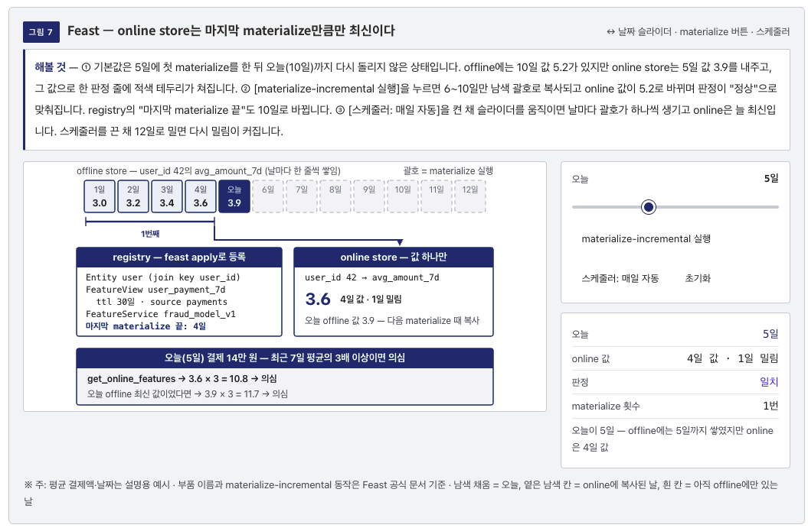
이미지 해설 (ch4_img089.png): 'Feast — online store는 마지막 materialize만큼만 최신이다'를 설명하는 다이어그램입니다. 오늘 날짜가 5일이고 오프라인 데이터는 5일까지 들어와 있더라도, 구체화 작업이 4일 시점까지만 수행되었다면 온라인 스토어는 4일 시점의 값(예: 3.6)만을 보관하고 있어 1일의 데이터 지연(Staleness)이 발생합니다. 실시간 서빙 모델이 최신 피처를 반영하려면 주기적인 구체화 작업 스케줄링(예: CronJob, Airflow)이 필수적입니다.
다음 시뮬레이터를 통해 구체화 주기와 온라인 피처 최신성 간의 관계를 직접 조작해 보세요.
⚡ Materialize 동기화 시뮬레이터
오프라인 원천 데이터 생성일과 온라인 구체화 시점의 차이에 따른 서빙 피처 최신성을 확인합니다.
3. Redis 온라인 스토어 키 구조
구체화가 끝나면 Redis 에는 엔티티(사용자)별로 최신 피처가 저장됩니다. 이 책의 예제처럼 빈 Redis 에서 시작해 한 프로젝트의 3개 뷰를 적재하고 다른 키가 없다면, Redis 의 키 개수(DBSIZE)는 고유 사용자 수와 같아집니다.
🔍 핵심 발견: 3개 뷰 90,486행 처리 vs Redis 키 30,162개:진행률 로그에서는 3개 뷰 각각 30,162행씩 총 90,486행을 처리했는데, 이 예제의 Redis 키 개수(
DBSIZE)는 30,162개(고유 사용자 수)입니다. 왜 키 개수가 90,486개가 아닐까요?
- Redis Hash 구조: Feast 0.40.1의 Redis 온라인 스토어 구현은 사용자 ID(엔티티 키)당 1개의 Redis Hash 키를 생성합니다.
- 11개 필드 저장: 각 사용자의 Hash 키 내부에는 3개 피처 뷰의 타임스탬프 필드 3개(
_ts:demographic,_ts:relationship,_ts:occupation)와 8개의 피처 값 필드가 하나의 해시 테이블 안에 필드로 저장됩니다.- 따라서 뷰가 3개라도 동일한 사용자에 대한 피처는 1개의 Redis 키에 모여 있으므로, 실시간 추론 시 사용자당 단 한 번의 Redis 조회로 모든 피처를 가져올 수 있어 매우 효율적입니다.
이 키 개수는 같은 프로젝트·같은 엔티티 키를 공유하는 뷰들을 중복 없이 적재한 예제 조건에서의 값이며, 처리 행 수와 저장 키 수가 항상 같거나 항상 이렇게 달라지는 것은 아닙니다.
⚠ Feast FeatureView TTL ≠ Redis EXPIRE 만료 시간: 이 예제의 Redis 에는 키 만료(EXPIRE)가 설정되어 있지 않습니다. FeatureView 정의에서 지정한ttl=timedelta(days=365)는 오프라인 시점 기준 조인(Point-in-Time Join) 시 참조할 과거 유효 기간(룩백 윈도)이며, Redis 키의 자동 삭제 주기와는 다른 설정입니다. 다만 Feast 0.40.1 의 Redis 온라인 스토어 설정에는 별도의key_ttl_seconds항목이 있어(기본값은 설정 없음), 이를 지정하면 엔티티 해시 전체에 Redis 만료가 걸립니다. FeatureView TTL 과 Redis 만료는 서로 다른 설정이므로 혼동하지 않도록 주의하세요.
4.2.2 피처 조회: 온라인 실시간 피처 조회 (Listing 4.13)
오프라인 스토어의 데이터를 구체화(materialize)해 Redis에 적재했다면, get_online_features 메서드로 실시간 추론에 필요한 최신 피처 값을 아주 빠르게 조회할 수 있습니다.
1. 온라인 피처 조회 코드 (Listing 4.13)
get_online_features 메서드는 오프라인 조회(get_historical_features)와 달리 타임스탬프(event_timestamp)가 필요하지 않습니다. 조회할 피처 목록과 대상 엔티티 식별자를 담은 딕셔너리 리스트(entity_rows)만 넘기면 됩니다.
# Listing 4.13 Retrieving online features 온라인 피처 조회
# Redis 온라인 스토어에서 한 사용자(9f2ac416-…)의 최신 특성을 읽어 오는 코드
from feast import FeatureStore
store = FeatureStore(repo_path=".")
online_features = store.get_online_features(
features=[
"demographic:Sex",
],
entity_rows=[
{"user_id": "9f2ac416-06e1-44a0-87bd-d4787c85bf66"}
]
)
print(online_features.to_df())
이 코드는 user_id 와 요청한 피처 Sex 두 열만 가진 한 줄짜리 표(DataFrame)를 돌려줍니다. 오프라인 조회와 달리 결과에 event_timestamp 열이 없다는 점이 눈에 띄는 차이입니다.
2. 오프라인 조회(Listing 4.12)와 온라인 조회(Listing 4.13) 비교
| 비교 항목 | 오프라인 시점 기준 조회 (get_historical_features) |
온라인 최신 피처 조회 (get_online_features) |
|---|---|---|
| 목적 및 용도 | 모델 학습(Training) 및 배치 추론(Batch Inference) | 실시간 서빙 및 저지연 추론(Real-time Serving) |
| 기준 시점 | 입력된 event_timestamp 이전 중 가장 최근 값 |
시점 파라미터 없음. 마지막 materialize로 저장된 현재 값 |
| 입력 형식 | 엔티티 DataFrame (user_id + event_timestamp) |
딕셔너리 리스트 entity_rows (예: [{"user_id": "..."}]) |
| 출력 데이터 | user_id, event_timestamp, 피처 열 포함 |
user_id, 피처 열만 포함 (event_timestamp 제외) |
| 데이터 원천 | MinIO 객체 스토리지 내 Parquet 파일 | Redis 메모리 데이터베이스 (온라인 스토어) |
| 소요 시간 | 수 초 ~ 수 분 (대용량 파일 스캔 및 시점 조인 연산) | 수 밀리초 (ms) 단위의 초저지연 메모리 조회 |
| 사전 필수 작업 | feast apply (메타데이터 등록) |
feast apply 및 feast materialize (데이터 적재) |
3. 여러 사용자·여러 피처 뷰를 한 번에 조회하기
사용자 한 명, 피처 하나만 조회할 수 있는 것은 아닙니다. features 목록에 뷰이름:피처이름 을 여러 개 담고 entity_rows 에 사용자 식별자를 여러 개 담으면, 서로 다른 피처 뷰(예: demographic, occupation, relationship)의 값을 여러 사용자에 대해 한 번의 호출로 가져옵니다. 사용자당 키 하나에 모든 뷰의 값이 모여 있기 때문에 뷰가 늘어도 조회 횟수는 늘지 않습니다.
💡 주의: 등록되지 않은 엔티티 ID를 조회하면?
온라인 스토어(Redis)에 없는 `user_id`(예: `non-existent-user`)로 조회하면 Feast는 예외를 던지지 않고 해당 사용자의 피처 값을 None(결측치)으로 반환합니다. 실시간 서빙 파이프라인에서는 신규 사용자나 결측치가 들어와도 모델이 오류를 내지 않도록 기본값 대체(imputation)나 대체 처리(fallback) 로직을 꼭 마련해 두세요.
피처 서버의 HTTP 요청·응답 계약
실제 운영 환경의 서빙 애플리케이션이나 마이크로서비스는 Python이 아니라 Java, Go, C++, Node.js 같은 다른 언어로 만들어졌을 수 있습니다. Feast에는 어떤 언어에서든 온라인 피처를 조회할 수 있도록 표준 HTTP REST API 엔드포인트를 제공하는 피처 서버(Feature Server) 기능이 들어 있습니다.
요청의 의미
온라인 피처 조회의 HTTP POST 엔드포인트는 /get-online-features입니다. JSON의 features에는 demographic:Sex처럼 피처 뷰와 피처 이름을 지정하고, entities에는 조인 키 user_id와 조회할 식별자 배열을 전달합니다. 여러 엔티티와 여러 피처를 한 요청에 포함할 수 있습니다. 피처 서버는 등록된 정의와 온라인 스토어를 사용하며, 요청 시마다 오프라인 Parquet 전체를 읽어 새로 적재하는 역할과는 구분합니다.
응답의 의미
metadata.feature_names는 반환 열 이름의 순서를 나타냅니다. results의 각 요소는 이 열 순서에 대응하며, 각 요소의 values는 요청한 엔티티 행에 대응하는 값 배열입니다. statuses는 값의 존재 상태를 나타내며 PRESENT는 값이 존재함을 뜻합니다. 값과 상태를 함께 해석해야 누락된 피처를 정상 값으로 오해하지 않습니다.
event_timestamps는 피처 값의 이벤트 시각을 담습니다. 엔티티 열 자체에는 별도의 피처 이벤트 시각이 없어 epoch 표시가 나타날 수 있으며, 이를 실제 사건 시각으로 해석하지 않습니다. 원본 문자열의 앞 공백도 값에 포함될 수 있습니다. HTTP JSON 계약을 공유하면 Java·Go 등 다양한 언어의 서빙 애플리케이션이 같은 온라인 피처 정의를 사용할 수 있습니다.
Feast UI와 피처 메타데이터 탐색
피스트(Feast)는 레지스트리에 등록된 엔티티, 피처 뷰, 데이터 소스, 태그 정보를 눈으로 확인하고 팀원과 공유할 수 있는 웹 UI를 제공합니다.
프로젝트 구성요소와 책 그림 4.11
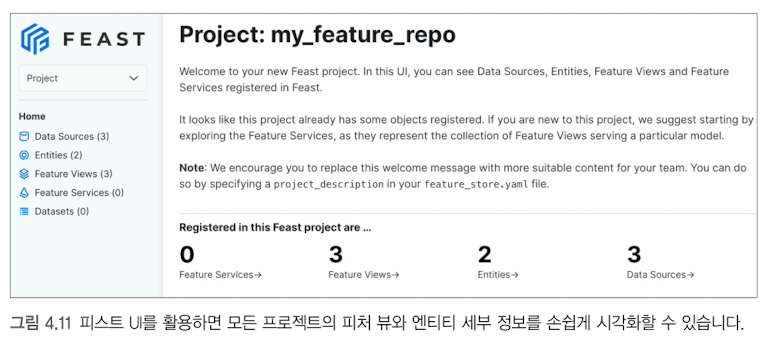
이미지 해설 (ch4_img090.png): 책의 그림 4.11에 해당하는 Feast UI 홈 화면(
Project: my_feature_repo)입니다. 중앙 대시보드 카드에 프로젝트에 등록된 구성요소 수가 요약되어 있습니다.0 Feature Services →,3 Feature Views →,2 Entities →,3 Data Sources →. 이 화면에서 현재 프로젝트에 피처가 얼마나 등록되어 있는지 한눈에 볼 수 있습니다.
피처가 수백 개로 늘어나는 조직에서는 설명(description), 작성자(authors), 담당 팀(used_by) 같은 메타데이터로 필요한 피처를 찾아 재사용할 수 있습니다. UI는 레지스트리 정의의 탐색 창구이며 온라인 값 적재와는 역할이 다릅니다.
그림의 Entities (2)와 코드의 user_id 엔티티 한 개를 단순 비교해 사용자 엔티티가 두 개라고 판단할 수는 없습니다. 시스템 엔티티 포함 여부와 UI 집계 범위를 함께 해석해야 합니다. 화면의 개수만으로 차이의 원인을 확정할 수는 없습니다.
3. 머신러닝 시스템에서 피처 스토어의 가치
중앙 집중식 피처 스토어를 도입하면 머신러닝 환경에서 다음과 같은 이점을 얻습니다.
- 훈련-서빙 왜곡(Training-Serving Skew) 방지: 학습 시점(Python/Parquet)과 실시간 서빙 시점(Redis/REST API)이 같은 피처 로직과 스키마를 공유합니다.
- 미래 정보 누수(Data Leakage) 차단: 시점 기준 조인(Point-in-Time Join)으로 예측 시점 이전의 과거 피처만 결합합니다.
- 피처 재사용과 생산성 향상: 부서마다 같은 피처 추출 파이프라인을 따로 만들 필요 없이, 중앙 레지스트리에서 이미 등록된 피처를 찾아 모델 개발에 바로 쓸 수 있습니다.
- 다양한 백엔드 연동: Feast 공식 문서에 따르면 Snowflake, BigQuery, Spark 같은 오프라인 스토어와 Redis, DynamoDB, Datastore 같은 온라인 스토어를 연동할 수 있습니다. 공통 피처 정의와 시점 기준 조인은 왜곡과 미래 정보 누수를 줄이는 기반입니다. 실제 보장 범위는 이벤트 시각, 데이터 도착·수정 시각, 계산 로직과 갱신 주기를 얼마나 일관되게 관리하는지에 달려 있습니다.
Feast의 개념 복습과 오케스트레이션의 필요성
정의·등록·적재·조회의 구분
- Entity는 피처가 연결되는 대상을 식별합니다. 사용자에는
user_id, 제품에는product_id같은 조인 키가 쓰입니다. - 데이터 소스는 원본 파일의 위치와 읽기 형식을 설명하고, FeatureView는 연관 엔티티·스키마·TTL을 가진 피처의 논리적 묶음입니다.
- TTL은 과거 데이터셋 생성의 룩백 윈도입니다. 이 예제의 365일은 과거 조회 범위이며 Redis 키의 만료 설정과 다릅니다.
- 레지스트리는 피처와 엔티티의 공통 정의를 보관합니다. 등록은 정의를 갱신하는 단계이며 피처 값 적재를 뜻하지 않습니다.
- 구체화는 지정한 기간의 오프라인 Parquet에서 엔티티별 최신값을 온라인 스토어로 적재합니다.
- 과거 조회(
get_historical_features)는event_timestamp기준으로 학습·배치 데이터를 만들고, 온라인 조회(get_online_features)는 이미 적재된 최신값을 추론에 제공합니다.
MLflow와 Feast 결합의 의의와 한계
4장에서는 신뢰할 수 있는 머신러닝 시스템을 만들기 위한 핵심 축 두 가지를 갖췄습니다.
- MLflow: 모델 실험 추적 서버(Tracking Server)와 모델 레지스트리(Model Registry)로 훈련 과정의 파라미터, 지표, 모델 아티팩트의 이력을 기록하고 재현성을 확보했습니다.
- Feast: 피처 레지스트리, 오프라인 시계열 스토어, 온라인 저지연 스토어로 학습과 실시간 서빙 전반에서 피처 엔지니어링 로직을 하나로 일관되게 관리합니다.
남은 과제: 수동 개입의 한계와 오케스트레이션의 필요성
정의와 저장소만 갖춘 시스템은 갱신·재훈련·배포의 조율을 별도로 필요로 합니다.
- 피처 갱신이 수동입니다: 새 트랜잭션 데이터가 쌓일 때마다 엔지니어가 직접 Parquet 파일을 만들어 S3에 올리고
feast materialize를 실행해야 합니다. 구체화를 깜빡하면 온라인 서빙 모델은 낡은(stale) 피처로 예측하게 됩니다. - 재훈련이 수동입니다: 데이터 분포가 변하거나(Data Drift) 새 데이터가 대량으로 들어오면 모델 재훈련 스크립트를 직접 다시 실행하고 MLflow에서 성능을 비교해야 합니다.
- 구성 요소 사이의 조율이 없습니다: Feast에서 피처를 가져와 학습하고, 평가 결과를 MLflow에 기록한 뒤, 성능이 가장 좋은 모델을 서빙 환경에 배포하는 전체 흐름이 하나로 연결되어 있지 않습니다.
이런 수동 작업은 데이터 규모가 커지고 모델 업데이트 주기가 짧아지는 프로덕션 환경에서 운영 실패의 주된 원인이 됩니다. 그래서 다음 장에서는 Kubeflow Pipelines(KFP)로 이 모든 과정을 하나의 자동화된 파이프라인으로 연결하고 조율(Orchestration)하는 방법을 배웁니다.
Kubernetes(K8s) 환경에서의 Feast 프로덕션 아키텍처와 설계 원칙
Kubernetes(K8s) 환경에서의 Feast 프로덕션 아키텍처와 설계 원칙
로컬 PC나 단일 가상머신과 달리, Kubernetes 클러스터에서 Feast 피처 스토어를 프로덕션 수준으로 운영하려면 각 구성 요소의 역할과 수명주기(Lifecycle)를 독립적인 Pod, Service, Job, CronJob으로 나누어 설계해야 합니다.
1. K8s 환경에서의 Feast 구성 요소
K8s 환경에서 Feast는 저장소 계층, 제어 계층, 서빙 계층, 동기화 계층으로 역할을 명확히 분리합니다.
flowchart TD
subgraph K8s["Kubernetes Cluster"]
subgraph Storage["저장소 계층"]
MinIO["MinIO Pod / Service (S3 API)<br/>- feature-data-sets (Parquet)<br/>- feature-registry (DB)"]
Redis["Redis Pod / Service<br/>(Online Store)"]
end
subgraph FeastControl["Feast 제어 계층"]
Operator["Feast Operator<br/>(Controller Pod)"]
CR["FeatureStore CR<br/>(feast.dev/v1)"]
ApplyJob["Feast Apply Job<br/>(CI/CD 배포 시 메타데이터 갱신)"]
end
subgraph FeastServing["Feast 서빙 계층"]
ServerPod["Feast Feature Server Pods<br/>(REST API 6566 - Horizontally Scaled)"]
ServerSvc["Feature Server Service / Ingress"]
end
subgraph FeastSync["Feast 동기화 계층"]
CronSync["Feast Materialize CronJob<br/>(주기적 오프라인 → 온라인 적재)"]
end
end
Client["추론 서비스 / 클라이언트"] -->|HTTP POST| ServerSvc
ServerSvc --> ServerPod
ServerPod -->|초저지연 조회| Redis
ServerPod -.->|레지스트리 읽기| MinIO
CronSync -->|1. Parquet 읽기| MinIO
CronSync -->|2. 최신값 푸시| Redis
CR -.-> Operator
Operator --> ServerPod
ApplyJob -->|메타데이터 등록| MinIO2. K8s 프로덕션 배포 설계 원칙
네임스페이스와 백엔드 저장소 연결 및 보안
- MinIO와 Redis가 클러스터 내부 Pod으로 실행 중인 경우,
localhost주소를 쓰지 않고 클러스터 내부 DNS 서비스 주소(예:minio.kubeflow.svc.cluster.local:9000,redis-master.redis.svc.cluster.local:6379)를 사용합니다. - 민감한 접속 정보(S3 시크릿 키, Redis 비밀번호)는 Kubernetes
Secret객체로 관리하여 컨테이너 환경변수로 안전하게 주입합니다.
선언적 인프라 관리 (Operator와 Custom Resource)
- Feast 공식 Kubernetes Operator를 활용하면
FeatureStore커스텀 리소스(CR)를 통해 레지스트리 경로, 온라인 스토어 연결 정보, 오프라인 스토어 구성을 선언적으로 관리할 수 있습니다. - 인프라 변경 사항은 CI/CD 파이프라인의 일회성
feast applyJob을 통해 중앙 레지스트리에 배포됩니다.
구체화(Materialization) 자동화: K8s CronJob
- 프로덕션 환경에서는 엔지니어가 수동으로 CLI를 실행하지 않고, Kubernetes
CronJob을 설정하여 주기적으로(예: 10분 또는 1시간 단위)feast materialize또는feast materialize-incremental명령이 실행되도록 스케줄링합니다. - 메모리 제약 주의: Feast의 기본 in-process 구체화 엔진은 오프라인 데이터를 파드 메모리로 한 번에 읽어 들인 뒤 온라인 스토어에 씁니다. 데이터셋이 크면 파드가 OOM(Out Of Memory)으로 강제 종료될 수 있으므로,
online_write_batch_size를 조절하거나 Spark/Ray 분산 구체화 엔진 연동을 고려해야 합니다.
프로덕션 레지스트리 권장 사항 (SQL Registry)
- 기본 파일/S3 레지스트리(
registry_local.db)는 Protobuf 직렬화 파일 포맷으로,.db확장자를 사용하지만 SQLite 데이터베이스가 아닙니다. 단일 파일 레지스트리는 여러 워커나 파드가 동시에 메타데이터를 갱신할 때 동시 쓰기(Concurrency) 충돌 및 덮어쓰기 위험이 있습니다. - 여러 파드와 CI/CD 파이프라인이 동시에 접근하는 프로덕션 환경에서는 PostgreSQL이나 MySQL 같은 관계형 데이터베이스 기반의 SQL 레지스트리(
SQL Registry)를 중앙 레지스트리로 사용하는 것이 권장됩니다.
CH4 한눈에 보기 (종합 아키텍처) 및 다음 장(CH5) 안내
CH4 한눈에 보기 (종합 아키텍처) 및 다음 장(CH5) 안내
4장에서 배운 '신뢰할 수 있는 머신러닝 시스템 설계(Designing Reliable ML Systems)'의 전체 데이터 흐름과 구성을 한 번에 정리하고, 파이프라인 자동화를 다루는 5장(CH5)과 어떻게 이어지는지 설명합니다.
1. CH4 종합 데이터 흐름도 (MLflow & Feast)
아래 다이어그램은 4장에 나온 클라이언트(노트북/CLI), MinIO 객체 스토리지, Redis 온라인 스토어, MLflow 추적·레지스트리 서버, Feast 피처 스토어가 어떤 순서로 상호작용하는지 한눈에 보여 줍니다.
sequenceDiagram
autonumber
actor Dev as 데이터 과학자 / 엔지니어
participant Notebook as JupyterLab / CLI
participant MinIO as MinIO (S3 객체 스토리지)
participant MLflow as MLflow (추적 & 모델 레지스트리)
participant Feast as Feast CLI / Feature Server
participant Redis as Redis (온라인 스토어)
Note over Dev,Redis: [1단계: 탐색적 데이터 분석(EDA) 및 실험 추적]
Dev->>Notebook: 성인 인구조사 데이터 로드 및 전처리
Notebook->>MinIO: 원본 CSV 및 분할 데이터 저장
Notebook->>MLflow: mlflow.set_experiment("income-classifier")
loop 모델 훈련 실험 (DecisionTree, RandomForest, XGBoost)
Notebook->>MLflow: mlflow.start_run() 및 파라미터/지표 기록
Notebook->>MinIO: 생성된 플롯 및 모델 아티팩트 직접 업로드
end
Notebook->>MLflow: search_runs로 최고 ROC-AUC 모델 검색
Notebook->>MLflow: mlflow.register_model() -> Model Registry에 v1 등록
Note over Dev,Redis: [2단계: 피처 스토어 구축 및 등록]
Dev->>Notebook: 도메인별 3개 Parquet 분할 (demographic, relationship, occupation)
Notebook->>MinIO: s3://feature-data-sets/ 에 Parquet 파일 3개 업로드
Dev->>Feast: feast apply (entity.py, features.py, feature_store.yaml)
Feast->>MinIO: s3://feature-registry/ に registry_local.db 생성
Feast->>Redis: 온라인 스토어 인프라 스키마 준비
Note over Dev,Redis: [3단계: 시점 기준 과거 피처 조회 (오프라인 학습)]
Notebook->>Feast: get_historical_features(entity_df, features)
Feast->>MinIO: registry_local.db 확인 및 Parquet 파일 시계열 스캔
MinIO-->>Notebook: 시점 기준(Point-in-Time Join) 정합 학습 DataFrame 반환
Note over Dev,Redis: [4단계: 구체화(Materialize) 및 실시간 서빙]
Dev->>Feast: feast materialize START_TS END_TS
Feast->>MinIO: 지정 기간 최신 피처 데이터 읽기
Feast->>Redis: 사용자 ID당 1개 Hash 키(11개 필드)로 최신값 적재 (30,162건)
Dev->>Feast: feast serve 기동 (HTTP 6566)
Note over Dev,Redis: [5단계: 초저지연 온라인 피처 서빙]
Dev->>Feast: HTTP POST /get-online-features (user_id)
Feast->>Redis: Redis 메모리 키 직접 조회 (지연시간 < 5ms)
Redis-->>Feast: 최신 피처 필드 반환
Feast-->>Dev: JSON 응답 (PRESENT, Sex: Male)2. 핵심 개념 요약 표
| 영역 | 핵심 컴포넌트 | 해결하는 핵심 엔지니어링 문제 |
|---|---|---|
| 실험 추적 (MLflow Tracking) |
Runs, Experiments, Parameters, Metrics, Artifacts | "누가, 어떤 하이퍼파라미터와 데이터로 학습했는가?"를 이력으로 남기고 재현할 수 있게 함 |
| 모델 관리 (Model Registry) |
Model Lineage, Versions, Aliases (@champion) |
"현재 서비스 중인 모델은 몇 번 버전인가?"를 한곳에서 추적하고, 중단 없이 롤백·승격할 수 있게 함 |
| 피처 스토어 (Feast Registry) |
Entity, FeatureView, FileSource, Tags | "학습 코드와 서빙 코드의 피처 계산식이 달라지는 왜곡(Skew)"을 막고 피처 정의를 하나로 공유 |
| 시계열 조인 (Point-in-Time) |
get_historical_features, event_timestamp, ttl |
"예측 시점 이후의 미래 정보가 훈련 데이터에 섞이는 누수(Leakage)"를 시간 기준으로 차단 |
| 온라인 서빙 (Redis & Server) |
feast materialize, get_online_features, feast serve |
대용량 데이터웨어하우스를 거치지 않고 메모리 캐시에서 밀리초(ms) 단위로 실시간 추론용 피처 제공 |
3. 다음 장 안내: CH5 파이프라인 오케스트레이션 (Kubeflow Pipelines)
4장에서는 모델 실험을 관리하는 체계와 일관된 피처 서빙 인프라를 갖췄습니다. 하지만 앞에서 본 것처럼 다음 작업은 여전히 수동(Manual)으로 남아 있습니다.
- 새 데이터가 도착했을 때 Parquet 변환과 S3 업로드
- Redis 온라인 스토어로 보내는 주기적
feast materialize동기화 - 새 데이터셋으로 모델을 재훈련(Retraining)하는 시점 결정
- 재훈련된 모델의 성능 지표를 검증하고 승격(Champion 교체) 여부 판정
다음 5장(CH5: Orchestrating ML Pipelines) 에서는 이런 수동 작업을 처음부터 끝까지(End-to-End) 자동화하기 위해 쿠브플로우 파이프라인(Kubeflow Pipelines, KFP)을 배웁니다.
- DAG 기반 워크플로: 데이터 수집, 피처 준비(Feast), 모델 훈련과 로깅(MLflow), 성능 평가, 조건부 모델 등록을 컨테이너 기반의 유향 비순환 그래프(DAG)로 정의합니다.
- 배치 추론 자동화: 대규모 사용자 집단에 오프라인 피처를 결합해 예측을 한꺼번에 만들어 내는 배치 추론 파이프라인을 구축합니다.
- 재현 가능하고 확장 가능한 MLOps: 인프라 종속성을 격리된 Docker 컨테이너 단계로 분리해, 대규모 분산 클러스터에서 안정적으로 자동 실행되는 프로덕션 MLOps 파이프라인으로 나아갑니다.
도구 비교: 피처 스토어와 실험 추적
제품 이름보다 운영 책임을 비교합니다
피처 스토어와 실험 추적의 역할을 구분했다면, 도구 선택에는 “어디까지 제품에 맡기고 무엇을 팀이 운영할 것인가”라는 질문이 남습니다. 같은 기능 이름이 있어도 데이터 계산, 보관, 갱신, 접근 통제, 장애 복구의 제공 범위는 다릅니다. 이 차이를 총 운영 비용으로 함께 평가해야 합니다. 총 운영 비용은 이용료뿐 아니라 인프라와 관리 인력, 백업·복구·보안 작업까지 포함하는 비용입니다.
Feast는 피처 정의와 조회를 기존 저장소·계산 파이프라인에 연결하는 데 쓰입니다. Tecton의 제품 소개는 원천 데이터를 피처로 변환하고 최신성을 관리하는 피처 계층을 강조합니다. Hopsworks는 Feature Group이라는 피처 관리 단위와 온라인·오프라인 저장소를 연결하는 관점을 제공합니다. 이러한 설명을 특정 계산 엔진의 기본 탑재나 모든 환경의 성능 순위로 확대하지 않습니다.
실험 추적에서는 MLflow와 Weights & Biases가 설정·지표·모델 산출물의 기록과 비교를 지원합니다. MLflow의 모델 패키징·레지스트리 연결과 W&B의 추적·시각화·공유 기능은 선택할 때 살펴볼 경로입니다. 어느 제품을 사용해도 데이터 위치와 접근 권한, 보존·내보내기 정책을 구체적으로 확인해야 합니다.
도입 전에 답할 네 가지 질문
| 선택 질문 | 피처 스토어에서 볼 것 | 실험 추적에서 볼 것 |
|---|---|---|
| 현재 플랫폼과 어떻게 연결하나요 | 원천 계산과 저장소의 연결 범위 | 학습 코드·모델 포맷·레지스트리의 연결 |
| 어느 정보를 어디에 보관하나요 | 피처 값·정의·과거 이력의 위치 | 메타데이터와 모델 파일의 위치 |
| 누가 장애와 변경을 관리하나요 | 계산 실패·갱신 지연·조회 장애 | 서버·DB·파일 저장소·백업과 복구 |
| 필요한 규모와 재사용은 무엇인가요 | 배치·온라인 조회, 최신성 목표 | run 수·파일 크기·협업과 검색 |
기존 웨어하우스가 있고 배치용 피처만 필요하다면 온라인 복제부터 필요한지 판단합니다. 스트리밍 피처의 갱신과 서빙이 중요하다면 계산·전달·장애 대응의 운영 부담을 크게 봅니다. 조회 속도와 데이터 최신성은 다른 요구이므로 제품의 빠른 조회 설명만으로 갱신 지연 목표도 충족한다고 판단하지 않습니다.
규모는 수치로, 가격은 조건으로 봅니다
다음은 가상의 예시입니다. 연구자 5명이 매일 20개 run씩 30일 동안 남기면 3,000개 run입니다. run마다 모델 파일이 50MB라면 모델만 약 150GB가 됩니다. 이 계산은 저장 규모를 생각하기 위한 예이며 제품 가격표가 아닙니다. 파일 외 지표와 기타 산출물, 보관 기간과 백업 정책에 따라 관리량은 더 달라집니다.
같은 규모라도 팀이 이미 저장소와 인증 체계를 운영하는지에 따라 직접 운영의 추가 부담이 달라집니다. 자체 설치에는 저장소·인증·백업·감사 정책의 책임이 남습니다. 설치 위치가 사내라고 데이터 영속성과 규정 준수가 저절로 완성되지는 않습니다. 관리형 서비스도 제공 기능, 데이터 이동 범위, 계약 조건에 따라 맡길 수 있는 책임이 달라집니다.
도구 교체에 대비하려면 모델·데이터·피처 정의의 식별자를 특정 화면 밖에서도 이해할 수 있게 남깁니다. 이식 가능성과 기록 내보내기는 가격이나 화면 취향과 별개인 선택 기준입니다. 확인할 조건을 먼저 정하면 근거 없는 가격·성능 숫자보다 실제 팀의 요구를 중심으로 비교할 수 있습니다.
참고 문서 Feast Architecture — https://docs.feast.dev/getting-started/architecture/overview ; Tecton Introduction — https://docs.tecton.ai/docs/introduction ; Hopsworks Feature Groups ; MLflow Tracking — https://mlflow.org/docs/latest/ml/tracking/ ; W&B Track — https://docs.coreweave.com/products/wandb/track
참고 자료
- [Notion] 본문에서 연결된 페이지 (SVG 캡션 'Untitled'의 링크) — 열어 보지 못해 내용을 확인하지 않았습니다
- [참고 링크] devlos 블로그 — 일부만 확인했고, 4장 전용 글인지는 알 수 없습니다
- uv 공식 문서 (Python 환경·패키지 관리 도구)
- Feast 공식 문서
- Feast 공식 문서: Running Feast in production
- [참고 링크] 수강생 스터디 저장소 week01.md (kind 기반 실습 기록)
- 이 장의 코드 저장소 practical-mlops/chapter-4
- chapter-4 저장소: feast/entity.py
- chapter-4 저장소: feast/features.py
- chapter-4 저장소: mlflow/data_exploration_and_model_training.ipynb
- chapter-4 저장소: feast 폴더
- chapter-4 저장소: feast_retrieval 폴더
- [참고 링크] macOS 5000번 포트 점유(AirPlay 수신 모드) 사례 글
- [참고 링크] 4장 해설 블로그 (4~5장 연결 실습 글, 그림 캡션의 링크)
- scikit-learn 공식 문서
- SeaweedFS 공식 사이트 (MinIO 대체 후보, 대체 가능 여부는 확인 항목)
- [참고 링크] ssungz 블로그 — 일부만 확인했습니다
- Valkey 공식 사이트 (Redis 대체 후보, 호환 범위는 확인 항목)
- [참고 영상] Feast Operator 관련 영상 — 영상 내용은 직접 보지 않고 링크만 안내합니다. 영상 속 apiVersion(v1alpha1)은 최신 환경에서 다를 수 있으니 최신 공식 문서를 확인하세요
- scikit-learn roc_auc_score 공식 문서
- MLflow Tracking 공식 문서 (latest)
- MLflow Tracking 3.0.0 문서
- MLflow xgboost 모듈 코드 (v3.0.0)
- Feast Point-in-time Joins 공식 가이드
- Feast 온라인 스토어 (Redis) 공식 문서
- Feast 공식 GitHub 저장소